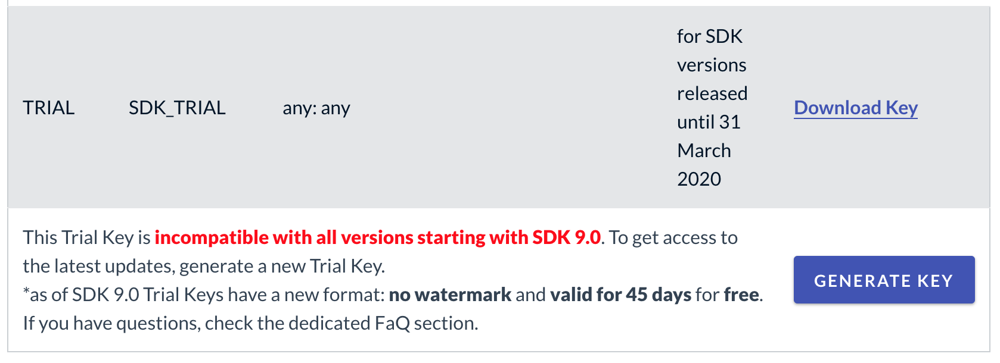

Getting started
Introduction to the Wikitude SDK
Welcome to the Wikitude SDK. This document is designed to help you from your very first steps with the Wikitude SDK all the way through to advanced concepts and examples for developing your augmented reality project.
Recommended Usage of this Documentation
The documentation is arranged in a way to guide you through the various steps in your development process. We recommend following each of the steps outlined below and reading the documentation in the order displayed.
Setup your project
In this section we describe the necessary steps to setup a project in a detailed guide.
View the samples
All of the included samples are complete Android projects and apps. Browse through this section and get an idea of what the Wikitude SDK Native API is capable of. The relevant parts of the samples are described in more detail to highlight the applied concepts and patterns. These examples are designed to help you get off to a great start with the Wikitude SDK.
Viewing samples based on vision based augmented reality requires the corresponding reference images. All of them are available directly in the description of the sample or available as a collection on this page, which you can either view on the screen or print.
The Wikitude Native SDK - Augmented Reality for your own app
The Wikitude Native SDK is a software library and framework for mobile apps used to create augmented reality experiences.
As opposed to the Wikitude SDK which uses a JavaScript API the Wikitude Native SDK allows to create your AR experiences directly in Java and OpenGL.
Architecture of the Wikitude SDK
The image above shows the different components of the Wikitude SDK and possible approaches for creating augmented reality apps. Each of these approaches is based on certain development environments (IDE) and platforms:
- Computer Vision Engine: The computer vision engine is part of the core component of the Wikitude SDK and used by all platforms. It includes three major parts in its own: SLAM Engine, Image Recognition Engine and the Object Recognition engine. The CV Engine is not directly accessible but wrapped either by the Native API (Java, ObjC) or the JavaScript API.
- Wikitude SDK - Native API: Provides access to the Wikitude computer vision engine natively for Android (Java), iOS (ObjC) and Windows UWP. It also can load plugins via the Wikitude Plugins API.
- Wikitude SDK - JavaScript API: Allows to build augmented reality worlds on basis of HTML and JavaScript. It is available for Android and iOS. The JavaScript API provides access to the functionality of the computer vision engine, location based AR, the Plugins API, and dedicated rendering functionality.
- Wikitude SDK - Plugins API: An API to connect your own plugins to the Wikitude SDK. (NOTE: Wikitude SDK plugins have nothing to do with the Cordova or Unity Plugin concept.)
- Wikitude SDK - Cordova Plugin: On top of the JavaScript API the Cordova plugin allows to use the Wikitude SDK in combination with Apache Cordova.
- Wikitude SDK - Flutter Component: On top of the JavaScript API the Flutter component allows to use the Wikitude SDK in combination with Flutter.
- Wikitude SDK - Unity3D Plugin: On top of the Native API the Unity plugin allows to use the Wikitude SDK in combination with Unity.
- Wikitude SDK - Xamarin Component: On top of the JavaScript API the Xamarin component allows to use the Wikitude SDK in combination with Xamarin.
The Wikitude Developer Portal
The Wikitude Developer Section should be your first stop when you have specific development related questions. The portal hosts a very active Developer Community Forum where Wikitude staff members are constantly assisting other developers with helpful tips and advice. You can find How-To's and a constantly evolving FAQ section there as well.
Feedback and Contact
We are always interested in your feedback and suggestions how we can improve this documentation. Please use the contact form on our website or visit us on Linkedin, Facebook or Twitter.
Requirements
Before getting started, you need to make sure you have the appropriate tools, such as an IDE and compatible devices where you will run your apps.
Android Development
There is just one prerequisite you need to download:
- Android Studio: Android's official IDE. Available in the Android's official page.
Supported Android Devices
Wikitude SDK (Android Native API) is running on devices fulfilling the following requirements:
| Sensor-based AR (Geo-AR) | Image recognition and tracking | Instant tracking & |
|
|---|---|---|---|
Android (Native API) |
|||
Android (Native API) |
|
|
|
Project Setup
There are only a few steps necessary to add the Wikitude SDK to your Android application. This guide will explain them in detail.
Create an Android project
- Create a new Android Studio Application Project (There is also a working GettingStartedProject and a SampleProject bundled in this SDK, where these steps are already made)
Adding the Wikitude SDK
Download the Android Native SDK example and copy the
wikitude_native_sdk.aarfile, that is located in theLibraryfolder, into the libs folder of your module (project root/app/libs)Open
build.gradle (Module: app), make sure the minSdkVersion is 22 or higher, add thewikitude_native_sdk.aaras a dependency and tell gradle to search the libs folder, like in the code below.
android {
...
defaultConfig {
minSdkVersion 22
...
}
}
dependencies {
implementation fileTree(dir: 'libs', include: ['*.jar'])
implementation (name: 'wikitude-native-sdk', ext:'aar')
implementation "com.google.ar:core:1.15.0"
...
}
repositories {
flatDir{
dirs 'libs'
}
}
Optionally you can include the Wikitude SDK using our custom maven repository instead.
- Add
https://cdn.wikitude.com/sdk/mavenas maven source to your project. This is usually done in the top levelbuild.gradle.
buildscript {
repositories {
jcenter()
google()
maven {
url 'https://cdn.wikitude.com/sdk/maven'
}
}
...
}
allprojects {
repositories {
jcenter()
google()
maven {
url 'https://cdn.wikitude.com/sdk/maven'
}
}
}
- Open
build.gradlefrom your module and addcom.wikitude:native:9.6.0as a dependency like in the code below.
android {
...
}
dependencies {
implementation fileTree(dir: 'libs', include: ['*.jar'])
implementation 'com.wikitude:native:9.6.0'
implementation 'com.android.support:appcompat-v7:27.1.0'
implementation 'com.google.ar:core:1.15.0'
}
- If you already purchased a license, please set the applicationId to the package name you provided us with.
defaultConfig {
applicationId "xxxx"
}
Add permissions
- Add the following permissions and features to your AndroidManifest.xml
<uses-permission android:name="android.permission.CAMERA" />
<uses-permission android:name="android.permission.WRITE_EXTERNAL_STORAGE" />
<uses-permission android:name="android.permission.INTERNET" />
<uses-feature android:glEsVersion="0x00020000" android:required="true" />
<uses-feature android:name="android.hardware.camera" android:required="true" />
WikitudeSDK.onCreate().
- Also in the Android manifest define following config changes for the activity which adds the OpenGL view
<activity
android:name="YOUR_PACKAGE_NAME.YOUR_ACTIVITY_NAME"
android:configChanges="orientation|keyboardHidden|screenSize" />
Trial license key generation
- Read this chapter on how to obtain a free trial key, which you will later pass to the Wikitude Native SDK.
WTC file generation
- Read this chapter on how to create a .wtc file, which you will later need to track the images you want. In the Image Tracking section, you can learn more about how to track those images.
License Key
The Wikitude SDK requires a valid license key to be able to run properly. An empty or missing license key will block the augmented reality view from showing any meaningful content. You will see a watermark across the screen with the words License Key Missing.
How to obtain a free trial license
When downloading the Wikitude SDK you will be forwarded to the license generation page, where you can generate a trial license key for your project.

Copy the key into your app, which will unlock the trial mode of the Wikitude SDK. The trial mode of the Wikitude SDK contains the full feature set of the Wikitude SDK for a limited amount of time and will show the Wikitude logo in the corner of the camera view. A commercial key will remove this logo and show a blank camera view.
Each trial license key is valid for every application ID on every operating system. You can use the same trial license key in multiple apps.
Where should I enter the license key
To use the Wikitude Android SDK you need to provide a valid license key to the onCreate lifecycle method of the Wikitude SDK object.
Create a NativeStartupConfiguration object and pass it the license as a string and then call the onCreate(getApplicationContext(), startupConfiguration) method.
NativeStartupConfiguration startupConfiguration = new NativeStartupConfiguration();
startupConfiguration.setLicenseKey(WikitudeSDKConstants.WIKITUDE_SDK_KEY);
wikitudeSDK.onCreate(getApplicationContext(), startupConfiguration);
Examples
The following examples should give you an overview of the capabilities offered by the Wikitude SDK. Each sample is capable of running without modifications on all supported platforms.
The Sample App is a fully functional sample project either for Android or iOS. You can easily import it into Android Studio or Xcode and work from there. The user interface is kept very simple and shows a list to select the sample you are interested.
Wikitude SDK Android Native API Examples
This section describes the Native SDK Sample project in detail and highlights the main features and use-cases of the Wikitude SDK.
The project is part of the SDK bundle and is an Android Studio project, ready to run on any of the supported Android devices.
Note: You cannot run the Wikitude SDK project on an Android Emulator due to OpenGL restrictions.
Run through the setup guide, install the sample project on your device and scroll through the sample list.
Setup
- Download latest Android SDK and Android NDK(optional) through the Android Studio Bundle.
- From the main menu bar, select
File->Openwhich will open the import wizard. - Navigate to the
NativeSDKExamplesproject folder from the package you downloaded from us. - Click
Chooseto open the Example project. - Use an Android device that has all hard- and software requirements (see Supported Devices).
- Enable USB debugging on your device.
- Plug in the device via USB.
- Back in Android Studio click on the green "Play"-Button to install the Example application on your device.
Image Recognition
Introduction
This example shows how to recognize images in the viewfinder and overlay it with images. Furthermore it shows how to recognize multiple different images and how to react on user clicks on the overlaid elements.
For a better understanding, here are some terms that will be used in the following and other section of this documentation related to augmented reality.
Target: A target image and its associated extracted data that is used by the tracker to recognize an image.
Target collection: An archive storing a collection of targets that can be recognized by the tracker. A target collection can come from two different resource types
- Plain: A regular ZIP file containing images in plain JPG or PNG format
- Pre-processed: Regular images that are converted into a WTC file (Wikitude Target collection) for faster processing and storing more images offline.
ImageTracker: The tracker analyzes the live camera image and detects the targets stored in its associated target collection. Multiple trackers can be created, however only one tracker can be active for recognition at any given time.
Make sure to read the chapter on how to create Image Targets before using Image Recognition on your own.
Extended Recognition Range
Introduced with SDK 7.0, the Wikitude SDK Image Recognition engine can make use of HD camera frames to detect images from further away. Further away in this context means distances 3x further away, compared to not enabling this mode (e.g. A4-sized target can reach recognition distances in the area of 2.4 meters/ 8 feet). This feature is called Image Recognition Extended Range and can be activated through a setting in the ImageTracker class. The setting extendedRangeRecognition is optional and accepts the following three constants
ONOFFAUTO(default)
see ImageTrackerConfiguration.ImageRecognitionRangeExtension
Processing a HD camera frame in the pipe-line is computationally more expensive - this means that this feature is only activated, if the phone can handle this additional effort without sacrificing user experience. The AUTO setting will determine that based on available CPU power and camera access (e.g. Camera2 API for Android) and is the default setting in the SDK.
Simple Image Tracking Android
In this section we will go through the code of the SimpleImageTrackingActivity, which you can find in the example application under the package com.wikitude.samples.tracking.image. We will discuss general concepts on how to use the Wikitude Native SDK as we go along, please don't skip this section even if you are for example only interested in cloud recognition.
The WikitudeSDK class is structured to be used in a standard Android activity and to make use of the activities life cycle events. We will use interfaces to communicate to the WikitudeSDK which type of rendering method we would like to use and to provide the necessary callbacks for Client- and Cloud-Trackers.
First let us have a look at the declaration of the activity class.
public class SimpleImageTrackingActivity extends Activity implements ImageTrackerListener, ExternalRendering {
...
}
We subclass the standard Android activity and implement the interfaces ImageTrackerListener and ExternalRendering. Later on when we create the instance of the WikitudeSDK we will pass the this pointer of our activity to the WikitudeSDK constructor and this way indicate our chosen type of rendering. In this example we will use external rendering, for details on how to setup the rendering and the difference between internal and external rendering please read through the section on rendering.
The next step we will take is create an instance of the WikitudeSDK class. This and the NativeStartupConfiguration are the only objects you will need to create by yourself, every other object will be created by factory methods of the WikitudeSDK instance.
We are now going through each method of the SimpleImageTrackingActivity class, starting with onCreate. In the onCreate method we instantiate an instance of the WikitudeSDK, and an instance of the NativeStartupConfiguration, which will hold our license key. If you do not have a license key yet, read this chapter on how to obtain a free trial key. After that we are ready to propagate the onCreate life cycle event to the Wikitude SDK. It is very important that you do propagate onCreate, onPause and onResume otherwise the Wikitude SDK won't be able to properly manage its resources which will lead to unexpected behavior.
After we called the WikitudeSDK onCreate method the SDK is initialized and we are now able to create a TargetCollectionResource and an ImageTracker. To do that we get the TrackerManager from the WikitudeSDK instance and call createTargetCollectionResource passing the url to the WTC file. Since we are loading an asset on the device we indicate that by starting the url with the string file:///android_asset/ and add the path to the file starting from the asset root directory.
After createTargetCollectionResource we can create the ImageTracker that will use this newly created TargetCollectionResource by calling the createImageTracker method from the TrackerManager.
To get notified when the Tracker finished loading, recognized a target and so on we register the Activity which implements ImageTrackerListener as a Listener by passing this as the second parameter to the function.
@Override
protected void onCreate(Bundle savedInstanceState) {
super.onCreate(savedInstanceState);
wikitudeSDK = new WikitudeSDK(this);
NativeStartupConfiguration startupConfiguration = new NativeStartupConfiguration();
startupConfiguration.setLicenseKey(WikitudeSDKConstants.WIKITUDE_SDK_KEY);
startupConfiguration.setCameraPosition(CameraSettings.CameraPosition.BACK);
startupConfiguration.setCameraResolution(CameraSettings.CameraResolution.AUTO);
wikitudeSDK.onCreate(getApplicationContext(), this, startupConfiguration);
final TargetCollectionResource targetCollectionResource = wikitudeSDK.getTrackerManager().createTargetCollectionResource("file:///android_asset/magazine.wtc");
wikitudeSDK.getTrackerManager().createImageTracker(targetCollectionResource, this, null);
}
The next important method to look at is the onRenderExtensionCreated method. Since we decided to use the external rendering functionality by implementing ExternalRendering, the WikitudeSDK provides us with a RenderExtension. The RenderExtension interface exposes the same methods as the standard GLSurfaceView.Renderer. In your custom GLSurfaceView.Renderer the first thing to do in every method is to always call the same method on the provided RenderExtension. To be able to that we pass the RenderExtension to the constructor of our Renderer, create our SurfaceView, initialize a Driver and set our SurfaceView as our content view.
@Override
public void onRenderExtensionCreated(final RenderExtension renderExtension) {
glRenderer = new GLRenderer(renderExtension);
view = new CustomSurfaceView(getApplicationContext(), glRenderer);
driver = new Driver(view, 30);
setContentView(view);
}
Next we will have a look at the ImageTrackerListener interface. The onErrorLoadingTargets method will be called like the name suggest when the Wikitude SDK wasn't able to load the targets from the target collection resource into the image tracker. This is called, for example, when the loading of the file was successful, but the contents were corrupted or somehow incompatible with the image tracker. The onTargetsLoaded method will be called once when the targets were successfully loaded into the tracker. When the image tracker first recognizes a target it will call onImageRecognized providing you with the recognized target name. When the image tracker starts tracking this target it will call onImageTracked continuously until it loses the target and finishes tracking with a call to onImageLost.
The ImageTarget object provided in the onImageTracked method contains information about the tracked target like the name, the distance to the target and most importantly the matrices which describe where on the camera frame the target was found. We create a StrokedRectangle instance when the image is recognized, update its matrices when it is tracked and remove is when it is lost. The scale values being set allow for the StrokedRectangle to adjust to the target's aspect ratio.
@Override
public void onTargetsLoaded(ImageTracker tracker) {
Log.v(TAG, "Image tracker loaded");
}
@Override
public void onErrorLoadingTargets(ImageTracker tracker, WikitudeError error) {
Log.v(TAG, "Unable to load image tracker. Reason: " + error.getMessage());
}
@Override
public void onImageRecognized(ImageTracker tracker, final ImageTarget target) {
Log.v(TAG, "Recognized target " + target.getName());
StrokedRectangle strokedRectangle = new StrokedRectangle(StrokedRectangle.Type.STANDARD);
glRenderer.setRenderablesForKey(target.getName() + target.getUniqueId(), strokedRectangle, null);
}
@Override
public void onImageTracked(ImageTracker tracker, final ImageTarget target) {
StrokedRectangle strokedRectangle = (StrokedRectangle)glRenderer.getRenderableForKey(target.getName() + target.getUniqueId());
if (strokedRectangle != null) {
strokedRectangle.projectionMatrix = target.getProjectionMatrix();
strokedRectangle.viewMatrix = target.getViewMatrix();
strokedRectangle.setXScale(target.getTargetScale().getX());
strokedRectangle.setYScale(target.getTargetScale().getY());
}
}
@Override
public void onImageLost(ImageTracker tracker, final ImageTarget target) {
Log.v(TAG, "Lost target " + target.getName());
glRenderer.removeRenderablesForKey(target.getName() + target.getUniqueId());
}
Multiple Image Targets Tracking
This section is concerned with extending the simple image recognition sample to allow for multiple targets to be recognized and tracked simultaneously.
Firstly, in onCreate, we change the configuration that is being passed to the TrackerManager when creating an ImageTracker. Specifically, we set the maximum number of concurrently trackable targets to 5, set the threshold to register distance changes to 10 millimeters and set the physical targets heights of the two targets being used to 252 millimeters (252mm corresponds to their height when being printed with 100% scaling on A4 paper). The limit of at most 5 targets being tracked simultaneously is merely a performance optimization that takes effect once 5 targets have actually been recognized as the search for additional ones can be suspended. If your use case allows setting this parameter, we recommend you doing so.
HashMap<String, Integer> physicalTargetImageHeights = new HashMap<>();
physicalTargetImageHeights.put("pageOne", 252);
physicalTargetImageHeights.put("pageTwo", 252);
ImageTrackerConfiguration trackerConfiguration = new ImageTrackerConfiguration();
trackerConfiguration.setMaximumNumberOfConcurrentlyTrackableTargets(5);
trackerConfiguration.setDistanceChangedThreshold(10);
trackerConfiguration.setPhysicalTargetImageHeights(physicalTargetImageHeights);
final TargetCollectionResource targetCollectionResource = wikitudeSDK.getTrackerManager().createTargetCollectionResource("file:///android_asset/magazine.wtc");
wikitudeSDK.getTrackerManager().createImageTracker(targetCollectionResource, this, trackerConfiguration);
Additionally, we alter the code such that multiple rectangle augmentations can be draw; one for each target currently being tracked. The onImageRecognized allocates a new StrokedRectangle instance and registers it with the GLRenderer instance. The key being used for registration is a combination of the image target name and a unique ID that allows for identical targets being recognized to be distinguished from one another. The onImageTracked function updates the previously registered rectangles with the matrices and scales from the input ImageTarget. The onImageLost function correspondingly removes the rectangle instance that pertains to the image target that has been lost.
@Override
public void onImageRecognized(ImageTracker tracker, final ImageTarget target) {
[...]
StrokedRectangle strokedRectangle = new StrokedRectangle(StrokedRectangle.Type.STANDARD);
glRenderer.setRenderablesForKey(target.getName() + target.getUniqueId(), strokedRectangle, null);
}
@Override
public void onImageTracked(ImageTracker tracker, final ImageTarget target) {
StrokedRectangle strokedRectangle = (StrokedRectangle)glRenderer.getRenderableForKey(target.getName() + target.getUniqueId());
if (strokedRectangle != null) {
strokedRectangle.projectionMatrix = target.getProjectionMatrix();
strokedRectangle.viewMatrix = target.getViewMatrix();
strokedRectangle.setXScale(target.getTargetScale().getX());
strokedRectangle.setYScale(target.getTargetScale().getY());
}
}
@Override
public void onImageLost(ImageTracker tracker, final ImageTarget target) {
[...]
glRenderer.removeRenderablesForKey(target.getName() + target.getUniqueId());
}
Lastly, we extend the Activity such that it can recognize a change in distance between the targets being tracked. To do so, we add a private member variable of type ImageTarget.OnDistanceBetweenTargetsListener and initialize it with a newly allocated instance of that type, overriding the onDistanceBetweenTargetsChanged function. In its function body a color is chosen based on the distance between two targets such that targets being closer than 300 millimeters get a non-orange color. Specifically, blue for two identical targets and red for two distinct targets. If any interactions between specific image targets are desired, the name contained in the image target parameters passed in would have to be used to identify such a case.
private final ImageTarget.OnDistanceBetweenTargetsListener mDistanceListener = new ImageTarget.OnDistanceBetweenTargetsListener() {
@Override
public void onDistanceBetweenTargetsChanged(int distance, ImageTarget firstTarget, ImageTarget secondTarget) {
float r = 1.0f;
float g = 0.58f;
float b = 0.16f;
if (distance < 300.0f) {
if (firstTarget.getName().equals(secondTarget.getName())) {
r = 0.0f;
g = 0.0f;
b = 1.0f;
} else {
r = 1.0f;
g = 0.0f;
b = 0.0f;
}
}
StrokedRectangle firstStrokedRectangle = (StrokedRectangle)glRenderer.getRenderableForKey(firstTarget.getName() + firstTarget.getUniqueId());
if (firstStrokedRectangle != null) {
firstStrokedRectangle.setColor(r, g, b);
}
StrokedRectangle secondStrokedRectangle = (StrokedRectangle)glRenderer.getRenderableForKey(secondTarget.getName() + secondTarget.getUniqueId());
if (secondStrokedRectangle != null) {
secondStrokedRectangle.setColor(r, g, b);
}
}
};
To have the onDistanceBetweenTargetsChanged function called, the listener object is registered to and unregistered from the ImageTarget in onImageRecognized and onImageLost correspondingly.
@Override
public void onImageRecognized(ImageTracker tracker, final ImageTarget target) {
[...]
target.setOnDistanceBetweenTargetsListener(mDistanceListener);
}
@Override
public void onImageLost(ImageTracker tracker, final ImageTarget target) {
[...]
target.setOnDistanceBetweenTargetsListener(null);
}
Extended Image Tracking
Extended tracking is an optional mode you can set for each target separately. In this mode the Wikitude SDK will try to continue to scan the environment of the user even if the original target image is not in view anymore. So the tracking extends beyond the limits of the original target image. The performance of this feature depends on various factors like computing power of the device, background texture and objects.
Based on the previous sample, to enable Extended Tracking for a tracker you need to provide a String array which defines which targets should be extended. In this sample we simply set a wildcard * so that all targets in this tracker are extended.
@Override
protected void onCreate(Bundle savedInstanceState) {
super.onCreate(savedInstanceState);
...
ImageTrackerConfiguration trackerConfiguration = new ImageTrackerConfiguration();
trackerConfiguration.setExtendedTargets(new String[]{"*"});
final TargetCollectionResource targetCollectionResource = wikitudeSDK.getTrackerManager().createTargetCollectionResource("file:///android_asset/iot_tracker.wtc");
imageTracker = wikitudeSDK.getTrackerManager().createImageTracker(targetCollectionResource, this, trackerConfiguration);
}
Target Images
Click here to download all target images
Image Recognition">
 Image Recognition">
Client Extended Recognition">
Image Recognition">
Client Extended Recognition">
 Cloud Recognition">
Cloud Recognition">


 Cloud Recognition">
Cloud Recognition">
Instant Tracking
The following sections detail the instant tracking feature of the Wikitude Native SDK by introducing a minimal implementation, showcasing the simplicity the Wikitude Native SDK provides.
SMART - Seamless AR Tracking
SMART is a seamless API which integrates ARKit, ARCore and Wikitudes SLAM in a single augmented reality SDK, cross-platform, for any device. It ensures the delivery of the best possible augmented reality experience on a wider range of devices, covering 92,6% of iOS devices and about 35% of Android devices available in the market.
SMART is enabled by default but can be disabled in the InstantTrackerConfiguration with setSMARTEnabled. This behaviour can not be changed during runtime.
InstantTrackerConfiguration configuration = new InstantTrackerConfiguration();
configuration.setSMARTEnabled(false);
instantTracker = mWikitudeSDK.getTrackerManager().createInstantTracker(this, configuration);
To enable ARCore with Wikitude follow the instructions in the documentation of ARCore in the section Enable ARCore. This can also be seen in the examples app.
To check if the device supports platform assisted tracking with SMART (tracking with ARCore) TrackerManager.isPlatformAssistedTrackingSupported must be used. ARCore has a mechanism to download and install the required ARCore companion app automatically. Initiating this procedure with the Wikitude Native SDK is a two step process of calling TrackerManager.isPlatformAssistedTrackingSupported and, if applicable, creating an instant tracker using TrackerManager.createInstantTracker. The first call will start a continuous query to determine whether the current device supports ARCore. It will repeatedly report the current status through the onAvailabilityChanged callback function. This callback provides one of the following enumeration constants as an input parameter.
| value | action |
|---|---|
| INDETERMINATE_QUERY_FAILED | The query failed for some reason. Try again or create the tracker to run without ARCore. The callback will not be invoked again. |
| CHECKING_QUERY_ONGOING | The query is currently ongoing. No action is required. The callback will be invoked again. |
| UNSUPPORTED | The device does not support ARCore. Create the tracker to run without ARCore. The callback will not be invoked again. |
| SUPPORTED_UPDATE_REQUIRED | The device does support ARCore, but the companion app needs to be installed or updated. Create the tracker to start the installation process. The callback will be invoked again. |
| SUPPORTED | The device does support ARCore and the current version of the companion is already installed. Create the tracker to run with ARCore. The callback will not be invoked again. |
Translated into Java code, the table results in the following snippet.
wikitudeSDK.getTrackerManager().isPlatformAssistedTrackingSupported(new IsPlatformAssistedTrackingAvailableCallback() {
@Override
public void onAvailabilityChanged(SmartAvailability availability) {
switch (availability) {
case INDETERMINATE_QUERY_FAILED:
/* may try again here */
instantTracker = wikitudeSDK.getTrackerManager().createInstantTracker(InstantTrackingActivity.this, null);
break;
case CHECKING_QUERY_ONGOING:
/* be patient; do nothing */
break;
case UNSUPPORTED:
case SUPPORTED_UPDATE_REQUIRED:
case SUPPORTED:
if (instantTracker == null) {
instantTracker = wikitudeSDK.getTrackerManager().createInstantTracker(InstantTrackingActivity.this, null);
}
break;
}
}
});
Be careful not to create the tracker twice when an installation of the ARCore app is required. You will receive the SUPPORTED_UPDATE_REQUIRED constant followed by the SUPPORTED constant, but will want to only create the tracker once. The snippet presented avoids doubly creating the tracker by checking its reference for null.
SMART provides improved tracking capabilities at the expense of control. Because of that some Wikitude SDK features are not available when platform tracking capabilities are used by enabling SMART.
| Features | SMART ON and platform assisted tracking supported | SMART OFF |
|---|---|---|
| Improved Tracking | x | |
| Plane Orientation | x | |
| Camera Control | x | |
| Save and Load Instant Targets | x | |
| Plane Detection | x |
Introduction
Instant tracking is an algorithm that, contrary to those previously introduced in the Wikitude SDK, does not aim to recognize a predefined target and start the tracking procedure thereafter, but immediately start tracking in an arbitrary environment. This enables very specific use cases to be implemented.
The algorithm works in two distinct states; the first of which is the initialization state. In this state the user is required to define the origin of the tracking procedure by simply pointing the device and thereby aligning an indicator. Once the alignment is found to be satisfactory by the user (which the users needs to actively confirm), a transition to the tracking state is performed. In this state, the environment is being tracked, which allows for augmentations to be placed within the scene.
The instant tracking algorithm requires another input value to be provided in the initialization state. Specifically, the height of the tracking device above ground is required in order to accurately adjust the scale of augmentations within the scene. To this end, the example features a range input element that allows the height to be set in meters.
During the initialization, another parameter can be set which influences the alignment of the instant tracking ground plane. This ground plane is represented by the initialization indicator and can be rotated in order to start instant tracking at e.g. a wall instead of the floor.
Please refer to the InstantTrackerConfiguration reference for detailed information.
Basic Instant Tracking
The Instant Tracking example provides a minimal implementation of the instant tracking algorithm. First make sure we import the packages below.
import com.wikitude.tracker.InstantTracker;
import com.wikitude.tracker.InstantTrackerListener;
import com.wikitude.tracker.InstantTarget;
import com.wikitude.tracker.InitializationPose;
import com.wikitude.tracker.InstantTrackingState;
Next we have to make some additions to our Activity. In order to use instant tracking, the Activity has to implement the InstantTrackerListener and we will need an InstantTracker and an InstantTrackingState as members.
public class InstantTrackingActivity extends Activity implements InstantTrackerListener, ExternalRendering {
private InstantTracker instantTracker;
private InstantTrackingState currentTrackingState = InstantTrackingState.Initializing;
Initializing the InstantTracker is fairly straightforward. Just run this line in the initialization phase of the Activity.
instantTracker = wikitudeSDK.getTrackerManager().createInstantTracker(this, null);
An InstantTracker can, minimally, be instantiated with just the line above, although supplying drawables to be rendered in both the initialization state and the tracking state is advisable for any practical use case. Therefore a CustomSurfaceView instance is generated and supplied as well.
@Override
public void onRenderExtensionCreated(final RenderExtension renderExtension_) {
glRenderer = new GLRenderer(renderExtension_);
surfaceView = new CustomSurfaceView(getApplicationContext(), glRenderer);
driver = new Driver(surfaceView, 30);
setContentView(surfaceView);
FrameLayout viewHolder = new FrameLayout(getApplicationContext());
setContentView(viewHolder);
viewHolder.addView(surfaceView);
To use our CustomSurfaceView for the initialization of InstantTracker, implement the onInitializationPoseChanged callback function of the InstantTrackerListener.
@Override
public void onInitializationPoseChanged(InstantTracker tracker, InitializationPose pose) {
StrokedRectangle strokedRectangle = getRectangle();
strokedRectangle.projectionMatrix = pose.getProjectionMatrix();
strokedRectangle.viewMatrix = pose.getViewMatrix();
}
This callback function supplies an InstantTracker and the current InitializationPose, the latter of which can be used to set the pose of the augmentation, in our example an StrokedRectangle, so it is displayed properly during the initialization state.
When using SMART and ARCore is supported it is only possible to start tracking once ARCore has found a plane. It is advisable to inform the user when it is possible to start tracking. In our example this is done by changing the color of the augmentation from red, when tracking is not possible, to green, when it is possible. To check if tracking is possible InstantTracker.canStartTracking can be used.
@Override
public void onInitializationPoseChanged(InstantTracker tracker, InitializationPose pose) {
[...]
if (instantTracker.canStartTracking()) {
strokedRectangle.setColor(0.0f, 1.0f, 0.0f);
} else {
strokedRectangle.setColor(1.0f, 0.0f, 0.0f);
}
}
We have to make sure that we always know in which state the instant tracker currently is. In order to assure this, we update currentTrackingState in every call of onStateChanged.
@Override
public void onStateChanged(InstantTracker tracker, InstantTrackingState state) {
currentTrackingState = state;
runOnUiThread(() -> {
if (state == InstantTrackingState.Tracking) {
changeStateButton.setText(R.string.instant_tracking_button_start_initialization);
getRectangle().setColor(1.0f, 0.58f, 0.16f);
} else {
changeStateButton.setText(R.string.instant_tracking_button_start_tracking);
}
});
}
Next we need a means to transition from one state to the other. For this task we provide a button, which toggles the current tracking state.
final Button changeStateButton = (Button) findViewById(R.id.on_change_tracker_state);
changeStateButton.setOnClickListener(new View.OnClickListener() {
@Override
public void onClick(final View view) {
if (currentTrackingState == InstantTrackingState.Initializing) {
instantTracker.setState(InstantTrackingState.Tracking);
} else {
instantTracker.setState(InstantTrackingState.Initializing);
}
}
});
Now we can switch between the two states, so we need to update position of the rectangle once the tracking state is active, which we do in the onTracked callback function.
@Override
public void onTracked(InstantTracker tracker, InstantTarget target) {
StrokedRectangle strokedRectangle = getRectangle();
strokedRectangle.projectionMatrix = target.getProjectionMatrix();
strokedRectangle.viewMatrix = target.getViewMatrix();
}
Lastly, we provide a SeekBar to set the deviceHeight property of the InstantTracker. While this change is, strictly speaking, not required, we strongly recommend every application to supply the device height accurately by this method or another for the Wikitude SDK to provide an accurate scale.
final SeekBar heightSlider = (SeekBar) findViewById(R.id.heightSeekBar);
heightSlider.setMax(190);
heightSlider.setProgress(90);
heightSlider.setOnSeekBarChangeListener(new SeekBar.OnSeekBarChangeListener() {
@Override
public void onProgressChanged(SeekBar seekBar, int progress, boolean fromUser) {
float height = (progress + 10) / 100.f;
instantTracker.setDeviceHeightAboveGround(height);
heightBox.setText(String.format( "%.2f", height ));
}
@Override
public void onStartTrackingTouch(SeekBar seekBar) {
}
@Override
public void onStopTrackingTouch(SeekBar seekBar) {
}
});
The example outlined in this section renders an orange rectangle augmentation when in initialization state which then stays on its originally assigned position when in tracking state. While the example is quite trivial, we believe it serves the purpose of familiarizing the reader with the core concepts of instant tracking well.
Instant Scene Picking
The instant tracking feature further allows for 3D points to be queried from the underlying point cloud structure. This section is concerned with showcasing this feature based on the corresponding sample of the sample application.
To utilize this feature a 2D input position on the screen is required. The OnTouchListener of the GLSurfaceView is set for that purpose.
this.surfaceView.setOnTouchListener(new View.OnTouchListener() {
@Override
public boolean onTouch(View v, MotionEvent event) {
[...]
}
});
The onTouch function is implemented to query the touch position and pass these coordinates to the convertScreenCoordinateToPointCloudCoordinate function. These input coordinates have their origin in the top-left corner of the screen and are within the interval [0, screen_width_in_pixels) and [0, screen_height_in_pixels). Within the completion handler function, a boolean value and a 3D point is received. The former informs on whether the operation completed successfully or not; the latter contains the result in case of success, null in case of failure. Note that the query will fail whenever no point cloud position can be found for the input coordinate within a specific interval. For successful queries a StrokedCube instance is generated and placed at the resulting position as an augmentation.
this.surfaceView.setOnTouchListener(new View.OnTouchListener() {
@Override
public boolean onTouch(View v, MotionEvent event) {
if (event.getAction() == MotionEvent.ACTION_DOWN) {
Point2D<Float> screenCoordinates = new Point2D<>();
screenCoordinates.setX(event.getX());
screenCoordinates.setY(event.getY());
instantTracker.convertScreenCoordinateToPointCloudCoordinate(screenCoordinates, new InstantTrackerScenePickingCallback() {
@Override
public void onCompletion(boolean success, Point3D result) {
if (success) {
StrokedCube strokedCube = new StrokedCube();
strokedCube.setXScale(0.05f);
strokedCube.setYScale(0.05f);
strokedCube.setZScale(0.05f);
strokedCube.setXTranslate(result.getX());
strokedCube.setYTranslate(result.getY());
strokedCube.setZTranslate(result.getZ());
glRenderer.setRenderablesForKey("" + cubeID++, strokedCube, null);
}
}
});
}
return true;
}
});
Finally, running the sample allows cube augmentations to be placed on screen touch when in tracking state.

instant scene picking on the floor of the Wikitude offices
Persistent Instant Targets
The save and load instant targets feature allows for AR experiences to be persistently accessed by multiple users across devices and operating systems. Furthermore instant targets can be expanded on the fly. This section is concerned with showcasing this feature based on the corresponding samples of the sample application. This feature is not available with platform assisted tracking enabled.
Save Instant Target
To save an instant target there has to be an active InstantTracker in the tracking state and the directories of the provided path have to exist. Any permissions required to write to the provided path have to be granted. Providing a Handler to receive the callbacks on a specific thread is optional.
instantTracker.saveCurrentInstantTarget(
new File(getExternalFilesDir(null), "savedTarget.wto").getAbsolutePath(),
new CompletionCallback() {
@Override
public void onCompletion() {
// ...
}
},
new ErrorCallback() {
@Override
public void onError(@NonNull final WikitudeError error) {
// ...
}
},
new Handler(getMainLooper()) // Receive callbacks on main thread.
);
Load Instant Target
To load an instant target there has to be an active tracker and a previously saved instant target.
The InstantTargetRestorationConfiguration defines the behaviour of the loaded instant target. In the example the policy is set to ALLOW_EXPANSION which means that the Wikitude SDK will try to find new points it can track.
InstantTargetRestorationConfiguration configuration = new InstantTargetRestorationConfiguration();
configuration.setInstantTargetExpansionPolicy(InstantTargetRestorationConfiguration.InstantTargetExpansionPolicy.ALLOW_EXPANSION);
To load an previously saved instant target, a TargetCollectionResource has to be created from the file saved by saveCurrentInstantTarget.
String savedTargetPath = "file://" + new File(getExternalFilesDir(null), "savedTarget.wto").getAbsolutePath();
TargetCollectionResource savedTarget = wikitudeSDK.getTrackerManager().createTargetCollectionResource(savedTargetPath);
After the instant target is loaded the tracker will immediately try to find and track it. Providing a Handler to receive the callbacks on a specific thread is optional.
instantTracker.loadExistingInstantTarget(
savedTarget,
new CompletionCallback() {
@Override
public void onCompletion() {
// ...
}
},
new ErrorCallback() {
@Override
public void onError(@NonNull final WikitudeError error) {
// ...
}
},
configuration,
new Handler(getMainLooper()) // Receive callbacks on main thread.
);
Plane Detection - Experimental
Once Plane detection is enabled, the Wikitude SDK will search for planar surfaces in the representation of the scene (the point cloud). Sufficient and accurate information will then produce planar surfaces, that developers can use to interact with the actual scene. Hit testing will use found planes for a better estimate of depth values in the scene. The algorithm can detect different types of planes
Horizontal Up(e.g. floor, carpet, table)Horizontal Down(e.g. ceiling)Vertical(walls,...)Arbitrary(ramps, staircases,...)
Developers can choose which type of planes they are interested in and filter correspondingly.
To use plane detection the InstantTracker has to be created with an InstantTrackerConfiguration that has plane detection enabled.
For this purpose the InstantTrackerConfiguration.enablePlaneDetection has to be called with a PlaneDetectionConfiguration.
Currently plane detection is only available with SMART disabled.
e.g.:
protected void onCreate(Bundle savedInstanceState) {
...
PlaneDetectionConfiguration planeDetectionConfiguration = new PlaneDetectionConfiguration();
planeDetectionConfiguration.setPlaneFilter(PlaneFilter.ANY);
planeDetectionConfiguration.enableConvexHull();
InstantTrackerConfiguration trackerConfiguration = new InstantTrackerConfiguration();
trackerConfiguration.setSMARTEnabled(false);
trackerConfiguration.enablePlaneDetection(planeDetectionConfiguration);
instantTracker = wikitudeSDK.getTrackerManager().createInstantTracker(PlaneDetectionActivity.this, trackerConfiguration);
...
}
The InstantTrackerlistener has three callbacks for plane detection which notify about recognition, tracking, and losing tracking.
@Override
public void onPlaneRecognized(final InstantTracker tracker, final Plane plane) {
PlanePolygon planePolygon = new PlanePolygon();
planePolygon.setPoints(plane.getConvexHull());
planePolygon.viewMatrix = plane.getViewMatrix();
switch (plane.getPlaneType()) {
case HORIZONTAL_UPWARD:
planePolygon.setColor(0, 0, 1);
break;
case VERTICAL:
planePolygon.setColor(0.93f, 0.13f, 0.78f);
break;
case ARBITRARY:
planePolygon.setColor(0.25f, 0.93f, 0.13f);
break;
}
glRenderer.setRenderablesForKey("plane-" + plane.getUniqueId(), planePolygon, null);
}
@Override
public void onPlaneLost(final InstantTracker tracker, final Plane plane) {
glRenderer.removeRenderablesForKey("plane-" + plane.getUniqueId());
}
@Override
public void onPlaneTracked(final InstantTracker tracker, final Plane plane) {
PlanePolygon planePolygon = (PlanePolygon) glRenderer.getRenderableForKey("plane-" + plane.getUniqueId());
planePolygon.viewMatrix = plane.getViewMatrix();
planePolygon.setPoints(plane.getConvexHull());
}
A Plane can be rendered like all other tracking targets but in addition to the viewMatrix and extents it also provides a convex hull which can be rendered directly as a triangle fan.
InstantTracker.convertScreenCoordinateToPointCloudCoordinate will provide a 3d Point that is on the Plane when the hit ray intersects the plane.

Object Tracking
Introduction to Object and Scene Recognition
Object Recognition and Tracking extend the capabilities of the Wikitude SDK to recognize and track arbitrary objects for augmented reality experiences. The feature is based on Wikitude's SLAM engine that is used throughout the SDK for any kind of tracking the environment. Object Recognition and Tracking let you detect objects and entire scenes, that were pre-defined by you. Suitable objects include
- Toys
- Monuments and statues
- Industrial objects
- Tools
- Household supplies
Recognition works best for objects that have only a limited number of changing/dynamic parts.
Scene Recognition
With version SDK 8 the object recognition engine can also be used to recognize larger structures that go beyond table-sized objects. The name Scene recognition reflects this in particular. The new image-based conversion method allows for Object targets that are a lot larger in size, that can be successfully recognized and tracked.
- Rooms
- Face of buildings
- Squares and courtyards
Make sure to read the chapter on how to create Object Targets before using Object Recognition on your own.
Simple Object Tracking
The Simple Object Tracking sample should just give you a rough idea of how object tracking works with the Wikitude Native SDK. We will track a toy fire truck and add a stroked cube as well as an occluder cube to demonstrate its use.
Object Tracking means that instead of tracking an image we track 3-dimensional objects, using information that has been extracted from a video of that object. This is why instead of a Wikitude Target Collection (.wtc) we use a .wto-file (Wikitude Object Target Collection) in this sample.
To use object tracking with the Wikitude Native SDK we have to make our Activity implement the ObjectTrackerListener interface and we will need to create an ObjectTracker as well as a StrokedCube and an OccluderCube using the GLRenderer class.
public class ObjectTrackingActivity extends Activity implements ObjectTrackerListener, ExternalRendering
After creating and initializing the Wikitude Native SDK object we create a TargetCollectionResource that points to the firetruck.wto (Wikitude Object Target Collection) file and hand it over to the TrackerManager's createObjectTracker method to create the object tracker, passing the Activity as the listener.
final TargetCollectionResource targetCollectionResource = wikitudeSDK.getTrackerManager().createTargetCollectionResource("file:///android_asset/firetruck.wto");
wikitudeSDK.getTrackerManager().createObjectTracker(targetCollectionResource, ObjectTrackingActivity.this, null);
In the onObjectRecognized method we allocate a SrokedCube instance and an OccluderCube instance and register it with the renderer under the name of the recognized target.
@Override
public void onObjectRecognized(ObjectTracker tracker, final ObjectTarget target) {
[...]
StrokedCube strokedCube = new StrokedCube();
OccluderCube occluderCube = new OccluderCube();
glRenderer.setRenderablesForKey(target.getName(), strokedCube, occluderCube);
}
Correspondingly, the cube instances are unregistered again when the target is lost.
@Override
public void onObjectLost(ObjectTracker tracker, final ObjectTarget target) {
[...]
glRenderer.removeRenderablesForKey(target.getName());
}
The cubes are updated within the onObjectTracked method. The instances are retrieved from the renderer using the supplied target name and are subsequently updated using the information stored in the ObjectTarget parameter. The 0.5 offset on the Y-axis accounts for the origin being on the bottom of the object rather than the center in this particular map.
@Override
public void onObjectTracked(ObjectTracker tracker, final ObjectTarget target) {
StrokedCube strokedCube = (StrokedCube)glRenderer.getRenderableForKey(target.getName());
if (strokedCube != null) {
strokedCube.projectionMatrix = target.getProjectionMatrix();
strokedCube.viewMatrix = target.getViewMatrix();
strokedCube.setXScale(target.getTargetScale().getX());
strokedCube.setYScale(target.getTargetScale().getY());
strokedCube.setZScale(target.getTargetScale().getZ());
}
OccluderCube occluderCube = (OccluderCube)glRenderer.getOccluderForKey(target.getName());
if (occluderCube != null) {
occluderCube.projectionMatrix = target.getProjectionMatrix();
occluderCube.viewMatrix = target.getViewMatrix();
occluderCube.setXScale(target.getTargetScale().getX());
occluderCube.setYScale(target.getTargetScale().getY());
occluderCube.setZScale(target.getTargetScale().getZ());
}
}
Finally, similar to the other samples we implement onTargetsLoaded and onErrorLoadingTargets to simply log to the console to provide information about the loading process.
@Override
public void onTargetsLoaded(ObjectTracker tracker) {
Log.v(TAG, "Object tracker loaded");
}
@Override
public void onErrorLoadingTargets(ObjectTracker tracker, WikitudeError error) {
Log.v(TAG, "Unable to load image tracker. Reason: " + error.getMessage());
}
If you add all this to your code, an orange cube will be displayed around the fire truck if you look at it. Since the occluder cube is always at the same position as the cube, you can't see the cubes sides that are farther away from the camera since the occluder blocks the view.
Simple Object Tracking
Extended Object Tracking
Extended tracking is an optional mode you can set for each target separately. In this mode the Wikitude SDK will try to continue to scan the environment of the user even if the original target object is not in view anymore. So the tracking extends beyond the limits of the original target object. The performance of this feature depends on various factors like computing power of the device, background texture and objects.
Based on the previous sample, to enable Extended Tracking for a tracker you need to provide a String array which defines which targets should be extended. In this sample we simply set a wildcard * so that all targets in this tracker are extended.
@Override
protected void onCreate(Bundle savedInstanceState) {
super.onCreate(savedInstanceState);
...
final TargetCollectionResource targetCollectionResource = wikitudeSDK.getTrackerManager().createTargetCollectionResource("file:///android_asset/firetruck.wto");
ObjectTrackerConfiguration trackerConfiguration = new ObjectTrackerConfiguration();
trackerConfiguration.setExtendedTargets(new String[]{"*"});
objectTracker = wikitudeSDK.getTrackerManager().createObjectTracker(targetCollectionResource, ExtendedObjectTrackingActivity.this, trackerConfiguration);
}
The ObjectTrackerListener includes the method onExtendedTrackingQualityChanged which provides updates to the quality of extended tracking.
In the sample this is used to show an indicator with the quality.
@Override
public void onExtendedTrackingQualityChanged(final ObjectTracker tracker, final ObjectTarget target, final int oldTrackingQuality, final int newTrackingQuality) {
EditText trackingQualityIndicator = findViewById(R.id.tracking_quality_indicator);
switch (newTrackingQuality) {
case -1:
trackingQualityIndicator.setBackgroundColor(Color.parseColor("#FF3420"));
trackingQualityIndicator.setText(R.string.tracking_quality_indicator_bad);
break;
case 0:
trackingQualityIndicator.setBackgroundColor(Color.parseColor("#FFD900"));
trackingQualityIndicator.setText(R.string.tracking_quality_indicator_average);
break;
default:
trackingQualityIndicator.setBackgroundColor(Color.parseColor("#6BFF00"));
trackingQualityIndicator.setText(R.string.tracking_quality_indicator_good);
}
trackingQualityIndicator.setVisibility(View.VISIBLE);
}
To stop extended tracking ObjectTracker.stopExtendedTracking() can be used.
@Override
public void onRenderExtensionCreated(final RenderExtension renderExtension) {
...
stopExtendedTrackingButton = findViewById(R.id.stop_extended_tracking_button);
stopExtendedTrackingButton.setOnClickListener(new View.OnClickListener() {
@Override
public void onClick(View v) {
objectTracker.stopExtendedTracking();
}
});
}
Target Images
Click here to download all target images

Cloud Recognition
The documentation for cloud recognition is split into two parts
- Documentation of the server-side component (Studio and Studio API)
- Documentation of the SDK side implementation, which follows below in more detail
Make sure to read the documentation about Studio and Studio API when using cloud recognition feature.
This example shows how to recognize images on a cloud server and then overlay it with augmentations utilizing the ImageTracker and CloudRecognitionService classes.
For a better understanding, here are some terms that will be used in the following and other sections of this documentation related to vision-based augmented reality.
Target: An image and its associated extracted data that is used to recognize an image.
Target Collection: A group of
targetsthat are searched together. Think of it as a directory, which contains all your images you want to search. The Wikitude SDK can work with two different sorts ofTarget Collections- On-device Target Collection: a static
wtcfile containing the extracted data of your images. Can consist of up to 1,000 images. - Cloud Target Collection: A target collection stored on the Wikitude server. See
Cloud Archivebelow. Can consist of up to 50,000 images.
- On-device Target Collection: a static
Cloud Archive: An archive stored on the server that is optimized for cloud-based recognition. It is generated from a
Target Collectionand is used in combination withCloudRecognitionService.CloudRecognitionService: Instead of analysing and computing the live camera feed directly on the device, the
CloudRecognitionServicewill send the image(s) taken by the camera to the Wikitude Cloud Recognition server. The server will then do the hard work of trying to match the image with your targets in the specified cloud archive. Beside the benefit of searching in large image database, using theCloudRecognitionServicehas also a positive impact on the general performance in most cases. Especially when using a large target collection and on older devices.
Cloud Recognition Sample
For both Cloud Recognition samples below we will use external rendering. If you don't know what that means please go through the section on rendering before starting here.
The CloudTracker is able to run in two modes, called on-click and continuous. In On-Click mode a single recognition cycle will be executed, while in continuous mode the recognition will be run repeatedly with a variable interval. You can find both examples discussed below in our sample application under the package com.wikitude.recognition.cloud.
On-Click Cloud Recognition
We will now go through the class OnClickCloudTrackingActivity of our sample application, starting with the onCreate method. In onCreate after creating an instance of the WikitudeSDK, we obtain the TrackerManager and call createCloudRecognitionService passing our authentication token and target collection id. The third parameter is a callback that lets us know when the communication with the server was established. In case of failure, the onError callback function is called. For debugging purposes we just log the error for now, but in a real world project, were you already tested your app and know it won't be some small mistake like for example a wrong target collection id, you probably want to remove the log and for example try to load the CloudRecognitionService again. In case of success, the onInitialized callback function is called and we can proceed with creating an ImageTracker by calling createImageTracker on the TrackerManager. The first parameter should be the cloud recognition service we just created, and using the second parameter we can register the activity to receive tracking events. For this to work, we implemented ImageTrackerEventListener on our activity.
public class OnClickCloudTrackingActivity extends Activity implements ImageTrackerEventListener, ExternalRendering {
...
@Override
protected void onCreate(Bundle savedInstanceState) {
...
wikitudeSDK.onCreate(getApplicationContext(), this, startupConfiguration);
cloudRecognitionService = wikitudeSDK.getTrackerManager().createCloudRecognitionService("b277eeadc6183ab57a83b07682b3ceba", "54e4b9fe6134bb74351b2aa3", new CloudRecognitionServiceInitializationCallback() {
@Override
public void onInitialized() {
wikitudeSDK.getTrackerManager().createImageTracker(cloudRecognitionService, OnClickCloudTrackingActivity.this, null);
}
@Override
public void onError(WikitudeError error) {
Log.e(TAG, "Cloud Recognition Service failed to initialize. Reason: " + error.getMessage());
}
});
}
To be able to start the recognition we define a button and set an anonymous OnClickListener which calls the CloudRecognitionService recognize method.
@Override
public void onRenderExtensionCreated(final RenderExtension renderExtension) {
...
Button recognizeButton = (Button) findViewById(R.id.on_click_cloud_tracking_recognize_button);
recognizeButton.setOnClickListener(new View.OnClickListener() {
@Override
public void onClick(final View view_) {
cloudRecognitionService.recognize(new CloudRecognitionServiceListener() {
...
}
});
})
}
The parameter for this function provides callback methods that allow you to react to events triggered by the CloudRecognitionService. The onResponse method is called when the connection to the cloud recognition service was successful and a response was received. This response is accessible through the CloudRecognitionServiceResponse parameter and by calling the isRecognized method on it, you can determine if a target was actually recognized by the cloud recognition service. Additional information about the target can be obtained through the getTargetInformations and getMetadata functions. The onError method is called when a connection error occurred when contacting the cloud recognition server.
cloudRecognitionService.recognize(new CloudRecognitionServiceListener() {
@Override
public void onResponse(final CloudRecognitionServiceResponse response) {
if (response.isRecognized()) {
dropDownAlert.dismiss();
// This needs to be copied since access to the response is invalid after the end of the scope
final String targetName = response.getTargetInformationsObject().getName();
runOnUiThread(new Runnable() {
@Override
public void run() {
EditText targetInformationTextField = findViewById(R.id.on_click_cloud_tracking_info_field);
targetInformationTextField.setText(targetName, TextView.BufferType.NORMAL);
targetInformationTextField.setVisibility(View.VISIBLE);
}
});
} else {
runOnUiThread(new Runnable() {
@Override
public void run() {
EditText targetInformationTextField = findViewById(R.id.on_click_cloud_tracking_info_field);
targetInformationTextField.setText("Recognition failed - Please try again", TextView.BufferType.NORMAL);
targetInformationTextField.setVisibility(View.VISIBLE);
}
});
}
}
@Override
public void onError(final WikitudeError error) {
runOnUiThread(new Runnable() {
@Override
public void run() {
Toast.makeText(SingleCloudRecognitionActivity.this, "Recognition failed - " + error.getDescription(), Toast.LENGTH_LONG).show();
}
});
}
});
ImageTrackerListener defines callbacks which enable the ImageTracker to communicate its status. On one hand we receive notifications about the loading process and on the other hand we receive updates concerning the tracking process. Let's first have a look at the methods concerning the loading process. The method onTargetsLoaded will be called, when the ImageTracker has successfully loaded and initialized targets received from the CloudRecognitionService after a request. The onErrorLoadingTargets method will be called when there was a problem loading the targets from a CloudRecognitionService response in the ImageTracker. We'll receive an errorMessage, containing more information about the problem.
@Override
public void onTargetsLoaded(ImageTracker tracker) {
Log.v(TAG, "Image tracker loaded");
}
@Override
public void onErrorLoadingTargets(ImageTracker tracker, WikitudeError error) {
Log.v(TAG, "Unable to load image tracker. Reason: " + error.getMessage());
}
We had a look at the loading process callbacks above. Now let's move on to the callbacks concerning the tracking process. The onImageRecognized method as well as onRecognitionSuccessful will be called when the ImageTracker starts tracking one of your targets.
After the call to onImageRecognized the next calls will be to onImageTracked. On these calls the ImageTracker will pass an instance of the ImageTarget class containing information about the current target. Besides general information about the target like the name of the target and distance to the target, this object also contains matrices which define the location of the target in the current frame. We create and register a StrokedRectangle instance when an image is recognized, update its matrices using the ImageTarget object when it is tracked and unregister it when the image is lost. The scale values being set allow for the StrokedRectangle to adjust to the target's aspect ratio.
@Override
public void onImageRecognized(ImageTracker tracker, final ImageTarget target) {
Log.v(TAG, "Recognized target " + target.getName());
StrokedRectangle strokedRectangle = new StrokedRectangle(StrokedRectangle.Type.STANDARD);
glRenderer.setRenderablesForKey(target.getName() + target.getUniqueId(), strokedRectangle, null);
}
@Override
public void onImageTracked(ImageTracker tracker, final ImageTarget target) {
StrokedRectangle strokedRectangle = (StrokedRectangle)glRenderer.getRenderableForKey(target.getName() + target.getUniqueId());
if (strokedRectangle != null) {
strokedRectangle.projectionMatrix = target.getProjectionMatrix();
strokedRectangle.viewMatrix = target.getViewMatrix();
strokedRectangle.setXScale(target.getTargetScale().getX());
strokedRectangle.setYScale(target.getTargetScale().getY());
}
}
@Override
public void onImageLost(final ImageTracker tracker, final ImageTarget target) {
Log.v(TAG, "Lost target " + target.getName());
glRenderer.removeRenderablesForKey(target.getName() + target.getUniqueId());
}
Continuous Cloud Recognition
On-Click recognition is useful in some particular cases, but more often than not you probably want to use continuous recognition. For continuous cloud recognition we set an interval in which the CloudRecognitionService automatically calls the recognize function.
Similar to On-Click recognition, we define a button and set an anonymous OnClickListener which calls the CloudRecognitionService startContinuousRecognition method, passing an interval in milliseconds. Since mobile internet can be quite bad, we recommend an interval between 1500 and 2000ms. The second parameter is a listener that can be used to determine if the interval we requested is too small. If the interval time elapsed and the previous request didn't finish, the onInterruption method is called with a suggested interval that should be used in the future. The third parameter is a listener of type CloudRecognitionServiceListener and works in the same way as discussed in the On-Click section.
private void startContinuousRecognition() {
...
cloudRecognitionService.startContinuousRecognition(recognitionInterval, new ContinuousCloudRecognitionServiceInterruptionListener() {
@Override
public void onInterruption(int preferredInterval) {
...
}
}, new CloudRecognitionServiceListener() {
@Override
public void onResponse(final CloudRecognitionServiceResponse response) {
...
}
@Override
public void onError(final WikitudeError error) {
...
}
});
}
Rendering
This example shows and explain how rendering works in combination with the Wikitude SDK Native API. There are two methods of rendering available in the Wikitude Native SDK. We call them internal and external rendering. Internal means the rendering view (OpenGL ES, Metal) is setup by the Wikitude SDK and the SDK user can define custom rendering, that is executed by the Wikitude SDK. On the other hand external rendering means the SDK user sets up the rendering view on his own and integrates the Wikitude SDK into this rendering setup.
Rendering APIs
The Wikitude Native SDK for Android currently supports the following RenderingAPIs:
- OpenGL ES 3
- OpenGL ES 2
How the Rendering API can be selected can be seen at Rendering API selection for External Rendering or Rendering API selection for Internal Rendering.
External Rendering
To activate external rendering you need to pass an object implementing the ExternalRendering interface to the constructor of the WikitudeSDK class. In the following example this object will be an instance of the ExternalRenderingActivity class which you can find in our sample application under the package com.wikitude.samples.rendering.external.
public class ExternalRenderingActivity extends Activity implements ImageTrackerListener, ExternalRendering {
private WikitudeSDK wikitudeSDK;
...
@Override
protected void onCreate(Bundle savedInstanceState) {
super.onCreate(savedInstanceState);
wikitudeSDK = new WikitudeSDK(this);
In the method onRenderExtensionCreated which is defined by the ExternalRendering interface we receive a RenderExtension instance as a parameter. We pass that parameter to our OpenGL renderer which extends GLSurfaceView.Renderer. We also create a Driver which calls the Renderer 30 times per second to draw the current frame.
@Override
public void onRenderExtensionCreated(final RenderExtension renderExtension) {
glRenderer = new GLRenderer(renderExtension);
view = new CustomSurfaceView(getApplicationContext(), glRenderer);
driver = new Driver(view, 30);
setContentView(view);
}
The following code shows a very basic implementation of a GLSurfaceView.Renderer. Please note that the first thing to do in every method is to call the WikitudeSDK RenderExtension, otherwise the WikitudeSDK won't be able to render the camera frame or perform any image recognition.
public class GLRenderer implements GLSurfaceView.Renderer {
private RenderExtension wikitudeRenderExtension = null;
private TreeMap<String, Renderable> mOccluders = null;
private TreeMap<String, Renderable> mRenderables = null;
public GLRenderer(RenderExtension wikitudeRenderExtension) {
wikitudeRenderExtension = wikitudeRenderExtension;
/*
* Until Wikitude SDK version 2.1 onDrawFrame triggered also a logic update inside the SDK core.
* This behaviour is deprecated and onUpdate should be used from now on to update logic inside the SDK core. <br>
*
* The default behaviour is that onDrawFrame also updates logic. <br>
*
* To use the new separated drawing and logic update methods, RenderExtension.useSeparatedRenderAndLogicUpdates should be called.
* Otherwise the logic will still be updated in onDrawFrame.
*/
wikitudeRenderExtension.useSeparatedRenderAndLogicUpdates();
}
@Override
public synchronized void onDrawFrame(final GL10 unused) {
GLES20.glClearColor(0.0f, 0.0f, 0.0f, 1.0f);
GLES20.glClearDepthf(1.0f);
GLES20.glClear(GLES20.GL_COLOR_BUFFER_BIT | GLES20.GL_DEPTH_BUFFER_BIT);
if (wikitudeRenderExtension != null) {
// Will trigger a logic update in the SDK
wikitudeRenderExtension.onUpdate();
// will trigger drawing of the camera frame
wikitudeRenderExtension.onDrawFrame(unused);
}
if (mOccluders.size() > 0) {
Iterator itOccluders = mOccluders.entrySet().iterator();
while (itOccluders.hasNext()) {
TreeMap.Entry pairOccluder = (TreeMap.Entry)itOccluders.next();
Renderable renderable = (Renderable)pairOccluder.getValue();
renderable.onDrawFrame();
}
}
if (mRenderables.size() > 0) {
Iterator itRenderables = mRenderables.entrySet().iterator();
while (itRenderables.hasNext()) {
TreeMap.Entry pairRenderables = (TreeMap.Entry)itRenderables.next();
Renderable renderable = (Renderable)pairRenderables.getValue();
renderable.onDrawFrame();
}
}
}
@Override
public void onSurfaceCreated(final GL10 unused, final EGLConfig config) {
if (wikitudeRenderExtension != null) {
wikitudeRenderExtension.onSurfaceCreated(unused, config);
}
mOccluders = new TreeMap<>();
mRenderables = new TreeMap<>();
}
@Override
public void onSurfaceChanged(final GL10 unused, final int width, final int height) {
if (wikitudeRenderExtension != null) {
wikitudeRenderExtension.onSurfaceChanged(unused, width, height);
}
}
public void onResume() {
if (wikitudeRenderExtension != null) {
wikitudeRenderExtension.onResume();
}
}
public void onPause() {
if (wikitudeRenderExtension != null) {
wikitudeRenderExtension.onPause();
}
}
public synchronized void setRenderablesForKey(final String key, final Renderable renderbale, final Renderable occluder) {
if (occluder != null) {
mOccluders.put(key, occluder);
}
mRenderables.put(key, renderbale);
}
public synchronized void removeRenderablesForKey(final String key) {
mRenderables.remove(key);
mOccluders.remove(key);
}
public synchronized void removeAllRenderables() {
mRenderables.clear();
mOccluders.clear();
}
public synchronized Renderable getRenderableForKey(final String key) {
return mRenderables.get(key);
}
public synchronized Renderable getOccluderForKey(final String key) {
return mOccluders.get(key);
}
}
Rendering API selection for External Rendering
For external rendering the SDK needs to know which Rendering API was used so the correct API calls can be made internally. If this is not explicitly set the SDK will expect an OpenGL ES 2 context.
To set the Rendering api use NativeStartupConfiguration.setRenderingAPI(RenderingAPI...).
Make sure that only one RenderingAPI is set otherwise otherwise an IllegalArgumentException will be thrown once the SDK starts.
Internal Rendering
To activate internal rendering you need to pass an object implementing the InternalRendering interface to the constructor of the WikitudeSDK class. In the following example this object will be an instance of the InternalRenderingActivity which you can find in our sample application under the package com.wikitude.samples.rendering.internal.
public class InternalRenderingActivity extends Activity implements InternalRendering, ImageTrackerListener {
...
private WikitudeSDK wikitudeSDK;
...
@Override
protected void onCreate(final Bundle savedInstanceState) {
super.onCreate(savedInstanceState);
wikitudeSDK = new WikitudeSDK(this);
...
In the method provideRenderExtension which is defined by the InternalRendering interface we create an instance of our CustomRenderExtension and return it.
@Override
public RenderExtension provideRenderExtension() {
renderExtension = new CustomRenderExtension();
return renderExtension;
}
The CustomRenderExtension was defined like in the following code snippet. All defined methods will be called in the appropriate methods of the WikitudeSDK renderer which extends the standard Android GLSurfaceView.Renderer.
public class CustomRenderExtension implements GLSurfaceView.Renderer, RenderExtension {
private Target currentlyRecognizedTarget = null;
private StrokedRectangle strokedRectangle;
@Override
public void onDrawFrame(final GL10 unused) {
if (currentlyRecognizedTarget != null) {
strokedRectangle.onDrawFrame(currentlyRecognizedTarget);
}
}
@Override
public void onSurfaceCreated(final GL10 unused, final EGLConfig config) {
strokedRectangle = new StrokedRectangle();
}
@Override
public void onSurfaceChanged(final GL10 unused, final int width, final int height) {
}
public void onResume() {
}
public void onPause() {
}
@Override
public void useSeparatedRenderAndLogicUpdates() {
}
public void setCurrentlyRecognizedTarget(final ImageTarget currentlyRecognizedTarget) {
currentlyRecognizedTarget = currentlyRecognizedTarget;
}
}
Rendering API selection for Internal Rendering
For internal rendering the SDK needs to know which Rendering API context it shall create. If this is not explicitly set the SDK will create and use an OpenGL ES 2 context.
To set the Rendering api use NativeStartupConfiguration.setRenderingAPI(RenderingAPI...).
The SDK will try to create the set Rendering APIs in the following order: OpenGL ES 3 > OpenGL ES 2.
e.g.:
NativeStartupConfiguration startupConfig = new NativeStartupConfiguration();
// try to create OpenGL ES 3 context, if OpenGL ES 3 is not supported on the device create an OpenGL ES 2 context
startupConfig.setRenderingAPI(RenderSettings.RenderingAPI.OPENGL_ES_3, RenderSettings.RenderingAPI.OPENGL_ES_2);
// try to create OpenGL ES 3 context, if OpenGL ES 3 is not supported on the device there will be undefined behaviour
startupConfig.setRenderingAPI(RenderSettings.RenderingAPI.OPENGL_ES_3);
// try to create OpenGL ES 2 context
startupConfig.setRenderingAPI();
To check which RenderingAPI was created the InternalRendering interface defines a onRenderingApiInstanceCreated(RenderingAPI) callback.
@Override
public void onRenderingApiInstanceCreated(RenderSettings.RenderingAPI renderingAPI) {
String renderingAPIName = renderingAPI == RenderSettings.RenderingAPI.OPENGL_ES_3 ?
"OpenGL ES 3.0" : "OpenGL ES 2.0";
Log.v(TAG, "Rendering connection was created with rendering API " + renderingAPIName);
}
Hardware Control
Camera Settings
The first part of the series will present a general overview of what is possible with the Wikitude SDK.
Camera Position
The camera position defines if the front, back or default camera should be started.
This can be set by using NativeStartupConfiguration.setCameraPosition
or CameraManager.setCameraPosition.
Camera Focus Mode
The camera focus mode defines which focus mode is used internally by the camera.
It can be set by using NativeStartupConfiguration.setCameraFocusMode
or CameraManager.setFocusMode.
The camera focus mode can be one of the following modes:
- Continuous: Is the default if the device supports it, in this mode the camera will try to refocus automatically when necessary.
- Once: Can force the camera to refocus once on the current view. If you need to change focus you can set this value again. Each time the value
ONCEis set, the camera tries to focus on the current scene again - OFF: Is disabling auto focus and will set the focus to infinity focus if not specified by the manual focus distance. This mode is a prerequisite for setting the manual focus distance.
Manual Camera Focus
The manual camera focus allows to set the focus manually and is only available if the camera2 is enabled in the NativeStartupConfiguration and the device supports it.
To check if manual focus is available use CameraManager.isManualFocusAvailable
The focus distance ranges from 0 to 1 where 0 is closest focus possible and 1 is at infinity focus.
It can be set by using NativeStartupConfiguration.setCameraManualFocusDistance
or CameraManager.setManualFocusDistance.
Camera2 API usage
The SDK can use either the legacy camera API (deprecated Google sind Android 5.0+) or the new camera2 API. The camera2 API enables a lot more manual camera features like the manual focus. Since the camera2 API is not fully working on some devices it is disabled by default and can be enabled by using NativeStartupConfiguration.setCamera2Enabled.
Exclusive camera2 features currently are:
- Manual Focus
Camera Resolution

It can be set by using NativeStartupConfiguration.setCameraResolution and not be changed during runtime. The recommended values are the following:
| Recommendations | Geo | Image Tracking | Extended Tracking | Cloud Recognition | Instant Tracking |
|---|---|---|---|---|---|
CameraSettings.CameraResolution |
AUTO |
AUTO |
SD_640x480 |
SD_640x480 |
SD_640x480 |
This setting will only be used on armv8 devices, all other architectures will default to SD_640x480 .
Camera Zoom
Digital zoom can be controlled by using CameraManager.setZoomLevel.
To get the maximum zoom level use CameraManager.get.
Flashlight
The flashlight can be turned on and off by using CameraManager.enableCameraFlashLight and
CameraManager.disableCameraFlashLight.
Focus at point of interest
To check if the device supports setting the focus point of interest CameraManager.isFocusPointOfInterestSupported can be used.
The camera focus point of intereest can be changed using CameraManager.setFocusPointOfInterest.
Setting the focus point of interest is currently only supported with the focus mode ONCE.
The parameters given to this method call are the x and y coordinate in pixels at which the underlying camera should focus at. The coordinates have to exist on the render surface view. The actual values can either be choosen manually or received through the usage of a e.g. View.OnTouchListener where getX and getY of the MotionEvent can be used. Device orientation changes are considered in the internal SDK implementation.
Expose at point of interest
To check if the device supports setting the exposure point of interest CameraManager.isExposurePointOfInterestSupported can be used.
The camera exposure point of interest can be changed using CameraManager.setExposurePointOfInterest.
The parameters given to this method call are the x and y coordinate in pixels at which the underlying camera should focus at. The coordinates have to exist on the render surface view. The actual values can either be choosen manually or received through the usage of a e.g. View.OnTouchListener where getX and getY of the MotionEvent can be used. Device orientation changes are considered in the internal SDK implementation.
Camera Controls
The CameraManager allows you to switch between front and back camera, continuous focus and one time focus as well as control the zoom. We created a activity_camera_control.xml layout file, were we define some simple ui components for all exposed settings, please browse the sample app code if you would like to have a look at this file.
With the layout file in place we are ready to connect the UI components and the CameraManager.
The first component we connect is the flash light on/off switch, were we set a anonymous OnCheckedChangeListener in which we retrieve the CameraManager from the WikitudeSDK and enable or disable the flash light by calling enableCameraFlash or disableCameraFlash.
For the zoom SeekBar we first set the maximum value of the SeekBar to the maximum zoom value returned by the CameraManager, to create a wider range of values we multiply the returned value by 100. Then again we set a anonymous Listener to react on the user input. Since we widened the value range, we need to divide the current Seekbar value by 100 before we pass it back to the CameraManager by calling setZoomLevel.
The manual focus SeekBar is very similar to the zoom SeekBar with the only difference that the range of values is always 0-1. We set the range of the SeekBar from 0-100 to widen the range. Then again we set a anonymous Listener to react on the user input. Since we widened the value range, we need to divide the current Seekbar value by 100 before we pass it back to the CameraManager by calling setManualFocusDistance.
Using the manual focus only works if no auto focus is enabled. This means that to use manual focus the camera focus mode has to be CameraSettings.CameraFocusMode.OFF. The manual focus SeekBar is only shown in the sample if the focus mode is set to CameraSettings.CameraFocusMode.OFF because of this behaviour.
Manual Support works only when using the camera2 api which can be enabled in the ArchitectStartupConfiguration by the calling config.setCamera2Enabled(true). Please note that the camera2 api has issues on several devices which is why it is disabled by default.
@Override
public void onRenderExtensionCreated() {
...
Switch flashToggleButton = (Switch) findViewById(R.id.flashlight);
flashToggleButton.setOnCheckedChangeListener(new CompoundButton.OnCheckedChangeListener() {
@Override
public void onCheckedChanged(final CompoundButton buttonView, final boolean isChecked) {
if (isChecked) {
cameraManager.enableCameraFlashLight();
} else {
cameraManager.disableCameraFlashLight();
}
}
});
flashToggleButton.setEnabled(false);
SeekBar zoomSeekBar = (SeekBar) findViewById(R.id.zoomSeekBar);
zoomSeekBar.setMax(((int) cameraManager.getMaxZoomLevel()) * 100);
zoomSeekBar.setOnSeekBarChangeListener(new SeekBar.OnSeekBarChangeListener() {
@Override
public void onProgressChanged(final SeekBar seekBar, final int progress, final boolean fromUser) {
if (progress > 0) {
cameraManager.setZoomLevel((float) (progress + 100) / 100.0f);
}
}
@Override
public void onStartTrackingTouch(final SeekBar seekBar) {
}
@Override
public void onStopTrackingTouch(final SeekBar seekBar) {
}
});
zoomSeekBar.setEnabled(false);
focusRow = (TableRow) findViewById(R.id.tableRow4);
SeekBar focusSeekBar = (SeekBar) findViewById(R.id.focusSeekBar);
focusSeekBar.setMax(100);
focusSeekBar.setOnSeekBarChangeListener(new SeekBar.OnSeekBarChangeListener() {
@Override
public void onProgressChanged(final SeekBar seekBar, final int progress, final boolean fromUser) {
cameraManager.setManualFocusDistance((float)progress/100.0f);
}
@Override
public void onStartTrackingTouch(final SeekBar seekBar) {
}
@Override
public void onStopTrackingTouch(final SeekBar seekBar) {
}
});
}
@Override
public void onCameraOpen() {
...
cameraPositionSpinner.setEnabled(true);
focusModeSpinner.setEnabled(true);
flashToggleButton.setEnabled(true);
float maxZoomLevel = wikitudeSDK.getCameraManager().getMaxZoomLevel();
if (maxZoomLevel > 1) {
zoomSeekBar.setEnabled(true);
zoomSeekBar.setMax((int) maxZoomLevel * 100 - 100);
}
}
Since we use two Spinners to control the camera position and focus mode, we don't go with anonymous listeners, but let the activity implement onItemSelectedListener and handle both spinners in the same method. For both focus mode and camera position CameraManager exposes setters to pick a value. We use the appropriate enums provided by the CameraSettings class to choose from the available settings.
@Override
public void onRenderExtensionCreated() {
...
Spinner cameraPositionSpinner = (Spinner) findViewById(R.id.cameraPosition);
ArrayAdapter<CharSequence> adapter = ArrayAdapter.createFromResource(CameraControlsActivity.this, R.array.camera_positions, android.R.layout.simple_spinner_item);
adapter.setDropDownViewResource(android.R.layout.simple_spinner_dropdown_item);
cameraPositionSpinner.setAdapter(adapter);
cameraPositionSpinner.setOnItemSelectedListener(CameraControlsActivity.this);
cameraPositionSpinner.setEnabled(false);
Spinner focusModeSpinner = (Spinner) findViewById(R.id.focusMode);
adapter = ArrayAdapter.createFromResource(CameraControlsActivity.this, R.array.focus_mode, android.R.layout.simple_spinner_item);
adapter.setDropDownViewResource(android.R.layout.simple_spinner_dropdown_item);
focusModeSpinner.setAdapter(adapter);
focusModeSpinner.setOnItemSelectedListener(CameraControlsActivity.this);
focusModeSpinner.setEnabled(false);
}
First we check if the camera is already stared since we cannot make changes to the camera if it is not started. If CameraFocusMode is set we check if the device and camera configuration support manual focus and depending on that show the manual focus SeekBar or show a toast explaining why it is not available.
@Override
public void onItemSelected(final AdapterView<?> adapterView, final View view, final int position, final long id) {
if (mIsCameraOpen) {
switch (adapterView.getId()) {
case R.id.focusMode:
switch (position){
case 0:
cameraManager.setFocusMode(CameraSettings.CameraFocusMode.CONTINUOUS);
if (focusRow != null) {
focusRow.setVisibility(View.GONE);
}
break;
case 1:
cameraManager.setFocusMode(CameraSettings.CameraFocusMode.ONCE);
if (focusRow != null) {
focusRow.setVisibility(View.GONE);
}
break;
case 2:
cameraManager.setFocusMode(CameraSettings.CameraFocusMode.OFF);
if (cameraManager.isManualFocusAvailable()) {
if (focusRow != null) {
focusRow.setVisibility(View.VISIBLE);
}
} else if (!mCamera2Enabled || Build.VERSION.SDK_INT >= Build.VERSION_CODES.LOLLIPOP_MR1) {
Toast.makeText(this, "Manual Focus is not supported by the old camera API. The focus will be fixed at infinity focus if the device supports it.", Toast.LENGTH_SHORT).show();
} else {
Toast.makeText(this, "Manual Focus is not supported by this device. The focus will be fixed at infinity focus.", Toast.LENGTH_SHORT).show();
}
}
break;
case R.id.cameraPosition:
if (position == 0) {
cameraManager.setCameraPosition(CameraSettings.CameraPosition.BACK);
} else {
cameraManager.setCameraPosition(CameraSettings.CameraPosition.FRONT);
}
break;
}
} else {
Log.e("CAMERA_OPEN", "camera is not open");
}
}
Focus and exposure point of interest are not controlled through UI elements but user input. For this the sample sets an OnTouchListener to the surfaceView.
Setting the focus point of interest is currently only supported with FocusMode.ONCE active.
The following code shows such an implementation:
customSurfaceView.setOnTouchListener(new View.OnTouchListener() {
@Override
public boolean onTouch(final View v, final MotionEvent event) {
cameraManager.setFocusPointOfInterest(event.getX(), event.getY());
cameraManager.setExposurePointOfInterest(event.getX(), event.getY());
return false;
}
});
Plugins API
This guide consists of multiple sections, first we discuss Wikitude SDK Plugins in general, than we talk about platform specifics and how to register a plugin with the Wikitude SDK and then we go through each of the sample plugins included with the Wikitude Example Applications.
About Wikitude SDK Plugins
A plugin is a class, or rather a set of classes, written in C++ that allows extending the functionality of the Wikitude SDK. While there is a Plugin base class that offers some of the main functionality, a plugin itself can have multiple different optional modules that allow for more complex concepts to be implemented. The following table gives a very brief overview of the distribution of responsibilities of the plugin related classes.
| class | purpose |
|---|---|
Plugin |
Main class of a plugin implementation. Derive from this class to create your plugin. It handles the application lifecycle and main plugin functionality. It provides access to various parameters of the Wikitude SDK and provides access to the camera frame and the recognized targets. It further owns and manages all the optional plugin modules. |
ImageTrackingPluginModule |
Optional module to allow for custom image tracking implementations. Derive from this class to implement your own image tracking algorithm to work in conjunction with the Wikitude SDK algorithms. |
InstantTrackingPluginModule |
Optional module to allow for custom instant tracking implementations. Derive from this class to implement your own instant tracking algorithm to work in conjunction with the Wikitude SDK algorithms. |
ObjectTrackingPluginModule |
Optional module to allow for custom object tracking implementations. Derive from this class to implement your own object tracking algorithm to work in conjunction with the Wikitude SDK algorithms. |
CameraFrameInputPluginModule |
Optional module to allow for frame data to be input into the Wikitude SDK. Derive from this class to implement your own camera frame acquisition. The supplied frame data supplied can be processed and rendered by the Wikitude SDK. |
DeviceIMUInputPluginModule |
Optional module to allow for sensor data to be input into the Wikitude SDK. Derive from this class to implement your own sensor data acquisition. The supplied sensor data supplied will be used by the Wikitude SDK for its tracking algorithms where applicable. |
OpenGLESRenderingPluginModule |
Optional module to allow for custom OpenGL ES rendering. Available on iOS and Android. |
MetalRenderingPluginModule |
Optional module to allow for custom Metal rendering. Only available on iOS. |
DirectXRenderingPluginModule |
Optional module to allow for custom DirectX rendering. Only available on Windows. |
Each of the optional modules can be registered by calling the corresponding function of the Plugin class.
An important thing to remember when working with plugins is that they need to have a unique identifier. If an attempt is made to register a plugin with an identifier that is already known to the Wikitude SDK, the register method call will return false.
Plugin Base Class
class Plugin {
public:
Plugin(std::string identifier_);
virtual ~Plugin();
virtual void initialize(const std::string& temporaryDirectory_, PluginParameterCollection& pluginParameterCollection_);
virtual void setSDKEdition(SDKEdition sdkEdition_);
virtual void pause();
virtual void resume(unsigned int pausedTime_);
virtual void destroy();
virtual void cameraFrameAvailable(common_code::ManagedCameraFrame& managedCameraFrame_) = 0;
virtual void deviceRotationEventAvailable(const DeviceRotationEvent& deviceRotationEvent_);
virtual void deviceOrientationEventAvailable(const DeviceOrientationEvent& deviceOrientationEvent_);
virtual void prepareUpdate();
virtual void update(const RecognizedTargetsBucket& recognizedTargetsBucket_) = 0;
virtual const std::string& getIdentifier() const;
virtual void setEnabled(bool enabled_);
virtual bool isEnabled() const;
virtual PluginType getPluginType() const;
virtual bool canPerformTrackingOperationsAlongOtherPlugins();
virtual bool canUpdateMultipleTrackingInterfacesSimultaneously();
ImageTrackingPluginModule* getImageTrackingPluginModule() const;
InstantTrackingPluginModule* getInstantTrackingPluginModule() const;
ObjectTrackingPluginModule* getObjectTrackingPluginModule() const;
CameraFrameInputPluginModule* getCameraFrameInputPluginModule() const;
DeviceIMUInputPluginModule* getDeviceIMUInpputPluginModule() const;
OpenGLESRenderingPluginModule* getOpenGLESRenderingPluginModule() const;
MetalRenderingPluginModule* getMetalRenderingPluginModule() const;
DirectXRenderingPluginModule* getDirectXRenderingPluginModule() const;
protected:
void setImageTrackingPluginModule(std::unique_ptr<ImageTrackingPluginModule> imageTrackingPluginModule_);
void setObjectTrackingPluginModule(std::unique_ptr<ObjectTrackingPluginModule> objectTrackingPluginModule_);
void setInstantTrackingPluginModule(std::unique_ptr<InstantTrackingPluginModule> instantTrackingPluginModule_);
void setCameraFrameInputPluginModule(std::unique_ptr<CameraFrameInputPluginModule> cameraFrameInputPluginModule_);
void setDeviceIMUInputPluginModule(std::unique_ptr<DeviceIMUInputPluginModule> deviceIMUInputPluginModule_);
void setOpenGLESRenderingPluginModule(std::unique_ptr<OpenGLESRenderingPluginModule> openGLESRenderingPluginModule_);
void setMetalRenderingPluginModule(std::unique_ptr<MetalRenderingPluginModule> metalRenderingPluginModule_);
void setDirectXRenderingPluginModule(std::unique_ptr<DirectXRenderingPluginModule> directXRenderingPluginModule_);
void iterateEnabledPluginModules(std::function<void(PluginModule& activePluginModule_)> activePluginModuleIteratorHandle_);
protected:
std::string _identifier;
bool _enabled;
mutable std::mutex _pluginModuleAccessMutex;
std::set<PluginModule*> _availablePluginModules;
private:
std::unique_ptr<ImageTrackingPluginModule> _imageTrackingModule;
std::unique_ptr<InstantTrackingPluginModule> _instantTrackingModule;
std::unique_ptr<ObjectTrackingPluginModule> _objectTrackingModule;
std::unique_ptr<CameraFrameInputPluginModule> _cameraFrameInputModule;
std::unique_ptr<DeviceIMUInputPluginModule> _deviceIMUInputPluginModule;
std::unique_ptr<OpenGLESRenderingPluginModule> _openGlesRenderingModule;
std::unique_ptr<MetalRenderingPluginModule> _metalRenderingModule;
std::unique_ptr<DirectXRenderingPluginModule> _directXRenderingModule;
};
While we will not go over every function of the Plugin class and all the optional module classes, the following sections will present sample plugins that should convey most of the concepts and methods involved in creating your own plugin.
Information about Recognized Targets
If the Wikitude SDK is running with active image-, instant- or object recognition, the plugins API will populate the RecognizedTargetsBucket in the update method with the currently recognized targets. The plugin may then use the corresponding target objects to acquire data, most importantly the pose, and use it for further processing.
class RecognizedTargetsBucket {
public:
virtual ~RecognizedTargetsBucket() = default;
virtual const std::vector<ImageTarget*>& getImageTargets() const = 0;
virtual const std::vector<ObjectTarget*>& getObjectTargets() const = 0;
virtual const std::vector<InstantTarget*>& getInstantTargets() const = 0;
virtual const std::vector<InitializationPose*>& getInitializationPoses() const = 0;
virtual const std::vector<Plane*>& getPlanes() const = 0;
virtual const Matrix4& getViewMatrix() const = 0;
};
Platform Specifics
To be able to use a C++ Wikitude plugin on Android, it is necessary to create a binary from the C++ code for each supported CPU architecture. To make this process as easy as possible we prepared a CMake file.
Please note that if you would like to use multiple C++ plugins in your app, you will need to package all plugins in one shared library. This is necessary because we use JNI to register C++ plugins with the Wikitude SDK and the symbol to do that has to be unique.
Android C++ Wikitude Plugin Library Build
The following CMake file shows how plugins can be added and built. The class used as Plugin has to derive from wikitude::sdk::Plugin.
Note that the libnativesdk.so library is not shipped with the SDK package directly, but needs to be extracted from the .aar file, either manually or automatically.
cmake_minimum_required(VERSION 3.6)
add_library(lib_nativeSDK SHARED IMPORTED)
set_target_properties(lib_nativeSDK PROPERTIES IMPORTED_LOCATION ${WIKITUDE_NATIVE_PATH}/${ANDROID_ABI}/libnativesdk.so)
add_library(yourPlugins SHARED
src/jniHelper.cpp
src/JniRegistration.cpp
src/__YOUR_PLUGIN__.cpp
)
target_include_directories(yourPlugins
PRIVATE
include/wikitude
src
)
target_link_libraries(yourPlugins
lib_nativeSDK
)
This gradle snippet shows a possible way to enable automatic extraction of the Native SDK shared library from the .aar file. It assumes in the gradle script that this code is added to be able to build and run with the java Native SDK (as explained in Setup Guide Android Native API).
/* Defines the temporary path for the NativeSDK shared library and Plugins shared library.*/
def wikitudeTmpPath = "${buildDir}/wikitude"
/* Creates a new configuration to extract the shared library from the NativeSDK for the Plugins to link against. */
configurations { libraryExtraction }
android {
...
defaultConfig {
...
externalNativeBuild {
cmake {
arguments "-DANDROID_TOOLCHAIN=clang",
"-DANDROID_STL=c++_shared",
"-DANDROID_NATIVE_API_LEVEL=19",
/* Provides the path to the extracted nativesdk.so to CMake */
"-DWIKITUDE_NATIVE_PATH=${wikitudeTmpPath}/jni",
/* Provides the path to that the built plugins library should be copied to to CMake */
"-DPLUGIN_OUTPUT_PATH=${wikitudeTmpPath}/libs"
cppFlags "-std=c++14"
/* Only build for supported architectures. */
abiFilters 'armeabi-v7a', 'arm64-v8a'
}
}
}
...
externalNativeBuild {
cmake {
path "src/main/cpp/CMakeLists.txt"
}
}
}
dependencies {
...
/* Extract the native sdk shared library from the aar. */
libraryExtraction project(':wikitude-native-sdk')
}
/* Task to extract the nativesdk shared library from the aar. */
task extractNativeLibraries() {
doFirst {
configurations.libraryExtraction.files.each { file ->
copy {
from zipTree(file)
into wikitudeTmpPath
include "jni/**/*"
}
}
}
}
tasks.whenTaskAdded {
task ->
if (task.name.contains("external") && !task.name.contains("Clean")) {
/* The externalNativeBuild depends on the extraction task to be able to link properly. */
task.dependsOn(extractNativeLibraries)
/* Once the native build is done the plugin library is copied to jniLibs to be available
* when the plugins should not be rebuilt.
*/
task.doLast {
copy {
from "${wikitudeTmpPath}/libs"
into 'src/main/jniLibs'
}
}
}
}
To connect the C++ Plugin to the SDK the
Java_com_wikitude_common_plugins_internal_PluginManagerInternal_createNativePlugins function has to be implemented. This function has to have three parameters(JNIEnv*, jobject and jstring) and has to return a jlongArray. The third parameter is the plugin that is being registered in case there are several plugins. The return array contains the pointers to the Plugins that should be registered as jlong.
This can be seen in the JNIRegistration.cpp file in the example app code.
JavaVM* pluginJavaVM;
extern "C" JNIEXPORT jlongArray JNICALL Java_com_wikitude_common_plugins_internal_PluginManagerInternal_createNativePlugins(JNIEnv *env, jobject thisObj, jstring jPluginName) {
env->GetJavaVM(&pluginJavaVM);
int numberOfPlugins = 1;
jlong cPluginsArray[numberOfPlugins];
JavaStringResource pluginName(env, jPluginName);
if (pluginName.str == "face_detection") {
FaceDetectionPluginConnector* connector = new FaceDetectionPluginConnector();
cPluginsArray[0] = (jlong) new FaceDetectionPlugin(640, 480, connector);
} else if (pluginName.str == "barcode") {
cPluginsArray[0] = (jlong) new BarcodePlugin(640, 480);
} else if ( pluginName.str == "customcamera" ) {
cPluginsArray[0] = (jlong) new YUVFrameInputPlugin();
} else if ( pluginName.str == "simple_input_plugin" ) {
cPluginsArray[0] = (jlong) new SimpleInputPlugin();
}
jlongArray jPluginsArray = env->NewLongArray(numberOfPlugins);
if (jPluginsArray != nullptr) {
env->SetLongArrayRegion(jPluginsArray, 0, numberOfPlugins, cPluginsArray);
}
return jPluginsArray;
}
Registering Plugins
Register C++ Plugin
To register a C++ plugin with the Wikitude Native SDK, get the PluginManager from the WikitudeSDK instance and call registerNativePlugin passing the name of your library. Do not add lib in front of the name or add the .so extension. If you register your Plugin in the onCreate method of your activity, please also make sure to call the onCreate method of the WikitudeSDK first. The following snippet comes from the BarcodePluginActivity of the Wikitude Native SDK Example application.
@Override
protected void onCreate(Bundle savedInstanceState) {
...
wikitudeSDK.onCreate(getApplicationContext(), this, startupConfiguration);
...
wikitudeSDK.getPluginManager().registerNativePlugins("wikitudePlugins", "barcode", new ErrorCallback() {
@Override
public void onError(@NonNull WikitudeError error) {
Toast.makeText(BarcodePluginActivity.this, "Could not load plugin. Reason: " + error.getMessage(), Toast.LENGTH_LONG).show();
Log.v(TAG, "Plugin failed to load. Reason: " + error.getMessage());
}
});
}
Barcode and QR code reader
This samples shows a full implementation of the popular barcode library ZBar into the Wikitude SDK. As ZBar is licensed under LGPL2.1 this sample can also be used for other projects.
ZBar is an open source software suite for reading bar codes from various sources, such as video streams, image files and raw intensity sensors. It supports many popular symbologies (types of bar codes) including EAN-13/UPC-A, UPC-E, EAN-8, Code 128, Code 39, Interleaved 2 of 5 and QR Code.
In the BarcodePluginActivity.onCreate method we register the bar code C++ plugin by getting the PluginManager from the Wikitude SDK and calling registerNativePlugins passing the name of the native library containing our C++ plugin. Right after that we call initNative(), which we declared as a native method and implement in the C++ plugin, to initialize the JavaVM pointer hold by the native plugin. We also implement the method onBarcodeDetected to display the contents of the scanned bar code. We'll later call this method from the bar code plugin.
public class BarcodePluginActivity extends Activity implements ImageTrackerListener, ExternalRendering {
@Override
protected void onCreate(Bundle savedInstanceState) {
[...]
wikitudeSDK.getPluginManager().registerNativePlugins("wikitudePlugins", "barcode", new ErrorCallback() {
@Override
public void onError(@NonNull WikitudeError error) {
Toast.makeText(BarcodePluginActivity.this, "Could not load plugin. Reason: " + error.getMessage(), Toast.LENGTH_LONG).show();
Log.v(TAG, "Plugin failed to load. Reason: " + error.getMessage());
}
});
initNative();
}
...
public void onBarcodeDetected(final String codeContent) {
runOnUiThread(new Runnable() {
@Override
public void run() {
dropDownAlert.removeAllImages();
dropDownAlert.setTextWeight(1);
dropDownAlert.setText("Scan result: " + codeContent);
dropDownAlert.show();
}
});
}
private native void initNative();
}
Now let's move to the plugins C++ code. First we'll have a look at the BarcodePlugin.h file. To create the bar code plugin we derive our BarcodePlugin class from wikitude::sdk::Plugin and override initialize, destroy, cameraFrameAvailable and update. We also declare the following member variables: _worldNeedsUpdate, _image, _imageScanner and _methodId. The _worldNeedsUpdate variable will later be used as an indicator if we need to update the View, _image and _imageScanner are classes from zBar which we'll use to scan for bar codes and _methodId will hold the method id of the onBarcodeDetected Java method.
extern JavaVM* pluginJavaVM;
class BarcodePlugin : public wikitude::sdk::Plugin {
public:
BarcodePlugin(unsigned int cameraFrameWidth, unsigned int cameraFrameHeight);
virtual ~BarcodePlugin();
void initialize(const std::string& temporaryDirectory_, wikitude::sdk::PluginParameterCollection& pluginParameterCollection_) override;
void destroy() override;
void cameraFrameAvailable(wikitude::common_code::ManagedCameraFrame& managedCameraFrame_) override;
void update(const wikitude::sdk::RecognizedTargetsBucket& recognizedTargetsBucket_) override;
protected:
int _worldNeedsUpdate;
zbar::Image _image;
zbar::ImageScanner _imageScanner;
private:
jmethodID _methodId;
bool _jniInitialized;
};
We declare two variables in the global namespace one which will hold a pointer to the JavaVM and one which will hold a reference to our activity. To initialize those two variables we declared the initNative native method in the BarcodeActivity and implement it like in the following code snippet. All we do is get the pointer to the JavaVM from the JNIEnv and create a new global reference to the calling activity instance.
jobject barcodeActivityObj;
extern "C" JNIEXPORT void JNICALL
Java_com_wikitude_samples_plugins_BarcodePluginActivity_initNative(JNIEnv* env, jobject obj) {
env->GetJavaVM(&pluginJavaVM);
barcodeActivityObj = env->NewGlobalRef(obj);
}
In the constructor we set _worldNeedsUpdate to zero indicating that there is no update necessary and initialize the zBar::Image member variable passing its constructor the width and height of the camera frame, the image format of Y800, set its data pointer to null and the data length to zero. We use the JavaVM to create an instance of JavaVMResource which is a helper class to manage the JavaVM, we provided in the file jniHelper.cpp. Next we get the Java environment from the JavaVMResource and initialize the _methodId member. In the destructor we delete the global reference to the activity object.
BarcodePlugin::BarcodePlugin(unsigned int cameraFrameWidth, unsigned int cameraFrameHeight) :
Plugin("com.wikitude.android.barcodePlugin"),
_worldNeedsUpdate(0),
_image(cameraFrameWidth, cameraFrameHeight, "Y800", nullptr, 0),
_jniInitialized(false) {
}
BarcodePlugin::~BarcodePlugin() {
JavaVMResource vm(pluginJavaVM);
vm.env->DeleteGlobalRef(barcodeActivityObj);
}
In the initialize method we configure the zbar::ImageScanner by calling setConfig, enabling all supported bar codes. If you are only interested in one or some particular types of codes, first disabling all bar code types and manually enabling each particular type would be the better idea. That way performance could be greatly improved.
void BarcodePlugin::initialize(const std::string& temporaryDirectory_, wikitude::sdk::PluginParameterCollection& pluginParameterCollection_) {
_imageScanner.set_config(zbar::ZBAR_NONE, zbar::ZBAR_CFG_ENABLE, 1);
}
We react to the destroy event by setting the current data pointer of the zbar::Image member to null and length to zero.
void BarcodePlugin::destroy() {
_image.set_data(nullptr, 0);
}
The last but most interesting method is cameraFrameAvailable. In the cameraFrameAvailable method we set the data of our previously initialized zbar::Image member variable to the frame data we just received and the length of the data to frame width * frame height by calling set_data. We then start the scanning process by calling the scan method of our zBar::ImageScanner passing the zBar::Image member instance. The zBar::ImageScanner::scan method returns the number of detected bar codes in the image frame, we save this number in a local variable n. If n is not equal to the result of the last frame, which we saved to _worldNeedsUpdate member variable, we know there was a new bar code detected (meaning there was no bar code in the last frame) or that there was a bar code in the last frame and now there isn't. When that's the case, we do another check if there really was a bar code detected this frame and if there was we call the onBarcodeDetected Java method passing the code content.
void BarcodePlugin::cameraFrameAvailable(wikitude::common_code::ManagedCameraFrame& cameraFrame_) {
if (!_jniInitialized) {
JavaVMResource vm(pluginJavaVM);
jclass clazz = vm.env->FindClass("com/wikitude/samples/plugins/BarcodePluginActivity");
_methodId = vm.env->GetMethodID(clazz, "onBarcodeDetected", "(Ljava/lang/String;)V");
_jniInitialized = true;
}
const wikitude::sdk::CameraFramePlane& luminancePlane = cameraFrame_.get()[0];
const wikitude::sdk::Size<int>& size = cameraFrame_.getColorMetadata().getPixelSize();
int n;
if (luminancePlane.getRowStride() == size.width) {
_image.set_data(luminancePlane.getData(), luminancePlane.getDataSize());
n = _imageScanner.scan(_image);
} else {
unsigned int luminanceSize = static_cast<unsigned int>(size.width * size.height);
unsigned char luminanceData[luminanceSize];
for (int row = 0; row < size.height; ++row) {
std::memcpy(luminanceData + row * size.width, static_cast<const unsigned char*>(luminancePlane.getData()) + row * luminancePlane.getRowStride(), static_cast<size_t>(size.width));
}
_image.set_data(luminanceData, luminanceSize);
n = _imageScanner.scan(_image);
}
if (n != _worldNeedsUpdate) {
if (n) {
JavaVMResource vm(pluginJavaVM);
zbar::Image::SymbolIterator symbol = _image.symbol_begin();
jstring codeContent = vm.env->NewStringUTF(symbol->get_data().c_str());
vm.env->CallVoidMethod(barcodeActivityObj, _methodId, codeContent);
}
}
_worldNeedsUpdate = n;
}
Face Detection
This samples shows how to add face detection to your Wikitude augmented reality experience using OpenCV.
The Face Detection Plugin Example consists of the C++ classes FaceDetectionPlugin, FaceDetectionPluginConnector and the Java class FaceDetectionPluginActivity. We will use OpenCV to detect faces in the current camera frame and OpenGL calls in Java to render a frame around detected faces.
The FaceDetectionPluginConnector acts as our interface between native code and Java and contains some JNI code, since JNI is not the focus of this example we won't go into detail about the implementation. If you would like to have a look at the complete code feel free to browse the source code in the Wikitude SDK release package.
We implement to Java native method initNative; it will be used to initialize the plugin with the path to an OpenCV database, The other methods faceDetected, faceLost, and projectionMatrixChanged will be called by the Plugin to update the Java Android Activity, which controls the rendering.
extern "C" JNIEXPORT void JNICALL
Java_com_wikitude_samples_plugins_FaceDetectionPluginActivity_initNative(JNIEnv* env, jobject obj, jstring databasePath_) {
env->GetJavaVM(&pluginJavaVM);
faceDetectionActivityObj = env->NewGlobalRef(obj);
FaceDetectionPlugin::_databasePath = env->GetStringUTFChars(databasePath_, NULL);
}
void FaceDetectionPluginConnector::faceDetected(const float* modelViewMatrix) {
JavaVMResource vm(pluginJavaVM);
jclass clazz = vm.env->FindClass("com/wikitude/samples/plugins/FaceDetectionPluginActivity");
_faceDetectedId = vm.env->GetMethodID(clazz, "onFaceDetected", "([F)V");
jfloatArray jModelViewMatrix = vm.env->NewFloatArray(16);
vm.env->SetFloatArrayRegion(jModelViewMatrix, 0, 16, modelViewMatrix);
vm.env->CallVoidMethod(faceDetectionActivityObj, _faceDetectedId, jModelViewMatrix);
}
void FaceDetectionPluginConnector::faceLost() {
JavaVMResource vm(pluginJavaVM);
jclass clazz = vm.env->FindClass("com/wikitude/samples/plugins/FaceDetectionPluginActivity");
_faceLostId = vm.env->GetMethodID(clazz, "onFaceLost", "()V");
vm.env->CallVoidMethod(faceDetectionActivityObj, _faceLostId);
}
void FaceDetectionPluginConnector::projectionMatrixChanged(const float* projectionMatrix) {
if (faceDetectionActivityObj) {
JavaVMResource vm(pluginJavaVM);
jclass clazz = vm.env->FindClass("com/wikitude/samples/plugins/FaceDetectionPluginActivity");
_projectionMatrixChangedId = vm.env->GetMethodID(clazz, "onProjectionMatrixChanged", "([F)V");
jfloatArray jProjectionMatrix = vm.env->NewFloatArray(16);
vm.env->SetFloatArrayRegion(jProjectionMatrix, 0, 16, projectionMatrix);
vm.env->CallVoidMethod(faceDetectionActivityObj, _projectionMatrixChangedId, jProjectionMatrix);
}
}
Next we have a look at the FaceDetectionPlugin class. Again we will leave out implementation details and focus on how we use the plugin itself. In the cameraFrameAvailable method we use OpenCV to detect faces in the current camera frame which the Wikitude SDK passes to the plugin. We call the observer which is an instance of the FaceDetectionPluginConnector to notify the Java activity about the result.
void FaceDetectionPlugin::cameraFrameAvailable(wikitude::sdk::ManagedCameraFrame& cameraFrame_) {
if (!_isDatabaseLoaded) {
_isDatabaseLoaded = _cascadeDetector.load(_databasePath);
if (!_isDatabaseLoaded) {
return;
}
}
wikitude::sdk::Size<int> frameSize = cameraFrame_.getColorMetadata().getPixelSize();
const wikitude::sdk::CameraFramePlane& luminancePlane = cameraFrame_.get()[0];
if (_grayFrame.rows != frameSize.height || _grayFrame.cols != luminancePlane.getRowStride()) {
/*
* The luminance data may contain row strides on android. This means that there can be a distance
* between rows in memory. The row stride is the distance between the start of two consecutive rows
* in bytes. When the row stride equals the frame width the data is continuous.
*
* OpenCV has a "step" parameter for the matrix creation which is the row stride in our case.
* Without this OpenCV could not detect faces since it would expect continuous data which would
* make the image unusable.
*/
_grayFrame = cv::Mat(frameSize.height, luminancePlane.getRowStride(), CV_8UC1, const_cast<void *>(luminancePlane.getData()), luminancePlane.getRowStride());
} else {
std::memcpy(_grayFrame.data, luminancePlane.getData(), luminancePlane.getDataSize());
}
cv::Mat smallImg = cv::Mat(frameSize.height * 0.5f, luminancePlane.getRowStride() * 0.5f, CV_8UC1, luminancePlane.getRowStride() * 0.5f);
cv::resize(_grayFrame, smallImg, smallImg.size(), CV_INTER_AREA);
/* Depending on the device orientation, the camera frame needs to be rotated in order to detect faces in it */
float currentCameraToSurfaceAngle;
{ // auto release scope
std::unique_lock<std::mutex> l(_cameraToSurfaceAngleMutex);
currentCameraToSurfaceAngle = _cameraToSurfaceAngle;
}
if (currentCameraToSurfaceAngle == 90) {
cv::transpose(smallImg, smallImg);
cv::flip(smallImg, smallImg, 1);
} else if (currentCameraToSurfaceAngle == 180) {
cv::flip(smallImg, smallImg, 0);
} else if (currentCameraToSurfaceAngle == 270) {
cv::transpose(smallImg, smallImg);
cv::flip(smallImg, smallImg, -1);
} else if (currentCameraToSurfaceAngle == 0) {
// nop for landscape right
}
cv::Rect crop = cv::Rect(smallImg.cols / 4, smallImg.rows / 4, smallImg.cols / 2, smallImg.rows / 2);
cv::Mat croppedImg = smallImg(crop);
_result.clear();
_cascadeDetector.detectMultiScale(croppedImg, _result, 1.1, 2, 0, cv::Size(20, 20));
if (_result.size()) {
convertFaceRectToModelViewMatrix(croppedImg, _result.at(0), currentCameraToSurfaceAngle);
_observer->faceDetected(_modelViewMatrix);
} else {
_observer->faceLost();
}
}
In the FaceDetectionPluginActivity we override onCreate and initialize the Plugin by calling the initNative native method, passing the path to the database file. To render a frame around detected faces we created an instance of GLRendererFaceDetectionPlugin class which takes care of rendering a rectangle around faces and all targets of the also active ImageTracker. When the plugin detects, looses or recalculated the projection matrix it will call the appropriate Java methods which we use to update the Renderer instance.
@Override
protected void onCreate(Bundle savedInstanceState) {
[...]
wikitudeSDK.getPluginManager().registerNativePlugins("wikitudePlugins", "face_detection", new ErrorCallback() {
@Override
public void onError(WikitudeError error) {
Log.v(TAG, "Plugin failed to load. Reason: " + error.getMessage());
}
});
try {
// load cascade file from application resources
InputStream is = getResources().openRawResource(R.raw.high_database);
File cascadeDir = getDir("cascade", Context.MODE_PRIVATE);
final File cascadeFile = new File(cascadeDir, "lbpcascade_frontalface.xml");
FileOutputStream os = new FileOutputStream(cascadeFile);
byte[] buffer = new byte[4096];
int bytesRead;
while ((bytesRead = is.read(buffer)) != -1) {
os.write(buffer, 0, bytesRead);
}
is.close();
os.close();
initNative(cascadeFile.getAbsolutePath());
cascadeDir.delete();
} catch (IOException e) {
e.printStackTrace();
Log.e(TAG, "Failed to load cascade. Exception thrown: " + e);
}
[...]
}
[...]
public void onFaceDetected(float[] modelViewMatrix) {
faceTarget.setViewMatrix(modelViewMatrix);
glRenderer.setCurrentlyRecognizedFace(faceTarget);
[...]
}
public void onFaceLost() {
glRenderer.setCurrentlyRecognizedFace(null);
}
public void onProjectionMatrixChanged(float[] projectionMatrix) {
faceTarget.setProjectionMatrix(projectionMatrix);
glRenderer.setCurrentlyRecognizedFace(faceTarget);
}
private native void initNative(String cascadeFilePath);
}
If you are interested in the implementation details of the FaceDetectionPluginActivity or the StrokedRectangle class, you can find both classes in our Wikitude SDK Example Application.
Input Plugins API
This guide provides an introduction into the input plugins API of the Wikitude Native SDK and aims to familiarize the reader with its concepts and constraints. Due to the length and complexity of the corresponding example application source code, it will not be presented in its entirety. Relevant and descriptive source code examples will, however, be provided. Since the Input Plugins API is an extension to the Plugins API, we recommend familiarity with it prior to reading this guide.
About Wikitude Native SDK Input Plugins
The Input Plugins API provides a means to alter the inputs and outputs of the Wikitude Native SDK. For the input case specifically, custom frame data of arbitrary sources can be supplied as an input to the Wikitude Native SDK API for processing. Complementary, for the output case, the default rendering of the Wikitude Native SDK can be substituted with more advanced implementations.
Input plugins can be registered before the SDK is started or while it is already running. In case it is registered before the Wikitude Native SDK is started, the internal Wikitude camera implementation is not started at all and the Wikitude Native SDK starts using the input plugin from the very beginning on. In case an input plugin is registered at runtime, the internal Wikitude Native SDK camera is first stopped, subsequently followed by a transition to the newly registered input plugin.
Camera Frame Input Plugin Module Class
class CameraFrameInputPluginModule : public PluginModule {
public:
CameraFrameInputPluginModule() noexcept = default;
virtual ~CameraFrameInputPluginModule() = default;
/**
* Override/implement this method to know when the default platform camera is fully released and this camera frame input plugin module can safely access all platform camera resources
*/
virtual void onCameraReleased() = 0;
virtual void onCameraReleaseFailed(const sdk::Error& error_) = 0;
/**
* Implement this method if this plugin module supports suspending camera frame updates while the surrounding SDK is still running.
* This would be the case if PlatformCameraModule::setEnabled(false) is called while WikitudeUniversalSDK::isRunning is true.
*
* In case PlatformCameraModule::setEnabled(true) is called, ::startCameraFrameUpdates() is called again.
*
* In case PlatformCameraModule::setEnabled(true) is called while WikitudeUniversalSDK::isRunning is false, it's up to subclasses of this to handle this state correctly
*/
virtual void pauseCameraFrameUpdates();
virtual void resumeCameraFrameUpdates();
/**
* Implement this method if this plugin module supports camera focus mode changes.
*/
virtual sdk::CallStatus setFocusMode(CameraFocusMode focusMode_);
/**
* Default: false
*/
bool requestsCameraFrameRendering();
/* Called from the Wikitude SDK */
void registerOnPluginCameraReleasedHandler(std::function<void()> onPluginCameraReleasedHandler_);
void registerNotifyNewUnmanagedCameraFrameHandler(std::function<void(const sdk::CameraFrame& cameraFrame_)> notifyNewUnmanagedCameraFrameHandler_);
void registerCameraToSurfaceAngleChangedHandler(std::function<void(float cameraToSurfaceAngle_)> cameraToSurfaceAngleChangedHandler_);
void registerOnPluginCameraErrorHandler(std::function<void(const sdk::Error& error_)> onPluginCameraErrorHandler_);
protected:
/**
* Call this method to notify a new camera frame to the SDK
*/
void notifyNewUnmanagedCameraFrameToSDK(const sdk::CameraFrame& cameraFrame_);
/**
* Call this method to notify the SDK that this camer frame input plugin module fully released all platform camera resources.
*
*/
void notifyPluginCameraReleased();
void setCameraToSurfaceAngle(float cameraToSurfaceAngle_);
void onPluginCameraError(const sdk::Error& error_);
protected:
bool _requestsCameraFrameRendering = false;
bool _userDisabledCameraFrameUpdates = false;
private:
std::function<void()> _onPluginCameraReleasedHandler;
std::function<void(const sdk::CameraFrame&)> _notifyNewUnmanagedCameraFrameHandler;
std::function<void(float)> _cameraToSurfaceAngleChangedHandler;
std::function<void(const sdk::Error&)> _onPluginCameraErrorHandler;
};
An input plugin is simply a plugin that has a CameraFrameInputPluginModule associated with it. The module allows implementing the input related features.
Camera Frame Input Plugin Module Implementation
The following code is a minimal example of how to create an input plugin and provide a camera frame to be rendered and processed. The code corresponds to the simple input plugin sample of the Wikitude Native SDK sample application.
FrameInputPluginModule::FrameInputPluginModule(bool requestRendering_, std::function<void()> cameraReleaseHandler_)
: _metadata(wikitude::sdk::ColorCameraFrameMetadata(-1, {640,480}, wikitude::sdk::CameraPosition::Back, wikitude::sdk::ColorSpace::YUV_420_888, 0))
, _cameraReleaseHandler(cameraReleaseHandler_)
, _frameId(-1)
{
_requestsCameraFrameRendering = requestRendering_;
}
void FrameInputPluginModule::onCameraReleased() {
_cameraReleaseHandler();
}
void FrameInputPluginModule::onCameraReleaseFailed(const wikitude::sdk::Error& error_) {
}
void FrameInputPluginModule::newCameraFrameAvailable(const wikitude::sdk::CameraFrame& cameraFrame_) {
}
void FrameInputPluginModule::cameraReleased() {
CameraFrameInputPluginModule::notifyPluginCameraReleased();
}
void FrameInputPluginModule::cameraToSurfaceAngleChanged(float angle_){
CameraFrameInputPluginModule::setCameraToSurfaceAngle(angle_);
}
void FrameInputPluginModule::notifyNewCameraFrameYUV_420_888(const std::vector<wikitude::sdk::CameraFramePlane>& planes_) {
notifyNewUnmanagedCameraFrameToSDK(wikitude::sdk::CameraFrame(++_frameId, 0, _metadata, planes_));
}
void FrameInputPluginModule::notifyNewCameraFrameNV21(const std::vector<wikitude::sdk::CameraFramePlane>& planes_) {
if (_metadata.getFrameColorSpace() != wikitude::sdk::ColorSpace::YUV_420_NV21) {
_metadata = wikitude::sdk::ColorCameraFrameMetadata(_metadata.getHorizontalFieldOfView(), _metadata.getPixelSize(), _metadata.getCameraPosition(), wikitude::sdk::ColorSpace::YUV_420_NV21, _metadata.getTimestampTimescale());
}
notifyNewUnmanagedCameraFrameToSDK(wikitude::sdk::CameraFrame(++_frameId, 0, _metadata, planes_));
}
void FrameInputPluginModule::fieldOfViewChanged(float fov_) {
_metadata = wikitude::sdk::ColorCameraFrameMetadata(fov_, _metadata.getPixelSize(), _metadata.getCameraPosition(), _metadata.getFrameColorSpace(), _metadata.getTimestampTimescale());
}
extern "C" JNIEXPORT void JNICALL Java_com_wikitude_samples_plugins_FrameInputPluginModule_nativeNotifyNewCameraFrameYUV420888(JNIEnv* env_, jobject, jlong nativeHandle_, jobject luminanceData_, jobject chromaBlueData_, jobject chromaRedData_, jint rowStrideLuminance_, jint pixelStrideChroma_, jint rowStrideChroma_) {
auto module = reinterpret_cast<FrameInputPluginModule*>(nativeHandle_);
void* luminance = env_->GetDirectBufferAddress(luminanceData_);
void* chromaBlue = env_->GetDirectBufferAddress(chromaBlueData_);
void* chromaRed = env_->GetDirectBufferAddress(chromaRedData_);
unsigned int luminanceDataSize = static_cast<unsigned int>(env_->GetDirectBufferCapacity(luminanceData_));
unsigned int chromaBlueDataSize = static_cast<unsigned int>(env_->GetDirectBufferCapacity(chromaBlueData_));
unsigned int chromaRedDataSize = static_cast<unsigned int>(env_->GetDirectBufferCapacity(chromaRedData_));
std::vector<wikitude::sdk::CameraFramePlane> planes = {
wikitude::sdk::CameraFramePlane(luminance, luminanceDataSize, 1, rowStrideLuminance_),
wikitude::sdk::CameraFramePlane(chromaBlue, chromaBlueDataSize, pixelStrideChroma_, rowStrideChroma_),
wikitude::sdk::CameraFramePlane(chromaRed, chromaRedDataSize, pixelStrideChroma_, rowStrideChroma_)
};
module->notifyNewCameraFrameYUV_420_888(planes);
}
extern "C" JNIEXPORT void JNICALL Java_com_wikitude_samples_plugins_FrameInputPluginModule_nativeNotifyNewCameraFrameNV21(JNIEnv* env_, jobject, jlong nativeHandle_, jbyteArray data_) {
auto module = reinterpret_cast<FrameInputPluginModule*>(nativeHandle_);
jbyte* data = env_->GetByteArrayElements(data_, JNI_FALSE);
jsize dataLength = env_->GetArrayLength(data_);
std::vector<wikitude::sdk::CameraFramePlane> planes = {
wikitude::sdk::CameraFramePlane(data, static_cast<unsigned int>(dataLength))
};
module->notifyNewCameraFrameNV21(planes);
env_->ReleaseByteArrayElements(data_, data, JNI_ABORT);
}
extern "C" JNIEXPORT void JNICALL Java_com_wikitude_samples_plugins_FrameInputPluginModule_nativeFieldOfViewChanged(JNIEnv*, jobject, jlong nativeHandle_, jfloat fov_) {
auto module = reinterpret_cast<FrameInputPluginModule*>(nativeHandle_);
module->fieldOfViewChanged(fov_);
}
extern "C" JNIEXPORT void JNICALL Java_com_wikitude_samples_plugins_FrameInputPluginModule_nativeCameraToSurfaceAngleChanged(JNIEnv*, jobject, jlong nativeHandle_, jfloat angle_) {
auto module = reinterpret_cast<FrameInputPluginModule*>(nativeHandle_);
module->cameraToSurfaceAngleChanged(angle_);
}
extern "C" JNIEXPORT void JNICALL Java_com_wikitude_samples_plugins_FrameInputPluginModule_nativeCameraReleased(JNIEnv*, jobject, jlong nativeHandle_) {
auto module = reinterpret_cast<FrameInputPluginModule*>(nativeHandle_);
module->cameraReleased();
}
The _requestsCameraFrameRendering flag is used to communicate whether the frame should be rendered by the SDK or not.
The onCameraReleased and onCameraReleaseFailed function should be used to wait for the internal camera of the SDK to shut down before opening a new camera. This only applies if the input plugin is registered after the SDK has been started.
The notifyNewUnmanagedCameraFrameToSDK function is used to pass a camera frame to the SDK for rendering and processing. The CameraFrame class encapsulates the frame data and the frame meta data.
The setCameraToSurfaceAngle function is used to pass the rotation of the camera relative to the rotation of the render surface. This has to be set so that the SDK can render the camera frame correctly and provide correct matrices for tracking.
After a camera frame has been acquired, in can be converted and forwarded using code akin to the following snippet.
auto module = reinterpret_cast<FrameInputPluginModule*>(nativeHandle_);
void* luminance = env_->GetDirectBufferAddress(luminanceData_);
void* chromaBlue = env_->GetDirectBufferAddress(chromaBlueData_);
void* chromaRed = env_->GetDirectBufferAddress(chromaRedData_);
unsigned int luminanceDataSize = static_cast<unsigned int>(env_->GetDirectBufferCapacity(luminanceData_));
unsigned int chromaBlueDataSize = static_cast<unsigned int>(env_->GetDirectBufferCapacity(chromaBlueData_));
unsigned int chromaRedDataSize = static_cast<unsigned int>(env_->GetDirectBufferCapacity(chromaRedData_));
std::vector<wikitude::sdk::CameraFramePlane> planes = {
wikitude::sdk::CameraFramePlane(luminance, luminanceDataSize, 1, rowStrideLuminance_),
wikitude::sdk::CameraFramePlane(chromaBlue, chromaBlueDataSize, pixelStrideChroma_, rowStrideChroma_),
wikitude::sdk::CameraFramePlane(chromaRed, chromaRedDataSize, pixelStrideChroma_, rowStrideChroma_)
};
module->notifyNewCameraFrameYUV_420_888(planes);
For a complete implementation of an input plugin for a specific and advanced use case, we strongly recommend looking into the custom camera example application source code. Additionally, the custom camera sample source code is an excellent starting point to build your own implementation from.
Frame Metadata
As seen in the latter code snippet of the previous section, a camera frame is accompanied by a metadata object. This object is to be constructed as follows.
Field of View
The field of view parameter is a floating point value representing the horizontal view angle in degrees of the camera the provided frame was captured with. This value is required for the Wikitude computer vision engine to be able to accurately recognise and track targets within the provided frame. Note that the field of view value may significantly differ from device to device, we therefore recommend querying this value from the frame source directly to ensure representative values. For input image files and input video files this value should be discernible from the corresponding meta data; for an input camera stream this value should be accessible through the corresponding camera API.
Frame Size
The frame size parameter is of type wikitude::sdk::Size<int> and contains the input image width and input image height in pixels. Since this value will be constant for many use cases, you may consider hard-coding it to the appropriate values. Alternatively, as with the previous function, we recommend querying the values from either the input file or the input camera device.
Camera Position
Should the input plugin represent an image stream captured from one of the host device's cameras, the camera position parameter indicates which camera provides said image stream. It is an enumeration value which is defined in the CameraPosition.hpp header file. Currently valid values are Back, Front and Unspecified. This enumeration may, however, be extended should smartphone or smartglass technology evolve to include additional cameras.
Color Space
The color space parameter is of an enumeration type defined in the ColorSpace.hpp header. It indicates what format the supplied frame is encoded in. The enumeration includes several values for both RGB as well as YUV data and needs to be set appropriately. The ColorSpace.hpp header includes extensive comment on each of the enumeration value which is why additional details are omitted here. The interested reader is instead referred to the header file.
Timescale
The timescale parameter defines how the time values of the input frames are to be interpreted. It is an integer value that is used as the denominator in the following equation to determine the time in seconds: seconds = timeval / timescale. The timescale will likely correspond to an reciprocal SI prefix, e.g. 1 for identity, 10^3 for milli, 10^6 for micro, 10^9 for nano and so forth.
Frame Rendering
To indicate that you would like the input frame rendered by the Wikitude Native SDK, simply set the _requestsCameraFrameRendering field of the CameraFrameInputPluginModule base class to true. Should you prefer to do your own rendering and simply submit the input frame for processing, set it to false instead.
For the latter case, you need to implement at least one rendering plugin module that performs the rendering of the camera frame. Each rendering API to be supported requires its own rendering module. In each of these modules the camera frame data is to be acquired and subsequently rendered. While custom camera frame rendering can be tricky to get correct, it allows effects to be added that the SDK does not support out of the box.
void OpenGLESScanningEffectRenderingPluginModule::startRender(wikitude::sdk::RenderableCameraFrameBucket& frameBucket_) {
long processedFrameId_ = _trackingParameters.getProcessedFrameId();
frameBucket_.getRenderableCameraFrameForId(processedFrameId_, [this](wikitude::sdk::RenderableCameraFrame& frame_) {
render(frame_);
}, [](wikitude::sdk::Error& error_) {
std::cout << error_;
});
}
Rendering Considerations
While rendering of a camera frame appears to be a trivial task, it can be quite intricate to get right. Since the aspect ratio of the camera frame does not necessarily match the aspect ratio of the display, especially so considering the four different device orientations, transformations need to be adjusted accordingly. The following snippets showcase how to acquire the necessary data and hint at how to apply them. For a complete implementation the reader is referred to the actual sample code which demonstrates the entirety of the process.
The plugin registers to be notified when changes in the data occur. The cameraToSurfaceAngle is an integer rotation value in degrees between the camera frame and the rendering surface. The cameraToSurfaceScaling is a two component floating point scale value (in X and Y) between the camera frame and the rendering surface. These values change upon device orientation change.
wikitude::sdk::RuntimeParameters& runtimeParameters = pluginParameterCollection_.getRuntimeParameters();
runtimeParameters.addCameraToSurfaceAngleChangedHandler(reinterpret_cast<std::uintptr_t>(this), [&](float cameraToSurfaceAngle_) {
static_cast<OpenGLESScanningEffectRenderingPluginModule*>(getOpenGLESRenderingPluginModule())->cameraToSurfaceAngleChanged(cameraToSurfaceAngle_);
});
runtimeParameters.addCameraToSurfaceScalingChangedHandler(reinterpret_cast<std::uintptr_t>(this), [&](wikitude::sdk::Scale2D<float> cameraToSurfaceScaling_) {
static_cast<OpenGLESScanningEffectRenderingPluginModule*>(getOpenGLESRenderingPluginModule())->cameraToSurfaceScalingChanged(cameraToSurfaceScaling_);
});
The module has its changed handlers called and updates its internal transformations accordingly. Since these updates are asynchronous in nature, synchronization is required within the handlers as well as the rendering loop that uses it.
void OpenGLESScanningEffectRenderingPluginModule::cameraToSurfaceAngleChanged(float cameraToSurfaceAngle_) {
_cameraToSurfaceAngle = cameraToSurfaceAngle_;
std::lock_guard<std::mutex> l(_surfaceInitializedMutex);
_cameraToSurfaceAngleInitialized = true;
if (_cameraToSurfaceScalingInitialized) {
_surfaceInitialized = true;
updateMatrices();
}
}
void OpenGLESScanningEffectRenderingPluginModule::cameraToSurfaceScalingChanged(wikitude::sdk::Scale2D<float> cameraToSurfaceScaling_) {
_cameraToSurfaceScaling = cameraToSurfaceScaling_;
std::lock_guard<std::mutex> l(_surfaceInitializedMutex);
_cameraToSurfaceScalingInitialized = true;
if (_cameraToSurfaceAngleInitialized) {
_surfaceInitialized = true;
updateMatrices();
}
}
Simple Input Plugin
This sample shows the implementation of a custom camera whose frames are rendered by the Wikitude Native SDK.
The Simple Input Plugin Example consists of the C++ class SimpleInputPlugin and the Java classes SimpleInputPluginExtension, WikitudeCamera and WikitudeCamera2.
Both WikitudeCamera classes contain a basic implementation of the android camera API.
The class SimpleInputPluginExtension registers the plugin in the SDK and handles the view. The class SimpleInputPlugin derives from InputPlugin.
In onCreate of the SimpleInputPluginActivity the C++ Plugin(SimpleInputPlugin) is registered to the SDK by using PluginManager.registerNativePlugins.
With initNative we pass the SimpleInputPluginActivity to the SimpleInputPlugin which is then used to call SimpleInputPluginActivity methods from C++.
protected void onCreate(Bundle savedInstanceState) {
// creation of WikitudeSDK and trackers
// register Plugin in the wikitude SDK and in the jniRegistration.cpp
mWikitudeSDK.getPluginManager().registerNativePlugins("wikitudePlugins", "simple_input_plugin", new ErrorCallback() {
@Override
public void onError(WikitudeError error) {
Log.v(TAG, "Plugin failed to load. Reason: " + error.getMessage());
}
});
// sets this activity in the plugin
initNative();
}
The pointer to the SimpleInputPluginActivity is passed to the SimpleInputPlugin.
extern "C" JNIEXPORT void JNICALL
Java_com_wikitude_samples_plugins_SimpleInputPluginActivity_initNative(JNIEnv* env, jobject obj) {
env->GetJavaVM(&pluginJavaVM);
simpleInputPluginActivity = env->NewGlobalRef(obj);
}
The camera frame input plugin module, as any other plugin module, has to be registered. For the camera frame input plugin module this is done by using the setCameraFrameInputPluginModule method of the plugin base class in the constructor of the SimpleInputPlugin. It takes a unique_ptr to the camera frame input plugin module as its input parameter.
SimpleInputPlugin::SimpleInputPlugin() :
Plugin("plugin.input.yuv.simple"){
SimpleInputPlugin::instance = this;
setCameraFrameInputPluginModule(std::make_unique<FrameInputPluginModule>(true /*reguest rendering*/, [&]{
callInitializedJNIMethod(_sdkCameraReleasedMethodId);
}));
}
When the initialize method is called the equivalent methods of the SampleInputPluginActivity for the Plugin lifecycle are stored. After that the C++ -> Java connection is fully established.
/**
* Will be called once after your Plugin was successfully added to the Wikitude Engine. Initialize your plugin here.
*/
void SimpleInputPlugin::initialize(const std::string& temporaryDirectory_, wikitude::sdk::PluginParameterCollection& pluginParameterCollection_) {
JavaVMResource vm(pluginJavaVM);
jclass simpleInputPluginActivityClass = vm.env->GetObjectClass(simpleInputPluginActivity);
_pluginInitializedMethodId = vm.env->GetMethodID(simpleInputPluginActivityClass, "onInputPluginInitialized", "()V");
_sdkCameraReleasedMethodId = vm.env->GetMethodID(simpleInputPluginActivityClass, "onSDKCameraReleased", "()V");
_pluginPausedMethodId = vm.env->GetMethodID(simpleInputPluginActivityClass, "onInputPluginPaused", "()V");
_pluginResumedMethodId = vm.env->GetMethodID(simpleInputPluginActivityClass, "onInputPluginResumed", "()V");
_pluginDestroyedMethodId = vm.env->GetMethodID(simpleInputPluginActivityClass, "onInputPluginDestroyed", "()V");
callInitializedJNIMethod(_pluginInitializedMethodId);
}
The Plugin lifecycle methods:
void SimpleInputPlugin::pause() {
callInitializedJNIMethod(_pluginPausedMethodId);
}
void SimpleInputPlugin::resume(unsigned int pausedTime_) {
callInitializedJNIMethod(_pluginResumedMethodId);
}
void SimpleInputPlugin::destroy() {
callInitializedJNIMethod(_pluginDestroyedMethodId);
}
Target Images
Click here to download all target images
 Plugins API QR reader">
Plugins API QR reader">
Target Management
Image Targets
This guide gives you an overview of how to create a target collection that you can use to detect and track images within your augmented reality experience.
In general, the conversion can be done via four different tools:
- Wikitude Studio: A browser based tool to convert your images to a WTC file. You can find the tool under: https://studio.wikitude.com. You need your free developer account to log-in. This tool is described in more detail further below.
- WTC Editor within Unity Editor: The Wikitude Unity plugin installs a WTC Editor as an extension of the Unity Editor. Unity developers can manage all their targets and target collections directly within Unity Editor. Please consult the Unity documentation for more details.
- Wikitude Studio API: The Studio API provides a RESTful API to upload target images and convert them to WTC files. Read more details in the section about Studio API
- Targets Enterprise Script: A binary shell script available for Mac OS X and Linux converting images to target collections. Pleases contact Wikitude Sales team for technical requirements and pricing.
Wikitude Studio
Add a project
- Open https://studio.wikitude.com and login with your Wikitude developer account
- Add a new project to your project collection
- Select Images as project type


Add target images
- Enter an existing project
- Add new target images to the project either by clicking on
Add Targetsor drag & drop them on the empty area. Supported file formats include PNG and JPEG. If you are using PNG images, please make sure that it does not contain any transparent pixels, only solid colored images are supported.
- When uploading a target the file name is used as
target name. It identifies a target in your AR experience. If thetarget nameis not completely visible, hover over it to reveal the full name or double-click the target to enter edit-mode.
If you add your own target images you need the target name to use them in your AR experience
ImageTracker.
Star Rating
- 0 stars: Not suitable for tracking. This target image cannot be tracked because it lacks textured features with high local contrast. Please consider choosing another target image.
- 1 star: Limited tracking ability. This target image provides basic tracking performance in good lighting conditions. Please consider improving the image
- 2 stars: Good tracking ability. This target image will track well in most conditions.
- 3 stars: Very good tracking ability. This target image will track very well in most conditions.
General advice for reference images
- Good image characteristics:
- Diversely textured image with high local contrast
- Bad image characteristics:
- Large areas with solid color or smooth color transitions
- Repetitive patterns
- Logos, signs
Create a WTC file
AR.TargetCollectionResourceWTC (Wikitude Target Collection) file which contains all information of the targets that should be recognized. Enter the project you need the file for and click the WTC icon in the toolbar.

- Select the Wikitude SDK version you're using and click Generate to trigger the creation of the WTC file. You will be notified via e-mail once the file is available for download.

Use project's WTC file in your app
Look at one of the image recognition examples or refer to the relevant reference for instructions on how to use the created target collection for augmentations in your ARchitect Worlds.
Image Targets for Cloud Recognition
Any existing project may also be published to the Cloud to make it accessible for AR.CloudRecognitionService.
Click the Cloud icon in the toolbar for more details.

Cloud Recognition is available for free in your testing process but you must purchase a license for productive use. Learn more

Once a project is published it is accessible via Wikitude SDK using 'Client Token' and 'Target Collection ID' (compare AR.CloudRecognitionService)

Hints
You may unpublish a project at any time but be aware that this action has an immediate effect on your application(s) making use of the credentials.
Metadata in the 'Edit Target' dialog is solely relevant for Cloud Recognition whereat Physical Height is relevant for the distanceToTarget feature and is required for HoloLens projects.
Leave Physical Height empty if you do not use the distanceToTarget feature of
AR.ImageTrackable. Note it is mandatory for HoloLens projects.The Metadata field is very useful. It allows you to attach JSON data to a target. That way you can define any kind of additional data and react to it dynamically in the SDK to e.g. let a button refer to a details page which is defined in the Metadata JSON.

Physical Height for Image Targets
For several features of the Wikitude SDK it is necessary to know the actual physical size of the Image target that is recognized. This information is used in
- Distance to target calculation
- Calibrated wearable devices like Epson BT series or HoloLens
The Wikitude SDK only requires the actual height of the target image as information. The width of the actual image will be determined automatically.
There are three ways to provide that information to the Wikitude SDK
- Using Wikitude Studio
- Using the JavaScript API
- Using Unity WTC Editor
Setting physical target height using Wikitude Studio
Wikitude Studio is the universal way to add target height information. The tool allows adding the value of each image. The height information (physical target height) is then stored as part of the Image Target Collection (.wtc) and will be then automatically applied in the SDK.
- Add a target image
- Click
Properties - Add the value in the properties dialog
- Click Save
- Export as .wtc file

Setting physical target height using JavaScript API
The JavaScript API allows you to set the value for target images dynamically using the physicalTargetImageHeights option of the ImageTracker.
Setting physical target height using Unity WTC Editor
The WTC Editor included in the Unity Plugin of the Wikitude SDK also includes an option to set the physical target height (Target Height), which then stores the value into the .wtc file.
Object Targets
The object recognition feature in the Wikitude SDK works in a similar way than image recognition. It tries to find and match a pre-created reference in the live camera image. This pre-created reference is called Object Target. Sometimes we refer to it as a map as it is a pre-recorded SLAM map. Object Targets can be created using images as source material. The source material is converted into a Wikitude Object Target Collection, which is stored as .wto file.
The standard process looks like the following:
- Collect source material: Take images of the object
- Convert the source material into a Wikitude Object Target Collection (
.wto) - Use the
.wtofile in your app project.
In the following chapters, we describe video-based and image-based methods in more detail.
Image-based conversion
Starting with version 8.0 of the Wikitude SDK, Object Targets can be generated from a set of images, instead of a single video. This approach has several advantages over the video-based conversion. For that, we recommend image-based conversion as the preferred method. It will always produce better results compared to the video-based conversion.
- The approach itself generates more accurate Object Targets
- The resolution of the input can be a lot higher compared to videos, which leads to more accurate results
- Images are easier to create from difficult angles
- You can add images from different backgrounds of the same object to increase recognition accuracy
- Object Targets can be extended with additional images to cover additional areas of the object
Take images of your object
The first step is to collect images from your object. This step is essential, as the source material will determine the quality of your Object Target. In general, it does not matter where the images originate from - either manually taken or generated and rendered in a 3D/CAD software.
Please refer to this guide for a detailed list of recommendations which images to use.
Convert images into Object Target Collection
There are two ways to convert your images into an Object Target Collection
- Use Studio web front-end
- Use RESTful APIs of the Studio APIs
Using Wikitude Studio
You might have used Studio already when working with Image Targets. Wikitude Studio is a free web-tool that helps you manage your Targets that are used in combination with the Wikitude SDK.
- Log-in to Wikitude Studio with your Wikitude developer account
Create Project for Object Targets by selecting
Objectas the type for the new project

Enter the project
- Add a new Object Target and
Upload the set of images you want to use.

Select recording device or FOV (Optional) - For creating the Object Target file the service needs to know, which device the images were taken on. The relevant piece of information is the Field of View or FoV of the camera, which tells how much a camera can see. Wikitude provides a list of common devices, where this value is already known. Either select the device or manually enter this value under the option
Custom- When you enter the FoV manually, make sure you enter the horizontal FoV. Vendors tend to show-off their devices with a combined diagonal FoV, which is the largest value. Do not use diagonal FoV but only horizontal FoV.
Automatic detection of FoV value: For image-based conversion the service will try to identify automatically the FoV value of every image that you upload. It is doing so by reading out EXIF data that are stored together with your JPEG images. In case either one of the the following EXIF properties is set correctly, the conversion will use this value, no matter which value you provided in the web interface.
35mm equivalentfocal plane resolution in x,focal plane resolution in yandfocal plane resolution unit

Press
Create Target, which will start the conversion process
Wait for conversion to be finished. You will also be notified via email once the process has finished.
Download
.wtofile and embed it into your application (see the sample for details how to use it.)
Best practice for Image Targets
This guide gives you an overview of how to create a target collection that you can use to detect and track images within your ARchitect World.
Summary
Preferred images have:
- between 500 to 1000 pixels in each dimension
- Rich contrast
- Evenly distributed textured areas
- Many corner like structures
Unsuitable images have:
- Smaller dimensions than 500 pixels
- Larger than 1000 pixels as they do not provide more accurate results
- Large amounts of text
- Many repetitive patterns
- Large single-colored areas
- Color contrast only e.g. green to red edge), because all images are processed as grayscale images
Optimal Image Dimensions
- Optimal images are sized between 500 and 1000 pixels in each dimension
- Small images do not contain enough graphical information to extract so called feature points. The uniqueness, amount and distribution of features points are the key indicators for good detection and tracking quality
- Larger images do not improve the tracking quality


Low contrast images
- Images with high local contrast and large amount of rich textured areas is best suited for reliable detection and tracking
- Color contrast only (i.e. green to red edge) appears as high contrast to the human eye but is not discriminative to computer vision algorithms as they are operating on grayscale images Tip: For low contrast images, try to increase the contrast of your target image with an image editing tool like Gimp or PhotoShop to improve detection and tracking quality


Distribution of textured areas
- Images with evenly distributed textured areas are good candidates for reliable detection and tracking
- This might be the hardest part to be in control of and often cant be changed. Tip: Try to crop the most prominent part of your image and use only this as target image.


Images with whitespace
- Single-colored areas or smooth color transitions often found in backgrounds do not exhibit graphical information suitable for detection and tracking. Tip: Try to crop the most prominent part of your image and use only this as target image.


Vector-based graphics
- Logos and vector-based graphics usually consist of very few areas with high local contrast and textured structures and are therefore hard to detect and track.
Tip: Try to add additional elements to the graphic like your logotype or any other specific elements, which can go along with your graphic.


Images with a lot of text
- Images consisting primarily of large areas of text are hard to detect and track.
Tip: Try to have at least some graphical material and images next to your text for your target image.


Repetitive patterns
- Repetitive patterns exhibit the same graphical information information at each feature point and therefore cannot be localized reliably
- Images with slightly irregular structures can convey a similar information to the target audience while providing enough unique feature points to be detected (second image)
Tip: Try a different selection of your image including non pattern parts or use images with irregular patterns

Best practice for Object Targets
Characteristics of easily trackable objects
- Structure and size of the object are very important. Very small objects (< 5cm/2-inch) are challenging as well.
- Object should be more or less static. Dynamic and deformable parts are ok, as long as the majority of the object stays static. Try to record only the static parts of your object.
- Shiny and glossy surfaces on the objects are challenging. Again it depends on the number of glossy surfaces in the object.
General pieces of advice
General information
This article should help you with the creation of a video which is needed for Wikitudes Object Recognition feature. We want to explain how to make sure the object is lightened properly, how to avoid disturbing scenery around the object and how to make sure you can capture the object from all sides.
Lighting
One of the major factors to get a good working Object Target for object recognition is proper lighting. To achieve this soft-boxes work really well. They are also rather cheap and easily available. We recommend soft-boxes with a tripod and 3 boxes to place them around the object for homogeneous light conditions.

Background
To avoid tracking items in the background, it is helpful to mount a photo studio background behind and beneath the object. It is important to have a soft curve from the wall to the table or floor, to avoid edges in the background.

Image-based conversion - Best practice
- Ideally use images captured from the same camera device
- Dont crop images before uploading, but use original resolution
- Ideally take pictures from the same area of the object from different spots
- In general, results will be better when using higher-resolution images. In our tests, 12MP images work quite well. However, there is a limit to that as well. Our recommendation is to use images in the area of 12MP (40323024), which is - as of 2018 - a common resolution for smartphone cameras.
- Take images in HDR mode if available as exposure will be evenly distributed
- Use pictures with some overlap between each other
- Take pictures in even lighting conditions
- Make sure the background of the object is rather simple - any background noise that is seen on multiple images will be part of the object target.
- Keep the object still and move around it to take pictures if feasible instead of turning the object. This is different when you use video-based conversion. For image-based conversion, we highly advise against using a turn-table.
- Avoid taking pictures from a very close distance (few centimeters)
- Avoid taking pictures that only show one side flat of your object. e.g. when shooting a photo of a regular box, make sure to have several faces of the box on the photo
- Image based conversion allows you to upload images of the same object in different scenarios (e.g. white background, wooden background). Adding those will make recognition more robust against varying backgrounds.
Targets Versioning
Image Targets
Over time the format and the capabilities of Wikitude's target collection data format have changed. The following table summarizes which version of the Wikitude SDK can handle which wtc version. Wikitude Studio is capable of producing wtc files compatible with all mentioned versions. If you need to re-create a target collection go there and select the appropriate SDK version.
| Wikitude SDK 4.1 | Wikitude SDK 5.0 ‑ 5.3 | Wikitude SDK 6.0 ‑ 8.4 | Wikitude SDK 8.5+ | |
|---|---|---|---|---|
| wtc 3.x | supported | not supported | not supported | not supported |
| wtc 4.0 | supported | not supported | not supported | not supported |
| wtc 4.1 | supported | supported | supported | not supported |
| wtc 5.0 | not supported | not supported | supported | supported |
| plain files (zip,jpg,png) | not supported | not supported | not supported | supported |
Object Targets
Over time the format and the capabilities of Wikitude's object target collection data format have changed. The following table summarizes which version of the Wikitude SDK can handle which wto version. Wikitude Studio is capable of producing wto files compatible with all mentioned versions. If you need to re-create a target collection go there and select the appropriate SDK version.
| Wikitude SDK 7.x | Wikitude SDK 8.0 - 8.5 | Wikitude SDK 8.6+ | |
|---|---|---|---|
| wto 7.0 | supported | supported | not supported |
| wto 8.0 | not supported | supported | supported |
Studio API
Introduction
The Wikitude Studio API is a RESTful API which is used to
- organize and manipulate projects and targets for image and object recognition
- create wtc and wto files which can be used for trackers in the Wikitude SDK
- generate, publish and manage a cloud archive to be used in the cloud recognition service (image targets only)
Studio API Reference
You can find a full reference and explanation of available endpoints in the Studio API reference
API Reference
Android Native API JavaDocs
Go to Android Native API JavaDoc Reference for a complete reference of all Android Wikitude Native API objects and functions.
Studio API
Go to REST API Reference for a complete reference of all REST API calls for the Studio API.
Migrate
Migration notes for the Wikitude SDK Native API (Android)
Migrate to 9.3
- Minimum Android SDK Version was raised to Android 5.1 (API level 22)
- Update
minSdkVersionto 22 inbuild.gradleor the manifest of your app.
- Update
Migrate from 8.9.1 to 8.10
- Minimum Android SDK Version was raised to Android 5.0 (API level 21)
- Update
minSdkVersionto 21 inbuild.gradleor the manifest of your app.
- Update
Migrate from 8.3.2 to 8.4
WikitudeSDKcontains one new method to check if the current device supports the required features- added:
isDeviceSupporting(Context, EnumSet<Feature>)
- added:
Migrate from 8.0 to 8.1
InstantTrackerListenercontains three new methods for plane detection which need to be implementedonPlaneRecognizedonPlaneTrackedonPlaneLost
Migrate from 7.2 to 8.0
WikitudeSDK:getCameraManager,getTrackerManager,getPluginManagerare no longer valid beforeonCreate
CameraManagerListener:- removed:
onError(int, String)onCameraOpenFailure
- added:
onError(WikitudeError)
- removed:
CloudRecognitionServiceResponse:- deprecated:
getTargetInformationsuse *getTargetInformationsObjectinsteadgetMetadata
- deprecated:
CloudRecognitionServiceInitializationCallback:- removed:
onError(int, String)
- added:
onError(WikitudeError)
- removed:
CloudRecognitionServiceListener:CloudRecognitionServiceResponseis no longer valid outside of the scope ofonResponse- removed:
onError(int, String)
- added:
onError(WikitudeError)
TargetCollectionResourceLoadingCallback:- removed:
onError(int, String)
- added:
onError(WikitudeError)
- removed:
ImageTrackerListener:- removed:
onError(int, String)onErrorLoadingTargets(int, String)
- added:
onErrorLoadingTargets(WikitudeError)
- removed:
ObjectTrackerListener:- removed:
onErrorLoadingTargets(int, String)
- added:
onErrorLoadingTargets(WikitudeError)
- removed:
TrackerManager:- removed:
create2dClientTracker(String)create2dClientTracker(String, String[])create2dCloudTracker(String, String)create2dCloudTracker(String, String, String[])create3dClientTrackercreateCloudRecognitionService(String, String, CloudRecognitionServiceInitializationCallback)setCloudRecognitionServerRegionisPlatformAssistedTrackingSupported()useisPlatformAssistedTrackingSupported(IsPlatformAssistedTrackingAvailableCallback)instead
- deprecated:
createTargetCollectionResource(String, TargetCollectionResourceLoadingCallback)usecreateTargetCollectionResource(String)instead
- removed:
Target:- deprecated:
getProjectionMatrixuse field of view fromCameraManagerto calculate it instead.getModelViewProjectionMatrixuse field of view fromCameraManagerto calculate the projection and then multiply it with the view matrix it instead.
- deprecated:
PluginManager:- removed:
registerPlugin(Plugin)registerPlugin(Plugin, PluginErrorCallback)registerNativePlugins(String)registerNativePlugins(String, String)
- deprecated:
registerNativePlugins(String, PluginErrorCallback)useregisterNativePlugins(String, ErrorCallback)insteadregisterNativePlugins(String, String, PluginErrorCallback)useregisterNativePlugins(String, String, ErrorCallback)insteadPluginErrorCallback
- removed:
Plugin:- removed:
addToJavaScriptQueuecameraFrameAvailable(Frame&)endRender()getJavaScriptQueuegetPluginType()getRenderingContext()initialize()internalError(const std::string&)requestRendering()setRenderingContext(std::shared_ptr<sdk::RenderingContext>)startRender()surfaceChanged(Size<int>, Size<float>, InterfaceOrientation)update(std::list<RecognizedTarget>&)updatePositionables(std::unordered_map<std::string, sdk_core::PositionableWrapper*>&)
- added:
cameraFrameAvailable(common_code::ManagedCameraFrame&)canPerformTrackingOperationsAlongOtherPlugins()canUpdateMultipleTrackingInterfacesSimultaneously()getCameraFrameInputPluginModule()getDeviceIMUInpputPluginModule()getDirectXRenderingPluginModule()getImageTrackingPluginModule()getInstantTrackingPluginModule()getMetalRenderingPluginModule()getObjectTrackingPluginModule()getOpenGLESRenderingPluginModule()initialize(const std::string&, PluginParameterCollection&)iterateEnabledPluginModules(std::function<void(PluginModule& activePluginModule_)>)setCameraFrameInputPluginModule(std::unique_ptr<CameraFrameInputPluginModule>)setDeviceIMUInputPluginModule(std::unique_ptr<DeviceIMUInputPluginModule>)setDirectXRenderingPluginModule(std::unique_ptr<DirectXRenderingPluginModule>)setImageTrackingPluginModule(std::unique_ptr<ImageTrackingPluginModule>)setInstantTrackingPluginModule(std::unique_ptr<InstantTrackingPluginModule>)setMetalRenderingPluginModule(std::unique_ptr<MetalRenderingPluginModule>)setObjectTrackingPluginModule(std::unique_ptr<ObjectTrackingPluginModule>)setOpenGLESRenderingPluginModule(std::unique_ptr<OpenGLESRenderingPluginModule>)
- removed:
- ARCore support:
com.google.ar:core:1.1.0+has to be added as dependency of the app<meta-data android:name="com.google.ar.core" android:value="optional"/>or<meta-data android:name="com.google.ar.core" android:value="required"/>have to be added to the manifest.- minimum ARCore version 1.1.
Removed Classes:
* `CameraSize`
* `ClientTracker`
* `ClientTrackerEventListener`
* `CloudTracker`
* `CloudTrackerEventListener`
* `InputPlugin`
* `InstantTrackerScenePickingCallback`
* `com.wikitude.rendering.InternalRendering`
* `Tracker`
* `TrackerEventListener`
* `Frame`
* `FrameSize`
* `Plugin`
* `Point`
* `RecognizedTarget`
* `Rectangle`
* `Size`
* `Tracking `
* `TrackerManager.ServerRegion`
Migrate from 7.1 to 7.2
- TrackerManager
- new function
isPlatformAssistedTrackingSupported- should be used to guard methods that are not available when running with platform assisted tracking
- new function
- InstantTracker
- new function
canStartTracking
- new function
- InstantTrackerListener
- new function
onError
- new function
- InstantTrackerConfiguration
- when running with platform assisted tracking, some functionality is not available; these functions will raise an error through the error callback when called regardless
getTrackingPlaneOrientationsetTrackingPlaneOrientation
- new function
setSMARTEnabled - new function
isSMARTEnabled
- when running with platform assisted tracking, some functionality is not available; these functions will raise an error through the error callback when called regardless
- CameraManager
- when running with platform assisted tracking, some functionality is not available; these functions will raise an error through the error callback when called regardless
getCameraPositionsetCameraPositiongetFocusModesetFocusModeisManualFocusAvailablegetManualFocusDistancesetManualFocusDistanceautoFocusRangeRestrictiongetCurrentZoomLevelsetZoomLevelgetMaxZoomLevelenableCameraFlashLightdisableCameraFlashLightisCameraFlashLightEnabled
- when running with platform assisted tracking, some functionality is not available; these functions will raise an error through the error callback when called regardless
Migrate from 7.0 to 7.1
no changes required
Migrate from 2.1 to 7.0
- Minimum Android SDK Version was raised to Android 4.4(19)
- Update
minSdkVersionto 19 in build.gradle or the manifest of your App.
- Update
- Plugins API:
- Plugin.h
- deprecated:
void update(const std::list<RecognizedTarget>& recognizedTargets_). Usevoid update(const RecognizedTargetsBucket& recognizedTargetsBucket_)instead.
- deprecated:
- RecognizedTarget.h
- deprecated class
RecognizedTarget. UseImageTargetinstead.
- deprecated class
- Plugin.h
Migrate from 2.0.1 to 2.1
PluginManager:
Migrate from 1.4 to 2.0
- Input Plugin:
- deprecated:
- notifyRawCameraFieldOfViewChanged no longer used
- notifyDynamicCameraFieldOfViewChanged use getCameraFrameSettings->setFrameFieldOfView instead
- getInputFrameColorSpace use getCameraFrameSettings->setInputFrameColorSpace instead
- getInputFrameSize use getCameraFrameSettings->setInputFrameSize instead
- deprecated:
- WikitudeStartupConfiguration:
- removed use NativeStartupConfiguration instead
- new class NativeStartupConfiguration:
- parameters are set by setters instead of as constructor parameters like in the WikitudeStartupConfiguration
- removed Camera parameter from CameraManagerListener.onCameraOpened
- Trackers:
- deprecated:
- ClientTracker and its associated classes use TargetCollectionResource and an ImageTracker instead
- CloudTracker and its associated classes use CloudRecognitionService and an ImageTracker instead
- deprecated:
Migrate from 1.3 to 1.4
WikitudeSDKintroduces the new methodclearCachewhich can be used to clear all SDK internal caches.
Migrate from 1.0 to 1.1
TrackerManagermethods for creating aClientTrackerfor 2D have changed fromcreateClientTrackertocreate2dClientTrackerTrackerManagermethods for creating aCloudTrackerfor 2D have changed fromcreateCloudTrackertocreate2dCloudTracker
Release Notes Wikitude SDK Professional Edition
Wikitude SDK 9.6.0
Release Date: 2020-02-23
New
Improved
Fixed
Wikitude SDK 9.5.0
Release Date: 2020-12-01
New
- Compatibility with Android 11
- Support for ARCore 1.19.0
Improved
- Faster initial recognition of Object Targets
- Faster overall tracking of Object Targets
- More accurate tracking of Object Targets in difficult situations
- Better alignment of augmentations for Image Targets
Fixed
Removed
Wikitude SDK 9.4.0
Release Date: 2020-10-21
New
Improved
- Object Trackers initialize with fewer wrong poses
Fixed
Removed
Wikitude SDK 9.3.1
Release Date: 2020-09-17
New
Known Issues
- When using Xcode 12 check out the additional manual steps to move the script files.
Wikitude SDK 9.3
Release Date: 2020-08-25
New
Improved
Fixed
Removed
- Support for Android 5.0. Android 5.1 is now the new minimum supported version
Known Issues
Wikitude SDK 9.2
Release Date: 2020-07-09
New
Improved
- Image Tracking now behaves more stable against short, fast movements
- Data communication with the Cloud Recognition version 2 service adapted, so that recognition accuracy is significantly improved (e.g. greater distance)
- Update OpenSSL to version 1.1.1
Fixed
- Fixed Cloud Recognition issue where accuracy was worse when HD or FullHD resolutions being were used
Removed
Known Issues
Wikitude SDK 9.1.0
Release Date: 2020-05-19
New
Improved
- Tracking is not lost when zooming camera
- Improvements to accuracy for Object Recognition
- Improved handling of first recognition for objects
- Improved alignment of augmentations for image tracking when rotating target
Fixed
- Fixed an issue where arm7 devices resolution was not listening to NativeStartupConfiguration.CameraResolution value
- Fixed an issue where an OpenGL log with EGL_BAD_ACCESS error was shown every frame
Removed
Known Issues
Wikitude SDK 9.0.0
Release Date: 2020-03-31
New
- Improved image tracking performance and stability
- ARCore has been upgraded to 1.15
- Auto-focus can now be enabled when using SMART on Android
Fixed
- Fixed a crash on some Android devices that ocurred when the camera started
Known Issues
Wikitude SDK 8.10.0
Release Date: 2019-12-10
New
- Changed minimum Android SDK version to 21 (Android 5.0)
Fixed
- Fixes issue where the the SDK was crashing when receiving a wrong camera frame when not using camera2. An error will now be reported through camera callbacks.
Known Issues
Wikitude SDK 8.9.1
Release Date: 2019-09-30
Fixed
Known Issues
Wikitude SDK 8.9
Release Date: 2019-09-24
New
- Implemented support for iOS 13
- Implemented support for Android 10
Improved
Fixed
Removed
Known Issues
Wikitude SDK 8.7
Release Date: 2019-08-13
New
Improved
- Camera frame handling is now faster for all platforms.
- Range for detecting an image target using an ImageTracker has been significantly improved.
Fixed
Removed
Known Issues
Wikitude SDK 8.6
Release Date: 2019-07-11
New
Improved
- Changed plugin lifecycle behaviour. A call to pause is now always preceded by a call to resume
Fixed
- Fixed an issue where the
API referencewas not showing theinternal renderingparts.
Removed
- Support for
wto 7.0file format for Object Targets
Known Issues
Wikitude SDK 8.5
Release Date: 2019-05-23
New
- Image Recognition engine now can work with jpg, png and zip files as Target Collection resource
- Image Recognition engine accepts png's with alpha channel as target images and respects transparent areas
Improved
- Image Recognition engine detects images from a larger distance
- Image Recognition engine detects duplicate targets more reliably
Fixed
- Fixed an issue where the
extended rangeoption was ignored for Image Trackers, resulting in shorter recognition distance - Fixed an issue where the property
physicalTargetHeightwas not set when using cloud recognition. - Fixed an issue where the application could crash when using
getCameraPositionfromcameraManager.
Removed
Wikitude SDK 8.4
Release Date: 2019-04-09
New
- Significant improvements to plane detection quality and speed. Plane Detection is leaving experimental status.
- Introduced a new API to check if the current device supports all hardware requirements to run the AR experience.
Improved
- Initial recognition for Object Targets is more accurate and stable
- Improved recognition for image targets in difficult backgrounds
Fixed
Removed
- Support for iPhone 4, iPhone 4s and iPhone 5: Minimum requirement is now iPhone 5s - see blog post for details
- Support for Titanium development framework - see blog post for details
Known Issues
Wikitude SDK 8.3.2
Release Date: 2019-03-11
Fixed
Wikitude SDK 8.3.0
Release Date: 2019-02-26
New
- Release of Native API for UWP platform
- Support for Vuzix M300 for JavaScript API
- General upgrade of computer vision engine increasing reliability and speed for Image, Object and Instant Trackers
Improved
- New StartupConfiguration value minCamera2SupportLevel, Camera2 will be used only on devices with FULL support by default
Fixed
- Fixes potential crash caused by ongoing network connections while destroying the SDK
- Fixes rare crash when extended object tracking is frequently stopped and restarted
Wikitude SDK 8.2.0
Release Date: 2018-11-10
New
- Beta Release of Native API for UWP platform
Improved
Fixed
- Fixes an occasional crash for certain image targets when energy efficient tracking was enabled
- Fixes a potential crash for when using Cloud Recognition and trying to recognize a new target while still tracking the old target
Wikitude SDK 8.1.0
Release Date: 2018-09-11
New
- Plane Detection feature to recognize planar surfaces
- Support and compatibility for iOS 12
- Support and compatibility for Android 9.0
- API to explicitly set efficiency mode for trackers for fast processing
- Mandatory Group ID parameter for cloud recognition
Improved
- Increased stability when tracking objects and scenes
- Increased recognition accuracy for multiple objects in object target collection
- Increased stability for Instant Tracking for rotational movements
- General improvements to Instant Tracking for more accurate tracking and representation
- Camera2 is now used by default on all devices with Android 5.1 or higher
Fixed
- Fixes issue where recognising an image was not possible when the device was close to the image
- Fixes crash when using SMART and not including ARCore as dependency of the application
- Fixes crash with extended object tracking on lower end devices
- Fixes camera rotation on devices with base orientation landscape
- Fixes occasional deadlock when using camera2 of the Wikitude SDK in combination with an input plugin
- Fixes camera rendering and tracking when SMART was enabled, platform assisted tracking was available and RenderExtension.update was not called on an GL thread
Wikitude SDK 8.0.0
Release Date: 05.07.2018
New
- Ability to save Instant Tracking session as Instant Targets
- Ability to load Instant Targets
- Major update to the engine powering Object Tracker resulting in better recognition accuracy and better tracking stability
- Introduction of new
wtoformat version - New method to generate Object Targets using images instead of videos
- New camera APIs to control exposure setting and focus area
- ARCore has been updated to version 1.1
Improved
Fixed
Wikitude SDK 7.2.1
Release Date: 21.02.2018
Fixed
- Fixes a bug where trial license did not allow to use Instant Tracking
- Fixes a potential deadlock for cloud recognition that occurred in rare cases
- Fixes undefined behaviour
convertScreenCoordinateToPointCloudCoordinatewhen called the first time
Wikitude SDK 7.2.0
Release Date: 05.02.2018
New
- SMART - Wikitude's integration of ARKit and ARCore
Improved
Fixed
Wikitude SDK 7.1.0
Release Date: 19.09.2017
New
- Added support for Android O
- New APIs to get the point cloud for InstantTracking
Improved
- Improved OpenGL ES resource handling
- Improves usage of the Android camera2 API
- SDK can now run in the Android emulator
- Simplified example application
Fixed
- Fixes an object tracker issue where the
onTargetsLoadedcallback was called before all object targets were extracted - Fixes an issue where
Plugin::pausewas not called in case it was unregistered from the SDK - Fixes an issue where the SDK could crash in case a new tracker was created while another one was already tracking
- Fixes an issue where loading .wto files could have happened on the main thread
- Fixes an issue where the SDK could have crashed in case a target collection resource was released
- Fixes an issue where the SDK could have crashed in case a cloud recognition service was released
- Fixes an issue where onTargetsLoaded was called twice for
ImageTrackerandObjectTrackers
Wikitude SDK 7.0.0
Release Date: 13.07.2017
New
- Object Recognition and Tracking
- Support for multiple Image Targets
- New hit-testing API for SLAM engine
- Option for Extended Range for Image Recognition
- Option for InstantTracker to choose initial plane orientation
Improved
- Updated SLAM engine improves performance and accuracy for InstantTracker and Extended Tracking
- Plugins access to currently tracked target
- Plugins provide more details about image, object and instant targets
Fixed
- Issue where TargetRectangleInFrame returned the wrong position and size with HD frames
Wikitude SDK Native API 2.1.0
Release Date: 28.03.2017
New
- Support for OpenGL ES 3.x
- New supported FrameColorSpace YV12 for input plugins
- New plugin registration error callback that contains more information why an input plugin could not be registered
- New Frame methods
hasStrides()andgetFrameStrides()to get stride information of frames provided by plugins
Improved
- Trial licenses now support instant tracking
- RenderExtension separates logic and render updates
Fixed
- Fixes an issue where input plugins would try to render YUV NV21 frames using the YV12 color format
Wikitude SDK Native API 2.0.1
Release Date: 15.02.2017
Fixed
- Fixed a memory issue when instant tracking is used in combination with HD frame rendering (not recommended)
Wikitude SDK Native API 2.0.0
Release Date: 25.01.2017
New
- The new instant tracking feature allows users to place augmentations without any markers in any surrounding. Instant tracking uses Wikitudes own SLAM-based 3D engine.
- Added advanced camera settings like HD and 60 fps camera rendering and a manual focus control
- Unified computer vision related class names
- Adds support for Androids Camera 2 API
Improved
- Updated target collection format (.wtc) which improves the robustness and performance of 2D image recognition.
- Extended tracking improved significant using the new SLAM technology
- Behaviour of removing plugins at runtime - lifecycle callbacks are now called properly
- Plugins now receive a call to
surfaceChangedin case the device was rotated while the application was not active.
Wikitude SDK Native API 1.4.1
Release Date: 24.11.2016
Fixed
- Fixes an issue where cloud recognition would not work when using input plugins
- Fixes a crash when destroying a 3D ClientTracker and creating a new one
- Fixes an issue where proguard for an app was not able to exclude wikitude sdk classes
- Fixes an issue where image recognition was no longer working on the Nexus7
Wikitude SDK Native API 1.4.0
Release Date: 13.09.2016
New
- Support for Android 7.0 Nougat
- New InputFrameRenderSettings options for Plugins API
Fixed
- Fixes an issue where the
onTrackerFinishedLoadingcallback is called to early - Fixes a rare crash in the 3D Tracking engine
Improvements
- Improved and aligned behaviour of cache handling
- Improved and aligned behaviour of network handling for cloud recognition
Wikitude SDK Native API 1.3.0
Release Date: 08.07.2016
New
- InputPlugins allow developer to use the Wikitude SDK with an external camera feed
Fixed
- Updates OpenSSL to version 1.01r
- Fixes an issue where destroying the SDK while a large .wtc file is loading, crashed the SDK
- Fixes several issues that might lead to a crash if the SDK is paused/resumed
- Fixes several issues that might lead to a crash if the SDK is destroyed and immediately afterwards created again
Wikitude SDK Native API 1.2.1
Release Date: 22.03.2016 (internal release only)
Fixed
- Unifies camera related API between Android and iOS
Wikitude SDK Native API 1.2.0
Release Date: 01.12.2015
New
- Support for Android switched camera on Nexus 5X
- Support multiple regional co-located cloud recognition services
- Improvements in visualization of 3D Tracking Beta
Wikitude SDK Native API 1.1.0
Release Date: 15.10.2015
New
- 3D Tracking Beta for small-sized objects
- Map recorder in sample App
- Updated Client Tracking sample with new 3D Tracking sample
Wikitude SDK Native API 1.0.0
Release Date: 28.08.2015
Wikitude SDK Native API 1.0.0 beta
Release Date: 30.07.2015
New
- Initial Public Release of Android Native API
License Terms
The Wikitude SDK is available for free for evaluation purposes as a trial version. If you like to use it in a commercial, non-commercial or educational environment you need to purchase an according license. All available licenses are listed on the Wikitude website and can be purchased directly from the online store
Beside the license you can find the terms of service for the usage of the Wikitude SDK below - a printable version can be found on this page
Terms of Service for Wikitude's Software Development Kit
Last update: September 2020
TERMS OF SERVICE FOR WIKITUDES SOFTWARE DEVELOPMENT KIT
1 GENERAL
1.1 The Wikitude Software Development Kit (hereinafter referred to as Wikitude SDK) and ancillary services are licensed and provided to You subject to these Terms of Service (hereinafter referred to as the Terms of Service). This version of the Terms of Service becomes effective as of 03 December 2019 (the Effective Date) and applies to all license purchases effected by You on or past the Effective Date. License purchases prior to the Effective Date remain subject to the Terms of Service Wikitude SDK (2018-05-03) available at <https://www.wikitude.com/legal/old-legal-documents/>.
1.2 Deviating or additional provisions, in particular terms and conditions used by You, do not become part of the agreement between You and Wikitude unless the contrary is expressly declared to You in writing by Wikitude.
2 DEFINITIONS
2.1 Accredited Academic Institution means public or (upon condition of public status or recognition) private universities, colleges, vocational/trade schools as well as other educational entities.
2.2 Affiliate means, with respect to any legally recognizable entity, any other such entity Controlling, Controlled by, or under common Control with such entity. Control means direct or indirect: (i) ownership of more than fifty percent (50%) of the outstanding shares; or (ii) for an entity that does not have outstanding shares, more than fifty percent (50%) of the ownership interest representing the right to make decisions for such entity.
2.3 Applicable Laws means any applicable domestic or foreign law including any statute, subordinate legislation or treaty, and the common law and equity, any applicable judgment, injunction, award or decree of any domestic or foreign legislative, executive, judicial or administrative body or person having or purporting to have jurisdiction in the relevant circumstances or instrumentality thereof including any federal, state, provincial or municipal body or entity, in each case that relate to the use of the Wikitude SDK.
2.4 Authorized Users means Your employees and/or other sub-contractors using the Wikitude SDK exclusively on computers owned or controlled by You and exclusively for the purposes covered by Your license.
2.5 Claims mean any fines, damages (general, special and punitive), legal fees, costs, charges, expenses, lost profits, attorneys fees, engineering and other technical expert fees, settlement amounts, judgments and interest, arising from or related to any Third Party Claim, Third Party cause of action, Third Party demand, or Third Party lawsuit, any tax or penalty, any judicial or administrative investigation, or any inquiry or proceeding or any settlement thereof.
2.6 Commercial License means any license granted to You in return for payment of royalty fees and entitling You to distribute and/or make available Derivative Works on a commercial scale.
2.7 Consumer means any natural person who is acting for purposes which under any applicable consumer law are considered outside his/her trade, business, craft or profession.
2.8 Derivative Work means any software or other work of authorship, whether in source or object form, that is, or is part of, an application for End Users created incorporating or using otherwise the Wikitude SDK or elements thereof. Trial Derivative Work means a Derivative Work that is subject to a trial license. Educational Derivative Work means a Derivative Work that is subject to a license for Educational Purposes.
2.9 Device means each mobile computing device able to install a Derivative Work, including but not limited to smartphones or tablets.
2.10 Educational Purposes means the purpose of teaching, practicing and training within Accredited Academic Institutions. It does under no circumstances involve making available of the Wikitude SDK for use to any person that is not a member of an Accredited Academic Institution.
2.11 End User means any individual or legal entity that uses and has permission to use an application that is or contains a Derivative Work for any purpose other than software development.
2.12 Enterprise License means a Commercial License that entitles you to use the Wikitude SDK for a purpose not covered by the Limited Consumer Applications License. You specifically require an Enterprise License in the following situations: (i) You intend to use any of the Products to create an application that is a tailored solution for a specific enterprise or a specific group of enterprises or any other specific limited number of enterprises; (ii) You intend to create an application that shall be distributed via other distribution channels than those mentioned in sec. 2.14, including via distribution channels that are primarily targeting commercial customers (Enterprise Stores) or; (iii) You only distribute your application including the Wikitude SDK via an app stores primarily targeting consumers but you intend to exceed (or have exceeded) the maximum number of installs as indicated in the Product Description.
2.13 Intellectual Property Rights means all intellectual property rights, industrial property rights and other similar rights recognized throughout the world, whether existing under statute or at common law or equity, now or hereafter in force or recognized, including: (i) copyrights, rights in trade secrets, rights in marks, patents, design rights, database rights, rights in processes, rights in methods, moral rights, mask work rights, publicity and personality rights, and privacy rights; and (ii) any application or right to apply for any of the rights referred to in paragraph (i), and all enhancements, improvements, renewals, extensions and restorations.
2.14 Limited Consumer Applications License means a license that entitles you to create one application (Derivative Work) for the purpose of distribution of such application via public app stores that are primarily targeting Consumers, such as in particular the iTunes App Store and the Google Play Store. The Limited Consumer Applications License covers a limited number of installs, as indicated in the Product Description. For distribution exceeding the limited number of installs indicated in the Product Description You are required to acquire an Enterprise License.
2.15 Person means an individual (and the heirs, executors, administrators, or other legal representatives of an individual), partnership, joint venture, corporation, company, government (or any department or agency or instrumentality thereof), trustee, trust, unincorporated organization, or any other legal entity of whatever kind or nature irrespective of jurisdiction of origin or formation.
2.16 Privacy Policy means Wikitudes Privacy Policy as the same may be amended, modified, supplemented or restated from time to time in accordance with its terms by Wikitude.
2.17 Product means any version of the Wikitude SDK including, if applicable subject to the Product Description, licenses, extensions, entitlement to upgrades and/or Support services as made available for You to order by Wikitude on their website. Product Description means the description of the Product you purchased by Wikitude on their website (at the time You effect Your order) and provided to You in the order confirmation Wikitude sends to You upon acceptance Your order.
2.18 Software means all computer software and accompanying documentation (including all future upgrades, additions, substitutions, and other modifications thereof).
2.19 Support means the support services for the Software provided by Wikitude during the respective Support period; You may or may not be entitled to Support subject to the Product You ordered (see Product Description). Regular support hours are Monday to Friday from 9:00 AM to 5:00 PM (CET/CEST), no Support is provided on Saturday, Sunday and recognized public and bank holidays in Austria. Wikitude reserves the right to limit or suspend the Support subject to prior announcement on up to seven working days per year. You will be pre-notified about working days with limited or suspended service at least one week ahead.
2.20 StartUp Company means a company that fulfills the following criteria: (i) the company has been set up less than two years ago; (ii) all shareholders are natural persons; (iii) the total of companys gross revenues and received funds in the last financial year did not exceed 100,000.00 (hundred thousand Euro).
2.21 StartUp License means a Commercial License only available to a StartUp Company for creation of one or more Derivative Works (applications) for own use or for one defined customer that is also a StartUp Company.
2.22 Third Party means any person that is neither You nor Wikitude nor an Authorized User.
2.23 Third Party Software means any Software that is subject to Intellectual Property Rights of a Third Party.
2.24 Trader means any natural person or any legal person, irrespective of whether privately or publicly owned, who is acting, including through any other person acting in his name or on his behalf, for purposes relating to his trade, business, craft or profession.
2.25 Multiple Consumer Application License: means a license that entitles You to create and distribute the number of applications (Derivate Works) specified in the Product Description of Your Multiple Consumer Application License for one specific client of Yours. You are required to purchase a separate Multiple Consumer Application License for every client of Yours for whom you wish to be entitled to create a multiple number of applications (Derivative Works). The respective client needs to be indicated as the beneficiary of the Multiple Consumer Application License. The Multiple Consumer Application License may not be used for creating applications (Derivative Works) for any other person or legal entity than the indicated client.
2.26 Wikitude means Wikitude GmbH, Schrannengasse 6, 5020 Salzburg, Austria.
2.27 Wikitude Software Development Kit or Wikitude SDK means software developed by Wikitude, which enables You to integrate augmented reality (AR) views into Your applications. This software may be incorporated by You in Your Derivative Works and therefore may be also provided to Your end costumer under the provisions of the Terms of Service. The Wikitude SDK consists of:
a) Wikitude SDK library the actual binary file;
b) Wikitude SDK sample code;
c) Wikitude SDK sample content; and
d) Wikitude SDK documentation.
2.28 You (or Your) means any individual or legal entity that orders and/or uses a Product, including by distributing and/or otherwise making available Derivative Works, and exercises permissions granted by the Terms of Service.
3 ACCEPTING THE TERMS OF SERVICE
3.1 If You do not wish to be bound by the Terms of Service, You may not use the Wikitude SDK. To use the Wikitude SDK, You must first agree to the Terms of Service.
3.2 You can accept the Terms of Service by actually using the Wikitude SDK (the use of the Wikitude SDK therefore constitutes Your acceptance of the Terms of Service from that point onwards); or clicking to accept or agree to the Terms of Service, where this option is made available to You.
3.3 If You are consenting to the Terms of Service on behalf of Your employer or other entity, You represent and warrant that You have full legal authority to bind Your employer or such entity to the Terms of Service. If You do not have the prerequisite authority, You may not accept the Terms of Service or use the Wikitude SDK on behalf of Your employer or other entity.
4 DEVELOPER ACCOUNT
4.1 You may only use the Wikitude SDK after opening a Wikitude developer account. When registering You shall provide true, accurate, current and complete information about Yourself as prompted by Wikitudes registration form. You shall maintain and promptly update the information provided upon registration to keep it true, accurate, current and complete all times.
4.2 For the purpose of creating license keys, Wikitude reserves the right to require you to register any Derivative Work created under a license granted by the Terms of Service prior to distribution or making available of such a Derivative Work.
5 WIKITUDE SDK LICENSE
5.1 General license provisions
5.1.1 Different types of licenses. Subject to the general license provisions (section 5.1) and the applicable additional license provisions set out below, You may use the Wikitude SDK by obtaining either
(a) a trial license for a trial version; or
(b) a license for a version for Educational Purposes; or
(c) a Commercial License for a commercial version whereas a Commercial License may either be an Enterprise License, a Limited Consumer Applications License, a Multiple Consumer Application License or a StartUp license.
of the Wikitude SDK.
5.1.2 Grant of license. Subject to Your full and ongoing compliance with the Terms of Service and unless expressly agreed otherwise in written form in an individual agreement between Wikitude and You, Wikitude hereby grants to You, and You accept, a limited, non-exclusive, non-transferable, non-assignable, revocable license to use the version of the Wikitude SDK indicated in the summary of Your order and in the order confirmation only as authorized in the Terms of Service during the term defined in the Product Description(belated request of the license key by You or belated receipt of the license key due to belated payment by You will not entitle You to a higher version of the Wikitude SDK that may have been released in the meantime). Subject to the Product ordered by You (as indicated in the Product Description), the license granted to You by Wikitude may be restricted to use for creation and distribution of only a limited number of Derivative Works.
5.1.3 Scope of use. Subject to the Product Description, the license granted to You entitles You to use the Wikitude SDK as follows:
(a) You may create and install the allowed number of copies as indicated in the Product Description or, if no allowed number of copies is indicated in the Product description, a reasonable number of copies of the Wikitude SDK on computers that You own or control and that are solely used by You or Authorized Users for the sole purpose of creating Your own Derivative Works;
(b) You may copy the Wikitude SDK or parts thereof solely for the purpose of incorporating it/them into Your Derivative Works created in accordance with the Terms of Service, in particular sec. 5.1.4, below and for the purpose of distributing and making available such Derivative Works to End Users;
(c) You may make available and/or distribute the Wikitude SDK or parts thereof solely as an integral part of Your Derivative Works; and
(d) You may make the allowed number of copies as indicated in the Product Description or, if no allowed number of copies is indicated in the Product Description, a reasonable number of copies of documentation files delivered with the Wikitude SDK for internal use by You and Authorized Users only for the purposes described above.
You need to seek Wikitudes prior approval if You intend to use the Wikitude SDK and/or documentation files delivered with it in any other way and/or for any other purpose than stated above. In particular the granted license does not and will under no circumstances entitle You to use the Wikitude SDK or elements thereof in a way that enables Third Parties to modify, adapt, redistribute, decompile, reverse engineer, disassemble, or create Derivate Works or any Software providing developers with similar features as the Wikitude SDK and parts thereof without obtaining the permission required to do so from Wikitude. Furthermore, except to the extent (i) allowed under this section 5.1.3, (ii) required by applicable Third Party licenses and/or (iii) required for proper use of the Wikitude SDK in conformity with the Terms of Service, You may not copy (except for backup purposes), modify, adapt, redistribute, decompile, reverse engineer or disassemble the Wikitude SDK or use the Wikitude SDK or elements thereof in a way that enables Third Parties to do so. You may not use the Wikitude SDK to create any Software providing developers with similar features as the Wikitude SDK or parts thereof.
5.1.4 Limitation of the license to lawful and ethical use. You are obliged to use the Wikitude SDK in a responsible manner and in compliance with all Applicable Laws and only for purposes that are permitted by the Terms of Service. Use of the Wikitude SDK for unlawful or unethical purposes, in particular creation of applications covering such purposes, is prohibited. If a Derivative Work You created does not meet the legal requirements of a country, region or territory, You undertake not to release, distribute or otherwise make available that Derivative Work in the respective country, region or territory. In general You may not use the Wikitude SDK to
(a) develop or publish any application that is unlawful, harmful, threatening, abusive, harassing, tortuous, defamatory, vulgar, obscene, libelous, invasive of another's privacy, hateful, or racially, ethnically or otherwise objectionable;
(b) harm minors in any way;
(c) develop or publish any application that interferes with, disrupts, damages, or accesses in an unauthorized manner the servers, networks, or other properties or services of Wikitude or any Third Party including, but not limited to, mobile communications carrier;
(d) forge or otherwise manipulate in order to disguise the origin of any application.
5.2 Additional license provisions for trial versions and versions for Educational Purposes
5.2.1 Wikitude reserves the right at any time and from time to time at Wikitudes sole discretion - to
(a) technically disable or limit the usage of the Wikitude SDK; and/or
(b) revoke the license granted to You under the Terms of Service entirely or any part thereof at any time.
5.2.2 In order to designate Derivative Works You created by using a trial version or a version for Educational Purposes of the Wikitude SDK as Trial Derivative Works or Educational Derivative Works, these versions of the Wikitude SDK are equipped with technical measures ensuring that such applications will
(a) contain a logo of Wikitude that will be shown in the cam view of Your application and/or;
(b) contain a start animation that will be launched every time the application to which the Wikitude SDK has been integrated is started.
Any attempt to disable or circumvent the above measures is strictly prohibited and may lead to Your prosecution for intentional infringement of Wikitudes rights under civil as well as criminal law.
5.3 Additional license provisions for trial versions only
5.3.1 Trial versions of the Wikitude SDK are provided for the sole purpose of enabling You to try out the Wikitude SDK; it does not entitle You to distribute or otherwise make publicly available Derivative Works created under such license. Trial versions may contain a watermark indicating that distribution and making available is prohibited. The watermark will be shown in the cam view of Your applications. Trial versions may be subject to a limited license term and/or revocation by Wikitude at any time upon Wikitudes sole discretion. Expiration of a license for trial versions will lead to temporary non-functionality or limited functionality of Derivative Works created under such a license for trial versions from expiry of such license until purchase of the required Commercial License.
5.3.2 Circumvention of the Watermark as well as use of the trial version for any other purposes, in particular any commercial purposes is strictly prohibited and may lead to Your prosecution for intentional infringement of Wikitudes rights under civil as well as criminal law.
5.4 Additional license provisions for versions for Educational Purposes only
5.4.1 A license of the Wikitude SDK for Educational Purposes exclusively entitles one single individual belonging to the teaching staff or being a registered student of an Accredited Academic Institution to use the Wikitude SDK;
5.4.2 Versions of the Wikitude SDK for Educational Purposes are provided for the sole purpose of enabling the teaching staff and the students of Accredited Academic Institutions to use the Wikitude SDK strictly limited to Educational Purposes.
5.4.3 Use of a version for Educational Purposes for any other purposes, in particular any commercial purposes is strictly prohibited and may lead to Your prosecution for intentional infringement of Wikitudes rights under civil as well as criminal law.
5.5 Additional license provisions for Commercial Licenses
5.5.1 COMMERCIAL LICENSES ARE INTENDED BY WIKITUDE TO BE GRANTED TO TRADERS ONLY. BY ORDERING A PRODUCT THAT INCLUDES A COMMERCIAL LICENSE YOU STATE THAT YOU ARE A TRADER AND THAT NO CONSUMER PROTECTION LAW APPLIES TO YOUR ORDER. IF WITHIN YOUR JURISDICTION YOU QUALIFY AS A CONSUMER THAT IS ENTITLED TO A RIGHT OF WITHDRAWAL FROM A CONTRACT CONCLUDED BASED ON YOUR ORDER AFTER WIKITUDES PERFORMANCE OF SERVICE HAS BEGUN, WIKITUDE DOES NOT CONSENT TO SELL YOU A PRODUCT THAT INCLUDES A COMMERCIAL LICENSE.
5.5.2 IF YOU ORDER A PRODUCT THAT INCLUDES A COMMERCIAL LICENSE AS A CONSUMER RESIDING IN A MEMBER STATE OF THE EUROPEAN UNION YOU GIVE EXPRESS CONSENT AND ACKNOWLEDGMENT THAT YOU ARE ORDERING SUPPLY OF DIGITAL CONTENT WHICH IS NOT SUPPLIED ON A TANGIBLE MEDIUM AND THAT THEREFORE, AS SOON AS WIKITUDE HAS PROVIDED YOU WITH A COMMERCIAL LICENSE KEY AND THUS BEGUN TO DELIVER PERFORMANCE UNDER THE CONTRACT, YOU IRREVOCABLY LOSE YOUR CONSUMERS RIGHT OF WITHDRAWAL.
5.5.3 Subject to Your order, Your commercial license may be a Limited Consumer Applications Licenses, an Enterprise License or a StartUp License. The restrictions set out in section 5.1, above, apply to all of the aforementioned types of licenses. In particular, none of the different types of Commercial Licenses entitles You to enable a Third Party to use the Wikitude SDK for creation of Derivative Works, e.g. by sharing Your access to the Wikitude SDK or Elements thereof with a Third Party.
5.5.4 Upon acceptance of the Terms of Service You may obtain one or more license keys by paying the Product license fee indicated in the Product Description. License orders are final, Wikitude does not refund license fees. You understand that after payment You will have no recourse for receiving a full or partial refund of the license fee, unless the Product Description includes or makes reference to the return policy of Wikitude.
5.5.5 Wikitude reserves the right to examine whether you meet the criteria for a Commercial License. In particular, if you acquired a StartUp License Wikitude reserves the right to request submission of documents evidencing the criteria for a StartUp License, such as in particular commercial register extracts, statutes or other documents indicating the ownership structure of Your Company, annual balance sheet or profit and loss account.
5.6 Prevention of unauthorized use
5.6.1 Wikitude is entitled to make the grant of a license subject to use of a license key provided to You by Wikitude. Unless otherwise provided herein, the Wikitude SDK does not track End User behavior or otherwise collect personal data. You acknowledge and consent that, unless otherwise agreed in a separate agreement, applications based on the Wikitude SDK may communicate certain information, including information about End User Devices on which they are installed, to servers of Wikitude for the purpose of license verification regarding Your use of the Products for Derivative Works. Such communication may include the following information:
appID: information on the application (Android application id, iOS bundle identifier, package name);
license type: information on the type of license of the Wikitude SDK:
SDK Version: information on the version of the Wikitude SDK;
operating system: information on the operating system the application is running on (e.g. iOS, Android);
platform: information on the internal ID of the Product;
manufacturer: information on the manufacturer of the Device;
model: information on the Device type;
For some versions of the Wikitude SDK the following information may be communicated in addition to the above mentioned information
(see: <https://www.wikitude.com/external/doc/SDKTrackingInfo.pdf>).
License ID: information on the license key;
Device ID: a unique ID per End User Device and app developer/publisher.
Communication of information from End User Devices as indicated above to servers of Wikitude may require justification under the Applicable Laws in some jurisdictions. You acknowledge and hereby agree to take all measures required to gather such justification in accordance with all Applicable Laws including all applicable telecommunication, data protection and other privacy laws.
5.6.2 Sharing a license key provided to You by Wikitude with any Third Party is strictly prohibited and may lead to Your prosecution for intentional infringement of Wikitudes rights under civil as well as criminal law. If Your license key is stolen or if you suspect any unauthorized use of the license key you undertake to promptly notify Wikitude. You undertake to cooperate with and assist Wikitude in preventing, identifying and prosecuting any unauthorized use of license keys and/or the Wikitude SDK.
5.7 Intellectual Property
5.7.1 Wikitude agrees that it obtains no right, title or interest from You (or Your licensors) under the Terms of Service in or to any software applications that You develop using the Wikitude SDK, including any intellectual property rights that subsist in those applications.
5.7.2 Except for the limited and revocable license granted to You herein, the Terms of Service do not transfer any Intellectual Property Rights from Wikitude to You or to any Third Parties. The Terms of Service do not grant You any right or license to use trademarks or any other protected designations of Wikitude.
5.7.3 Except as provided in the Terms of Service, neither party may use the name, trademarks, trade names, domain names or other designation of the other party without the written approval of the other party. Unless otherwise agreed in writing, Wikitude may use Your name, trademarks, trade names, domain name and other designations to make reference to your use of a Product (eg. in showcases and product demonstrations).
5.8 Third Party Software
The Wikitude SDK may be provided to You in a way that includes Third Party Software. If so, a reference to such Third Party Software and the respective license provisions is included in the Product Description and/or in the technical documentation of the respective Product; all technical documentation can be found on the <https://www.wikitude.com/documentation/>. Third Party Software included in a Product for which You acquired a Commercial License shall never form an obstacle to commercial use of an application You created; You shall read and comply with the terms by the right holder(s) of such Third Party Software.
5.8.1 The delivery of the Product does not convey a license, nor imply any rights, to use Third Party Software. You acknowledge and hereby accept that in some instances You may be required to obtain a separate license of the right holder(s) prior to using their Software and/or to making available Derivative Works into which their Software has been incorporated. You shall be solely responsible to verify whether You are required to obtain a license. If applicable, You shall be solely responsible to obtain such a license.
6 PROVISION OF THE WIKITUDE SDK
6.1 You acknowledge and hereby accept that the nature and form of the Wikitude SDK may be subject to temporary and/or permanent changes without prior notice (including but not limited to updates, bug fixes and patches) and that future versions of the Wikitude SDK may be incompatible with applications developed on previous versions of the Wikitude SDK.
6.2 Wikitude reserves the right at any time and from time to time at Wikitudes sole discretion - to stop providing the Wikitude SDK, features within the Wikitude SDK, extensions, plugins or services to You or to any Third Party with or without prior notice.
6.3 You acknowledge and agree that Wikitude shall not be liable to You or to any Third Party for any modification of the nature and form of the Wikitude SDK or for stopping to provide the Wikitude SDK.
6.4 You understand that You have under no circumstances no legal Claim whatsoever by which Wikitude would be obliged to provide You with technical support concerning the Wikitude SDK and its parts, except explicitly stated otherwise in the Product Description or agreed individually in a separate written agreement.
7 CONFIDENTIALITY
7.1 Information You receive in the course of buying and using a Product and its components, in particular the Wikitude SDK, is considered confidential, including, but not limited to, information on content, functionality and range of functions of the Wikitude SDK. You shall treat all such information as confidential and transfer these confidentiality obligations to all Authorized Users. No confidential information may be disclosed to Third Parties without the prior written consent of Wikitude.
7.2 The foregoing obligation, however, shall not apply to any part of the information that (i) has been disclosed in publicly available sources of information, (ii) is, through none of Your or Your Authorized Users fault, hereafter disclosed in publicly available sources of information, (iii) is now in Your possession without any obligation of confidentiality, or (iv) has been or is hereafter rightfully disclosed to You by a Third Party, but only to the extent that the use or disclosure thereof has been or is rightfully authorized by that Third Party.
8 PRIVACY
8.1 You must comply with all Applicable Laws including all applicable privacy laws; and with Wikitudes publicly disseminated Privacy Policy; and with all provisions of the Google Analytics Terms of Service at any time. You shall be solely responsible to obtain all necessary consents and approvals of Your End Users. In particular You are responsible to provide End Users with all information required and to obtain all required consents in the required form under Applicable Law.
8.2 If Your Derivative Work is an application that collects, uses, processes, transmits and/or discloses End User Data, You represent and warrant that You will have obtained all necessary consents from the End user to the collection, use, processing, transmission and/or disclosure of such information. In addition, the use of location data should be limited solely as necessary to provide services or functionality for Your application (e.g., the use of collected personal information for marketing purposes is prohibited, unless permitted under Applicable Law and expressly consented to by the End User). If Your Derivative Work stores personal or sensitive information provided by users, it must do so securely.
8.3 Wikitude does not track individual usage of the applications (Derivative Works) You created unless the following constitutes such tracking under the Applicable Laws of the jurisdictions in which Your Derivative Works are made available to End Users. You acknowledge and hereby agree that Wikitude may anonymously track and report the distribution of Your Derivative Works through use of information set out in section 5.6.1. You must indicate to Your End Users, either in the app itself or in Your terms of service, that the distribution of Your application may be anonymously tracked and reported and You must provide such information to the users. If required by Applicable Law, You must obtain the End Users consent hereto.
8.4 In particular if You intend to distribute or make available within the European Union Derivative Works that gain access to any other information stored in the mobile device of the End User than information technically required for the purpose of enabling You to provide a service requested by the End-User, You undertake to get the End Users consent based on the required comprehensive information, including but not limited to the type of collected information, the purposes for which such information is being collected, the way it is being used and, if applicable the Third Parties to which such information will be transmitted. The aforesaid is applicable to any information irrespective of such information qualifying as personal data or not. You are aware that under the EU privacy regime You need to meet in particular the following requirements:
(a) Ask for consent before the app starts to retrieve or place information on the device, i.e., before installation of the app. Such consent has to be freely given, specific and informed; \
(b) ask for granular consent for each type of data the app will access; at least, if accessed, for the following categories: Location, Contacts, Unique Device Identifier, Identity of the data subject, Identity of the phone, Credit card and payment data, Telephony and SMS, Browsing history, Email, Social networks credentials and Biometrics;\
(c) be aware that consent does not legitimize excessive or disproportionate data processing; \
(d) provide well-defined and comprehensible purposes of the data processing in advance to installation of the app, and not change these purposes without renewed consent; \
(e) provide comprehensive information if the data will be used for third party purposes, such as advertising or analytics; \
(f) allow users to revoke their consent and uninstall the app, and delete data where appropriate; \
(g) respect the principle of data minimization and only collect those data that are strictly necessary to perform the desired functionality; take the necessary organizational and technical measures to ensure the protection of the personal data You process, at all stages of the design and implementation of the application (privacy by design); \
(h) provide a single point of contact for the users of the application. Provide a readable, understandable and easily accessible privacy policy that in particular fulfils the information duties set out in Art. 12 to 14 of the EU General Data Protection Regulation (GDPR);\
(i) enable app users to exercise their rights as a data subject as defined in the Art. 15 et seq of the GDPR (in particular, access, rectification, erasure and their right to object to data processing) and inform them about the existence of these mechanisms;\
(j) define a reasonable retention period for data collected with the app and predefine a period of inactivity after which the account will be treated as expired; \
(k) with regard to apps aimed at children: pay attention to the age limit defining children or minors in Art. 8 GDPR and in national legislation, choose the most restrictive data processing approach in full respect of the principles of data minimization and purpose limitation, refrain from processing children's data for behavioural advertising purposes, either directly or indirectly and refrain from collecting data through the children about their relatives and/or friends.
8.5 If any consent from the End User to the collection, use, processing, transmission and/or disclosure of such End User Data is denied or withdrawn, You may not collect, use, process, transmit and/or disclose the End User Data or perform any other actions for which the End Users consent has been denied or withdrawn.
9 WAIVER OF VOIDABILITY
9.1 VOIDABILITY OF THE CONTRACT FOR MISTAKE (MEANING THAT YOUR DECLARATION OF INTENT UPON ORDERING A PRODUCT, WAS GIVEN UNAWARE OR IN ERROR ABOUT ITS CONTENTS OR IN LACK OF INTENTION OF MAKING A DECLARATION WITH THIS CONTENT) IS EXCLUDED.
9.2 VOIDAVILITY FOR LAESIO ENORMIS (MEANING THAT THE VALUE OF THE ORDERED SERVICES IS LESS THAN HALF OF THE FAIR VALUE OF THE CONSIDERATION) IS EXCLUDED.
10 DISCLAIMER OF WARRANTIES
10.1 YOU EXPRESSLY UNDERSTAND AND AGREE THE FOLLOWING:
10.2 THE WIKITUDE SDK IS PROVIDED ON AN AS IS AND AS AVAILABLE BASIS.
10.3 YOUR USE OF THE WIKITUDE SDK IS AT YOUR SOLE RISK. WIKITUDE EXPRESSLY DISCLAIMS ALL WARRANTIES, ENDORSEMENTS, GUARANTEES, CONDITIONS AND REPRESENTATIONS, WHETHER EXPRESS OR IMPLIED, INCLUDING WITHOUT LIMITATION ANY CONDITIONS, ENDORSEMENTS, GUARANTEES, REPRESENTATIONS OR WARRANTIES OF DURABILITY, MERCHANTABILITY, MERCHANTABLE QUALITY, SATISFACTORY QUALITY, ACCURACY, TITLE, NON-INFRINGEMENT AND FITNESS FOR A PARTICULAR PURPOSE OR USE, OR ARISING FROM A STATUTE OR CUSTOM OR A COURSE OF DEALING OR USAGE OF TRADE.
10.4 IN PARTICULAR, AND WITHOUT LIMITING THE FOREGOING, WIKITUDE MAKES NO WARRANTY THAT:
(a) THE WIKITUDE SDK OR ITS FUNCTIONALITY AND QUALITY WILL MEET YOUR REQUIREMENTS AND EXPECTATIONS.\
(b) THE PROVISION OF THE WIKITUDE SDK WILL BE UNINTERRUPTED, TIMELY, SECURE, OR FREE OF DEFICIENCIES AND INTERRUPTIONS.\
(c) ANY DEFICIENCIES AND ERRORS IN THE SOFTWARE WILL BE CORRECTED.\
10.5 NO ADVICE OR INFORMATION, WHETHER ORAL OR WRITTEN, OBTAINED BY YOU FROM WIKITUDE SHALL CREATE ANY WARRANTY NOT EXPRESSLY STATED IN THE TERMS AND CONDITIONS.
10.6 SOME JURISDICTIONS DO NOT ALLOW THE EXCLUSION OR LIMITATION OF CERTAIN IMPLIED WARRANTIES OR THE LIMITATION OR EXCLUSION OF LIABILITY RESULTING FROM SUCH WARRANTIES. ACCORDINGLY, IF PROVISIONS OF SUCH JURISDICTIONS OVERRULE THE CHOICE OF LAW MADE IN THE TERMS OF SERVICE, SOME OF THE ABOVE LIMITATIONS ABOVE MAY NOT APPLY TO YOU.
11 LIMITATION OF LIABILITY FOR DAMAGES
11.1 YOU EXPRESSLY UNDERSTAND AND AGREE THAT, TO THE MAXIMUM EXTENT PERMITTED BY APPLICABLE LAW, WIKITUDE SHALL NOT BE LIABLE FOR ANY DIRECT, INDIRECT, INCIDENTAL, SPECIAL, CONSEQUENTIAL OR EXEMPLARY DAMAGES, INCLUDING BUT NOT LIMITED TO, DAMAGES FOR LOSS OF PROFITS, GOODWILL, USE, DATA OR OTHER INTANGIBLE LOSSES (EVEN IF WIKITUDE HAS BEEN ADVISED OF THE POSSIBILITY OF SUCH DAMAGES), (i) ARISING OUT OF OR RESULTING FROM THE USE OR THE INABILITY TO USE THE WIKITUDE SDK OR (ii) RESULTING FROM PRODUCT WARRANTIES, END USER ASSISTANCE AND PRODUCT SUPPORT WITH RESPECT TO THE WIKITUDE SDK AND/OR APPLICATIONS DEVELOPED WITH THE HELP OF THE WIKITUDE SDK. IN PARTICULAR, TO THE EXTENT PERMISSIBLE UNDER AUSTRIAN LAW, LIABILITY FOR SLIGHT NEGLIGENCE IS EXCLUDED.
11.2 ANY MATERIAL OR SOFTWARE USED THROUGH THE WIKITUDE SDK IS DONE AT YOUR OWN DISCRETION AND RISK AND YOU WILL BE SOLELY RESPONSIBLE FOR ANY DAMAGE TO YOUR COMPUTER SYSTEM OR LOSS OF DATA OR ANY OTHER DAMAGE THAT RESULTS FROM THE USE OF THE WIKITUDE SDK, RESPECTIVELY.
11.3 YOU AGREE THAT YOU ARE SOLELY RESPONSIBLE FOR (AND THAT WIKITUDE HAS NO RESPONSIBILITY TO YOU OR TO ANY THIRD PARTY FOR) ANY DERIVATIVE WORK YOU CREATE, DISTRIBUTE AND/OR MAKE OTHERWISE PUBLICLY AVAILABLE AND FOR THE CONSEQUENCES OF YOUR ACTIONS (INCLUDING LOSS OR DAMAGE WHICH YOU OR THIRD PARTIES MAY SUFFER).
11.4 SOME JURISDICTIONS DO NOT ALLOW THE LIMITATION OR EXCLUSION OF LIABILITY FOR DAMAGES. ACCORDINGLY, SOME OF THE ABOVE LIMITATIONS ABOVE MAY NOT APPLY TO YOU.
12 INDEMNIFICATION
YOU AGREE TO INDEMNIFY, DEFEND AND HOLD WIKITUDE AND ITS AFFILIATES AND THEIR RESPECTIVE DIRECTORS, OFFICERS, EMPLOYEES, CO-BRANDERS AND INDEPENDENT CONTRACTORS HARMLESS FROM AND AGAINST ANY LOSS, LIABILITY, CLAIM, DEMAND, DAMAGES, COSTS AND EXPENSES INCLUDING REASONABLE ATTORNEYS FEES AND DISBURSEMENTS, MADE BY ANY THIRD PARTY DUE TO OR ARISING OUT OF YOUR USE OF THE WIKITUDE SDK, YOUR APPLICATIONS DEVELOPED ON THE WIKITUDE SDK THAT INFRINGE ANY COPYRIGHT, TRADEMARK, TRADE SECRET, TRADE DRESS, PATENT OR OTHER INTELLECTUAL PROPERTY RIGHT OF ANY PERSON OR DEFAMES ANY PERSON OR VIOLATES THEIR RIGHTS OF PUBLICITY OR PRIVACY, A VIOLATION OF ANY APPLICABLE LAWS OR A VIOLATION OF THE TERMS OF SERVICE.
13 TERM AND TERMINATION
13.1 The agreement between You and Wikitude which is concluded based on the Terms of Service is effective upon confirmation of acceptance of Your Product order by Wikitude. A belated request of the license key by You or belated receipt of the license key due to belated payment by You will not extend the term of Your License.
13.2 Licenses granted to You by Wikitude free of charge shall remain in full force and effect for the period of time indicated in the Product Description unless terminated earlier by either party. Termination is possible for either party at any time. You may terminate the agreement prematurely by sending a written notice that You irrevocably cease to use the version of the Wikitude SDK licensed to You free of charge. Wikitude may terminate any licenses and services provided to You free of charge by deactivating the license key(s) provided to You by Wikitude.
13.3 If the agreement includes a term based Commercial License or a royalty-bearing license for Educational Purposes and unless otherwise provided in the Product Description the agreement will repeatedly be renewed for another term equal to the initial term unless You or Wikitude object to renewal with a written notice of 30 days prior to the end of the term.
13.4 Upon good cause, either party may at any time terminate the agreement concluded between Wikitude and You under the Terms of Service with immediate effect. In particular, the following constitutes a good cause for immediate termination by Wikitude: If You use the Wikitude SDK in a way that is in breach of the granted license, in particular if You provide access to the Wikitude SDK to Third Parties; if You infringe any Intellectual Property Rights of Wikitude or other Third Parties; if You breach other essential provisions of the Terms of Service.
13.5 After termination You are no longer entitled to use the Wikitude SDK; neither are You entitled to any other services by Wikitude. Wikitude is entitled to deny access to Your developer account and to take technical measures to prevent further use of the Wikitude SDK. The distribution and making available of Derivative Works that were completed and made publicly available in accordance with the Terms of Service prior to termination may be continued.
14 CHANGES
14.1 Wikitude holds the sole right to modify or replace the Terms of Service. If changes have been made, a new version of the Terms of Service will be published and made available on the website where the Wikitude SDK is made available.
14.2 It is agreed that the continued utilization of the Wikitude SDK after the publication of a new version or modification of the Terms of Service will be regarded as an acceptance of the new or modified Terms of Service. In any case, a new version or modification of the Terms of Service is deemed accepted by You four weeks after its publication.
15 APPLICABLE LAW
15.1 The Terms of Service and the use of the Wikitude SDK shall be governed by Austrian Law with the exclusion of the UN Sales Convention and the Austrian conflict of law rules of Austrian private international law.
15.2 Any disputes arising out of or in connection with the Terms of Service and the use of the Wikitude SDK, including disputes on its conclusion, binding effect, amendment and termination, shall be subject to exclusive jurisdiction of the competent courts at Wikitudes registered seat (i.e. Salzburg, Austria).
16 MISCELLANEOUS
16.1 Unless otherwise agreed by Wikitude in written form, the Terms of Service, the Product Description and the Wikitude Privacy Rules form the entire agreement between You and Wikitude concerning the subject matter herein, and supersedes all prior communications, proposals and representations with respect to the Wikitude SDK or any other subject matter covered herein.
16.2 Notwithstanding any provision hereof, for all purposes of the Terms of Service, it is acknowledged that You shall be and act independently and not as partner, joint venturer, agent, employee or employer of Wikitude. You shall not have any authority to assume or create any obligation for or on behalf of Wikitude, expressively or implied, and shall not attempt to bind Wikitude to any contract.
16.3 The failure of any party at any time to enforce or require performance of any provision hereof shall in no way operate as a waiver or affect the right of such party at a later time to enforce the same. Any waiver of an obligation, agreement or condition contained herein shall be valid and effective only if in writing and signed by the party to whom such compliance is owed. No such waiver shall be deemed to be a waiver of any subsequent breach, Claim or failure to perform, or of any obligation, agreement or condition other than the one expressly waived.
16.4 If any provision of the Terms of Service is held invalid or unenforceable, the provision will be construed to reflect the partys original intent. Despite the invalidity or unenforceability of such provision, all other provisions of the Terms of Service will remain in full force and effect.
Third party software used
Wikitude SDK may contain code from the following other projects:
Abseil C++ Copyright (c) 2019 The Abseil Authors. All rights reserved. License: Apache 2.0 https://github.com/abseil/abseil-cpp/blob/master/LICENSE
Apache License
Version 2.0, January 2004
http://www.apache.org/licenses/
TERMS AND CONDITIONS FOR USE, REPRODUCTION, AND DISTRIBUTION
Definitions.
"License" shall mean the terms and conditions for use, reproduction, and distribution as defined by Sections 1 through 9 of this document.
"Licensor" shall mean the copyright owner or entity authorized by the copyright owner that is granting the License.
"Legal Entity" shall mean the union of the acting entity and all other entities that control, are controlled by, or are under common control with that entity. For the purposes of this definition, "control" means (i) the power, direct or indirect, to cause the direction or management of such entity, whether by contract or otherwise, or (ii) ownership of fifty percent (50%) or more of the outstanding shares, or (iii) beneficial ownership of such entity.
"You" (or "Your") shall mean an individual or Legal Entity exercising permissions granted by this License.
"Source" form shall mean the preferred form for making modifications, including but not limited to software source code, documentation source, and configuration files.
"Object" form shall mean any form resulting from mechanical transformation or translation of a Source form, including but not limited to compiled object code, generated documentation, and conversions to other media types.
"Work" shall mean the work of authorship, whether in Source or Object form, made available under the License, as indicated by a copyright notice that is included in or attached to the work (an example is provided in the Appendix below).
"Derivative Works" shall mean any work, whether in Source or Object form, that is based on (or derived from) the Work and for which the editorial revisions, annotations, elaborations, or other modifications represent, as a whole, an original work of authorship. For the purposes of this License, Derivative Works shall not include works that remain separable from, or merely link (or bind by name) to the interfaces of, the Work and Derivative Works thereof.
"Contribution" shall mean any work of authorship, including the original version of the Work and any modifications or additions to that Work or Derivative Works thereof, that is intentionally submitted to Licensor for inclusion in the Work by the copyright owner or by an individual or Legal Entity authorized to submit on behalf of the copyright owner. For the purposes of this definition, "submitted" means any form of electronic, verbal, or written communication sent to the Licensor or its representatives, including but not limited to communication on electronic mailing lists, source code control systems, and issue tracking systems that are managed by, or on behalf of, the Licensor for the purpose of discussing and improving the Work, but excluding communication that is conspicuously marked or otherwise designated in writing by the copyright owner as "Not a Contribution."
"Contributor" shall mean Licensor and any individual or Legal Entity on behalf of whom a Contribution has been received by Licensor and subsequently incorporated within the Work.
Grant of Copyright License. Subject to the terms and conditions of this License, each Contributor hereby grants to You a perpetual, worldwide, non-exclusive, no-charge, royalty-free, irrevocable copyright license to reproduce, prepare Derivative Works of, publicly display, publicly perform, sublicense, and distribute the Work and such Derivative Works in Source or Object form.
Grant of Patent License. Subject to the terms and conditions of this License, each Contributor hereby grants to You a perpetual, worldwide, non-exclusive, no-charge, royalty-free, irrevocable (except as stated in this section) patent license to make, have made, use, offer to sell, sell, import, and otherwise transfer the Work, where such license applies only to those patent claims licensable by such Contributor that are necessarily infringed by their Contribution(s) alone or by combination of their Contribution(s) with the Work to which such Contribution(s) was submitted. If You institute patent litigation against any entity (including a cross-claim or counterclaim in a lawsuit) alleging that the Work or a Contribution incorporated within the Work constitutes direct or contributory patent infringement, then any patent licenses granted to You under this License for that Work shall terminate as of the date such litigation is filed.
Redistribution. You may reproduce and distribute copies of the Work or Derivative Works thereof in any medium, with or without modifications, and in Source or Object form, provided that You meet the following conditions:
(a) You must give any other recipients of the Work or
Derivative Works a copy of this License; and(b) You must cause any modified files to carry prominent notices
stating that You changed the files; and(c) You must retain, in the Source form of any Derivative Works
that You distribute, all copyright, patent, trademark, and attribution notices from the Source form of the Work, excluding those notices that do not pertain to any part of the Derivative Works; and(d) If the Work includes a "NOTICE" text file as part of its
distribution, then any Derivative Works that You distribute must include a readable copy of the attribution notices contained within such NOTICE file, excluding those notices that do not pertain to any part of the Derivative Works, in at least one of the following places: within a NOTICE text file distributed as part of the Derivative Works; within the Source form or documentation, if provided along with the Derivative Works; or, within a display generated by the Derivative Works, if and wherever such third-party notices normally appear. The contents of the NOTICE file are for informational purposes only and do not modify the License. You may add Your own attribution notices within Derivative Works that You distribute, alongside or as an addendum to the NOTICE text from the Work, provided that such additional attribution notices cannot be construed as modifying the License.You may add Your own copyright statement to Your modifications and may provide additional or different license terms and conditions for use, reproduction, or distribution of Your modifications, or for any such Derivative Works as a whole, provided Your use, reproduction, and distribution of the Work otherwise complies with the conditions stated in this License.
Submission of Contributions. Unless You explicitly state otherwise, any Contribution intentionally submitted for inclusion in the Work by You to the Licensor shall be under the terms and conditions of this License, without any additional terms or conditions. Notwithstanding the above, nothing herein shall supersede or modify the terms of any separate license agreement you may have executed with Licensor regarding such Contributions.
Trademarks. This License does not grant permission to use the trade names, trademarks, service marks, or product names of the Licensor, except as required for reasonable and customary use in describing the origin of the Work and reproducing the content of the NOTICE file.
Disclaimer of Warranty. Unless required by applicable law or agreed to in writing, Licensor provides the Work (and each Contributor provides its Contributions) on an "AS IS" BASIS, WITHOUT WARRANTIES OR CONDITIONS OF ANY KIND, either express or implied, including, without limitation, any warranties or conditions of TITLE, NON-INFRINGEMENT, MERCHANTABILITY, or FITNESS FOR A PARTICULAR PURPOSE. You are solely responsible for determining the appropriateness of using or redistributing the Work and assume any risks associated with Your exercise of permissions under this License.
Limitation of Liability. In no event and under no legal theory, whether in tort (including negligence), contract, or otherwise, unless required by applicable law (such as deliberate and grossly negligent acts) or agreed to in writing, shall any Contributor be liable to You for damages, including any direct, indirect, special, incidental, or consequential damages of any character arising as a result of this License or out of the use or inability to use the Work (including but not limited to damages for loss of goodwill, work stoppage, computer failure or malfunction, or any and all other commercial damages or losses), even if such Contributor has been advised of the possibility of such damages.
Accepting Warranty or Additional Liability. While redistributing the Work or Derivative Works thereof, You may choose to offer, and charge a fee for, acceptance of support, warranty, indemnity, or other liability obligations and/or rights consistent with this License. However, in accepting such obligations, You may act only on Your own behalf and on Your sole responsibility, not on behalf of any other Contributor, and only if You agree to indemnify, defend, and hold each Contributor harmless for any liability incurred by, or claims asserted against, such Contributor by reason of your accepting any such warranty or additional liability.
AGASTPP Copyright 2010, Elmar Mair All rights reserved. http://sourceforge.net/projects/agastpp/
Redistribution and use in source and binary forms, with or without modification, are permitted provided that the following conditions are met:
- Redistributions of source code must retain the above copyright notice, this list of conditions and the following disclaimer.
- Redistributions in binary form must reproduce the above copyright notice, this list of conditions and the following disclaimer in the documentation and/or other materials provided with the distribution.
- Neither the name of the
nor the names of its contributors may be used to endorse or promote products derived from this software without specific prior written permission.
THIS SOFTWARE IS PROVIDED BY THE COPYRIGHT HOLDERS AND CONTRIBUTORS "AS IS" AND ANY EXPRESS OR IMPLIED WARRANTIES, INCLUDING, BUT NOT LIMITED TO, THE IMPLIED WARRANTIES OF MERCHANTABILITY AND FITNESS FOR A PARTICULAR PURPOSE ARE DISCLAIMED. IN NO EVENT SHALL THE COPYRIGHT HOLDER OR CONTRIBUTORS BE LIABLE FOR ANY DIRECT, INDIRECT, INCIDENTAL, SPECIAL, EXEMPLARY, OR CONSEQUENTIAL DAMAGES (INCLUDING, BUT NOT LIMITED TO, PROCUREMENT OF SUBSTITUTE GOODS OR SERVICES; LOSS OF USE, DATA, OR PROFITS; OR BUSINESS INTERRUPTION) HOWEVER CAUSED AND ON ANY THEORY OF LIABILITY, WHETHER IN CONTRACT, STRICT LIABILITY, OR TORT (INCLUDING NEGLIGENCE OR OTHERWISE) ARISING IN ANY WAY OUT OF THE USE OF THIS SOFTWARE, EVEN IF ADVISED OF THE POSSIBILITY OF SUCH DAMAGE.
AR Core Copyright 2018 Google Inc. All rights reserved. License: Apache 2.0 http://www.apache.org/licenses/
BRISK Copyright (C) 2011 The Autonomous Systems Lab, ETH Zurich, Stefan Leutenegger, Simon Lynen and Margarita Chli.
Copyright (C) 2013 The Autonomous Systems Lab, ETH Zurich, Stefan Leutenegger and Simon Lynen.
All rights reserved.
This is the Author's implementation of BRISK: Binary Robust Invariant Scalable Keypoints [1]. Various (partly unpublished) extensions are provided, some of which are described in [2].
[1] Stefan Leutenegger, Margarita Chli and Roland Siegwart. BRISK: Binary Robust Invariant Scalable Keypoints. In Proceedings of the IEEE International Conference on Computer Vision (ICCV), 2011.
[2] Stefan Leutenegger. Unmanned Solar Airplanes: Design and Algorithms for Efficient and Robust Autonomous Operation. Doctoral dissertation, 2014.
This file is part of BRISK.
Redistribution and use in source and binary forms, with or without modification, are permitted provided that the following conditions are met:
- Redistributions of source code must retain the above copyright notice, this list of conditions and the following disclaimer.
- Redistributions in binary form must reproduce the above copyright notice, this list of conditions and the following disclaimer in the documentation and/or other materials provided with the distribution.
Neither the name of the Autonomous Systems Lab, ETH Zurich nor the names of its contributors may be used to endorse or promote products derived from this software without specific prior written permission.
THIS SOFTWARE IS PROVIDED BY THE COPYRIGHT HOLDERS AND CONTRIBUTORS "AS IS" AND ANY EXPRESS OR IMPLIED WARRANTIES, INCLUDING, BUT NOT LIMITED TO, THE IMPLIED WARRANTIES OF MERCHANTABILITY AND FITNESS FOR A PARTICULAR PURPOSE ARE DISCLAIMED. IN NO EVENT SHALL THE COPYRIGHT HOLDERS BE LIABLE FOR ANY DIRECT, INDIRECT, INCIDENTAL, SPECIAL, EXEMPLARY, OR CONSEQUENTIAL DAMAGES (INCLUDING, BUT NOT LIMITED TO, PROCUREMENT OF SUBSTITUTE GOODS OR SERVICES; LOSS OF USE, DATA, OR PROFITS; OR BUSINESS INTERRUPTION) HOWEVER CAUSED AND ON ANY THEORY OF LIABILITY, WHETHER IN CONTRACT, STRICT LIABILITY, OR TORT (INCLUDING NEGLIGENCE OR OTHERWISE) ARISING IN ANY WAY OUT OF THE USE OF THIS SOFTWARE, EVEN IF ADVISED OF THE POSSIBILITY OF SUCH DAMAGE.
Ceres Solver Copyright 2016 Google Inc. All rights reserved. License: BSD http://ceres-solver.org/license.html
CLAPACK http://www.netlib.org/clapack
@BOOK{laug,
AUTHOR = {Anderson, E. and Bai, Z. and Bischof, C. and
Blackford, S. and Demmel, J. and Dongarra, J. and
Du Croz, J. and Greenbaum, A. and Hammarling, S. and
McKenney, A. and Sorensen, D.},
TITLE = {{LAPACK} Users' Guide},
EDITION = {Third},
PUBLISHER = {Society for Industrial and Applied Mathematics},
YEAR = {1999},
ADDRESS = {Philadelphia, PA},
ISBN = {0-89871-447-8 (paperback)} }
Cocoa Lumberjack Copyright (c) 2010-2018, Deusty, LLC, License: BSD 3-Clause License https://github.com/CocoaLumberjack/CocoaLumberjack/blob/master/LICENSE
Curl Copyright (c) 1996 - 2018, Daniel Stenberg, daniel@haxx.se. License: MIT/X Derivate http://curl.haxx.se/docs/copyright.html
dirent Copyright (c) 2015 Toni Rnkk License: MIT License https://github.com/tronkko/dirent/blob/master/LICENSE
Eigen3 Source code available under: https://bitbucket.org/eigen/eigen/src/default/ Eigen is subject to the terms of the Mozilla Public License, v. 2.0 https://www.mozilla.org/en-US/MPL/2.0/
EPnP Copyright (c) 2009, V. Lepetit, EPFL All rights reserved.
Redistribution and use in source and binary forms, with or without modification, are permitted provided that the following conditions are met:
- Redistributions of source code must retain the above copyright notice, this list of conditions and the following disclaimer.
- Redistributions in binary form must reproduce the above copyright notice, this list of conditions and the following disclaimer in the documentation and/or other materials provided with the distribution.
THIS SOFTWARE IS PROVIDED BY THE COPYRIGHT HOLDERS AND CONTRIBUTORS "AS IS" AND ANY EXPRESS OR IMPLIED WARRANTIES, INCLUDING, BUT NOT LIMITED TO, THE IMPLIED WARRANTIES OF MERCHANTABILITY AND FITNESS FOR A PARTICULAR PURPOSE ARE DISCLAIMED. IN NO EVENT SHALL THE COPYRIGHT OWNER OR CONTRIBUTORS BE LIABLE FOR ANY DIRECT, INDIRECT, INCIDENTAL, SPECIAL, EXEMPLARY, OR CONSEQUENTIAL DAMAGES (INCLUDING, BUT NOT LIMITED TO, PROCUREMENT OF SUBSTITUTE GOODS OR SERVICES; LOSS OF USE, DATA, OR PROFITS; OR BUSINESS INTERRUPTION) HOWEVER CAUSED AND ON ANY THEORY OF LIABILITY, WHETHER IN CONTRACT, STRICT LIABILITY, OR TORT (INCLUDING NEGLIGENCE OR OTHERWISE) ARISING IN ANY WAY OUT OF THE USE OF THIS SOFTWARE, EVEN IF ADVISED OF THE POSSIBILITY OF SUCH DAMAGE.
The views and conclusions contained in the software and documentation are those of the authors and should not be interpreted as representing official policies, either expressed or implied, of the FreeBSD Project.
farmhash Copyright (c) 2014 Google, Inc.
License: https://github.com/mariusmuja/flann/blob/master/COPYING
// Copyright (c) 2014 Google, Inc. // // Permission is hereby granted, free of charge, to any person obtaining a copy // of this software and associated documentation files (the "Software"), to deal // in the Software without restriction, including without limitation the rights // to use, copy, modify, merge, publish, distribute, sublicense, and/or sell // copies of the Software, and to permit persons to whom the Software is // furnished to do so, subject to the following conditions: // // The above copyright notice and this permission notice shall be included in // all copies or substantial portions of the Software. // // THE SOFTWARE IS PROVIDED "AS IS", WITHOUT WARRANTY OF ANY KIND, EXPRESS OR // IMPLIED, INCLUDING BUT NOT LIMITED TO THE WARRANTIES OF MERCHANTABILITY, // FITNESS FOR A PARTICULAR PURPOSE AND NONINFRINGEMENT. IN NO EVENT SHALL THE // AUTHORS OR COPYRIGHT HOLDERS BE LIABLE FOR ANY CLAIM, DAMAGES OR OTHER // LIABILITY, WHETHER IN AN ACTION OF CONTRACT, TORT OR OTHERWISE, ARISING FROM, // OUT OF OR IN CONNECTION WITH THE SOFTWARE OR THE USE OR OTHER DEALINGS IN // THE SOFTWARE.
FLANN Copyright (c) 2008-2011 Marius Muja mariusm@cs.ubc.ca. All rights reserved. Copyright (c) 2008-2011 David G. Lowe lowe@cs.ubc.ca. All rights reserved.
License: BSD https://github.com/mariusmuja/flann/blob/master/COPYING
FlatBuffers Copyright (c) 2019 Google. All rights reserved. License: Apache 2.0 https://github.com/google/flatbuffers/blob/master/LICENSE.txt
Apache License
Version 2.0, January 2004
http://www.apache.org/licenses/
TERMS AND CONDITIONS FOR USE, REPRODUCTION, AND DISTRIBUTION
Definitions.
"License" shall mean the terms and conditions for use, reproduction, and distribution as defined by Sections 1 through 9 of this document.
"Licensor" shall mean the copyright owner or entity authorized by the copyright owner that is granting the License.
"Legal Entity" shall mean the union of the acting entity and all other entities that control, are controlled by, or are under common control with that entity. For the purposes of this definition, "control" means (i) the power, direct or indirect, to cause the direction or management of such entity, whether by contract or otherwise, or (ii) ownership of fifty percent (50%) or more of the outstanding shares, or (iii) beneficial ownership of such entity.
"You" (or "Your") shall mean an individual or Legal Entity exercising permissions granted by this License.
"Source" form shall mean the preferred form for making modifications, including but not limited to software source code, documentation source, and configuration files.
"Object" form shall mean any form resulting from mechanical transformation or translation of a Source form, including but not limited to compiled object code, generated documentation, and conversions to other media types.
"Work" shall mean the work of authorship, whether in Source or Object form, made available under the License, as indicated by a copyright notice that is included in or attached to the work (an example is provided in the Appendix below).
"Derivative Works" shall mean any work, whether in Source or Object form, that is based on (or derived from) the Work and for which the editorial revisions, annotations, elaborations, or other modifications represent, as a whole, an original work of authorship. For the purposes of this License, Derivative Works shall not include works that remain separable from, or merely link (or bind by name) to the interfaces of, the Work and Derivative Works thereof.
"Contribution" shall mean any work of authorship, including the original version of the Work and any modifications or additions to that Work or Derivative Works thereof, that is intentionally submitted to Licensor for inclusion in the Work by the copyright owner or by an individual or Legal Entity authorized to submit on behalf of the copyright owner. For the purposes of this definition, "submitted" means any form of electronic, verbal, or written communication sent to the Licensor or its representatives, including but not limited to communication on electronic mailing lists, source code control systems, and issue tracking systems that are managed by, or on behalf of, the Licensor for the purpose of discussing and improving the Work, but excluding communication that is conspicuously marked or otherwise designated in writing by the copyright owner as "Not a Contribution."
"Contributor" shall mean Licensor and any individual or Legal Entity on behalf of whom a Contribution has been received by Licensor and subsequently incorporated within the Work.
Grant of Copyright License. Subject to the terms and conditions of this License, each Contributor hereby grants to You a perpetual, worldwide, non-exclusive, no-charge, royalty-free, irrevocable copyright license to reproduce, prepare Derivative Works of, publicly display, publicly perform, sublicense, and distribute the Work and such Derivative Works in Source or Object form.
Grant of Patent License. Subject to the terms and conditions of this License, each Contributor hereby grants to You a perpetual, worldwide, non-exclusive, no-charge, royalty-free, irrevocable (except as stated in this section) patent license to make, have made, use, offer to sell, sell, import, and otherwise transfer the Work, where such license applies only to those patent claims licensable by such Contributor that are necessarily infringed by their Contribution(s) alone or by combination of their Contribution(s) with the Work to which such Contribution(s) was submitted. If You institute patent litigation against any entity (including a cross-claim or counterclaim in a lawsuit) alleging that the Work or a Contribution incorporated within the Work constitutes direct or contributory patent infringement, then any patent licenses granted to You under this License for that Work shall terminate as of the date such litigation is filed.
Redistribution. You may reproduce and distribute copies of the Work or Derivative Works thereof in any medium, with or without modifications, and in Source or Object form, provided that You meet the following conditions:
(a) You must give any other recipients of the Work or
Derivative Works a copy of this License; and(b) You must cause any modified files to carry prominent notices
stating that You changed the files; and(c) You must retain, in the Source form of any Derivative Works
that You distribute, all copyright, patent, trademark, and attribution notices from the Source form of the Work, excluding those notices that do not pertain to any part of the Derivative Works; and(d) If the Work includes a "NOTICE" text file as part of its
distribution, then any Derivative Works that You distribute must include a readable copy of the attribution notices contained within such NOTICE file, excluding those notices that do not pertain to any part of the Derivative Works, in at least one of the following places: within a NOTICE text file distributed as part of the Derivative Works; within the Source form or documentation, if provided along with the Derivative Works; or, within a display generated by the Derivative Works, if and wherever such third-party notices normally appear. The contents of the NOTICE file are for informational purposes only and do not modify the License. You may add Your own attribution notices within Derivative Works that You distribute, alongside or as an addendum to the NOTICE text from the Work, provided that such additional attribution notices cannot be construed as modifying the License.You may add Your own copyright statement to Your modifications and may provide additional or different license terms and conditions for use, reproduction, or distribution of Your modifications, or for any such Derivative Works as a whole, provided Your use, reproduction, and distribution of the Work otherwise complies with the conditions stated in this License.
Submission of Contributions. Unless You explicitly state otherwise, any Contribution intentionally submitted for inclusion in the Work by You to the Licensor shall be under the terms and conditions of this License, without any additional terms or conditions. Notwithstanding the above, nothing herein shall supersede or modify the terms of any separate license agreement you may have executed with Licensor regarding such Contributions.
Trademarks. This License does not grant permission to use the trade names, trademarks, service marks, or product names of the Licensor, except as required for reasonable and customary use in describing the origin of the Work and reproducing the content of the NOTICE file.
Disclaimer of Warranty. Unless required by applicable law or agreed to in writing, Licensor provides the Work (and each Contributor provides its Contributions) on an "AS IS" BASIS, WITHOUT WARRANTIES OR CONDITIONS OF ANY KIND, either express or implied, including, without limitation, any warranties or conditions of TITLE, NON-INFRINGEMENT, MERCHANTABILITY, or FITNESS FOR A PARTICULAR PURPOSE. You are solely responsible for determining the appropriateness of using or redistributing the Work and assume any risks associated with Your exercise of permissions under this License.
Limitation of Liability. In no event and under no legal theory, whether in tort (including negligence), contract, or otherwise, unless required by applicable law (such as deliberate and grossly negligent acts) or agreed to in writing, shall any Contributor be liable to You for damages, including any direct, indirect, special, incidental, or consequential damages of any character arising as a result of this License or out of the use or inability to use the Work (including but not limited to damages for loss of goodwill, work stoppage, computer failure or malfunction, or any and all other commercial damages or losses), even if such Contributor has been advised of the possibility of such damages.
Accepting Warranty or Additional Liability. While redistributing the Work or Derivative Works thereof, You may choose to offer, and charge a fee for, acceptance of support, warranty, indemnity, or other liability obligations and/or rights consistent with this License. However, in accepting such obligations, You may act only on Your own behalf and on Your sole responsibility, not on behalf of any other Contributor, and only if You agree to indemnify, defend, and hold each Contributor harmless for any liability incurred by, or claims asserted against, such Contributor by reason of your accepting any such warranty or additional liability.
FP16
The MIT License (MIT)
Copyright (c) 2017 Facebook Inc. Copyright (c) 2017 Georgia Institute of Technology Copyright 2019 Google LLC
Permission is hereby granted, free of charge, to any person obtaining a copy of this software and associated documentation files (the "Software"), to deal in the Software without restriction, including without limitation the rights to use, copy, modify, merge, publish, distribute, sublicense, and/or sell copies of the Software, and to permit persons to whom the Software is furnished to do so, subject to the following conditions:
The above copyright notice and this permission notice shall be included in all copies or substantial portions of the Software.
THE SOFTWARE IS PROVIDED "AS IS", WITHOUT WARRANTY OF ANY KIND, EXPRESS OR IMPLIED, INCLUDING BUT NOT LIMITED TO THE WARRANTIES OF MERCHANTABILITY, FITNESS FOR A PARTICULAR PURPOSE AND NONINFRINGEMENT. IN NO EVENT SHALL THE AUTHORS OR COPYRIGHT HOLDERS BE LIABLE FOR ANY CLAIM, DAMAGES OR OTHER LIABILITY, WHETHER IN AN ACTION OF CONTRACT, TORT OR OTHERWISE, ARISING FROM, OUT OF OR IN CONNECTION WITH THE SOFTWARE OR THE USE OR OTHER DEALINGS IN THE SOFTWARE.
FreeImage This software uses the FreeImage open source image library. See http://freeimage.sourceforge.net for details.
FreeImage is used under the FIPL 1.0 version.
License: FIPL 1.0 http://freeimage.sourceforge.net/freeimage-license.txt
GamePlay3D Copyright (c) 2013 GamePlay3D License: Apache 2.0 http://www.apache.org/licenses/
gemmlowp Copyright (c) 2019 The gemmlowp Authors. All rights reserved. License: Apache 2.0 https://github.com/google/gemmlowp/blob/master/LICENSE
Apache License
Version 2.0, January 2004
http://www.apache.org/licenses/
TERMS AND CONDITIONS FOR USE, REPRODUCTION, AND DISTRIBUTION
Definitions.
"License" shall mean the terms and conditions for use, reproduction, and distribution as defined by Sections 1 through 9 of this document.
"Licensor" shall mean the copyright owner or entity authorized by the copyright owner that is granting the License.
"Legal Entity" shall mean the union of the acting entity and all other entities that control, are controlled by, or are under common control with that entity. For the purposes of this definition, "control" means (i) the power, direct or indirect, to cause the direction or management of such entity, whether by contract or otherwise, or (ii) ownership of fifty percent (50%) or more of the outstanding shares, or (iii) beneficial ownership of such entity.
"You" (or "Your") shall mean an individual or Legal Entity exercising permissions granted by this License.
"Source" form shall mean the preferred form for making modifications, including but not limited to software source code, documentation source, and configuration files.
"Object" form shall mean any form resulting from mechanical transformation or translation of a Source form, including but not limited to compiled object code, generated documentation, and conversions to other media types.
"Work" shall mean the work of authorship, whether in Source or Object form, made available under the License, as indicated by a copyright notice that is included in or attached to the work (an example is provided in the Appendix below).
"Derivative Works" shall mean any work, whether in Source or Object form, that is based on (or derived from) the Work and for which the editorial revisions, annotations, elaborations, or other modifications represent, as a whole, an original work of authorship. For the purposes of this License, Derivative Works shall not include works that remain separable from, or merely link (or bind by name) to the interfaces of, the Work and Derivative Works thereof.
"Contribution" shall mean any work of authorship, including the original version of the Work and any modifications or additions to that Work or Derivative Works thereof, that is intentionally submitted to Licensor for inclusion in the Work by the copyright owner or by an individual or Legal Entity authorized to submit on behalf of the copyright owner. For the purposes of this definition, "submitted" means any form of electronic, verbal, or written communication sent to the Licensor or its representatives, including but not limited to communication on electronic mailing lists, source code control systems, and issue tracking systems that are managed by, or on behalf of, the Licensor for the purpose of discussing and improving the Work, but excluding communication that is conspicuously marked or otherwise designated in writing by the copyright owner as "Not a Contribution."
"Contributor" shall mean Licensor and any individual or Legal Entity on behalf of whom a Contribution has been received by Licensor and subsequently incorporated within the Work.
Grant of Copyright License. Subject to the terms and conditions of this License, each Contributor hereby grants to You a perpetual, worldwide, non-exclusive, no-charge, royalty-free, irrevocable copyright license to reproduce, prepare Derivative Works of, publicly display, publicly perform, sublicense, and distribute the Work and such Derivative Works in Source or Object form.
Grant of Patent License. Subject to the terms and conditions of this License, each Contributor hereby grants to You a perpetual, worldwide, non-exclusive, no-charge, royalty-free, irrevocable (except as stated in this section) patent license to make, have made, use, offer to sell, sell, import, and otherwise transfer the Work, where such license applies only to those patent claims licensable by such Contributor that are necessarily infringed by their Contribution(s) alone or by combination of their Contribution(s) with the Work to which such Contribution(s) was submitted. If You institute patent litigation against any entity (including a cross-claim or counterclaim in a lawsuit) alleging that the Work or a Contribution incorporated within the Work constitutes direct or contributory patent infringement, then any patent licenses granted to You under this License for that Work shall terminate as of the date such litigation is filed.
Redistribution. You may reproduce and distribute copies of the Work or Derivative Works thereof in any medium, with or without modifications, and in Source or Object form, provided that You meet the following conditions:
(a) You must give any other recipients of the Work or
Derivative Works a copy of this License; and(b) You must cause any modified files to carry prominent notices
stating that You changed the files; and(c) You must retain, in the Source form of any Derivative Works
that You distribute, all copyright, patent, trademark, and attribution notices from the Source form of the Work, excluding those notices that do not pertain to any part of the Derivative Works; and(d) If the Work includes a "NOTICE" text file as part of its
distribution, then any Derivative Works that You distribute must include a readable copy of the attribution notices contained within such NOTICE file, excluding those notices that do not pertain to any part of the Derivative Works, in at least one of the following places: within a NOTICE text file distributed as part of the Derivative Works; within the Source form or documentation, if provided along with the Derivative Works; or, within a display generated by the Derivative Works, if and wherever such third-party notices normally appear. The contents of the NOTICE file are for informational purposes only and do not modify the License. You may add Your own attribution notices within Derivative Works that You distribute, alongside or as an addendum to the NOTICE text from the Work, provided that such additional attribution notices cannot be construed as modifying the License.You may add Your own copyright statement to Your modifications and may provide additional or different license terms and conditions for use, reproduction, or distribution of Your modifications, or for any such Derivative Works as a whole, provided Your use, reproduction, and distribution of the Work otherwise complies with the conditions stated in this License.
Submission of Contributions. Unless You explicitly state otherwise, any Contribution intentionally submitted for inclusion in the Work by You to the Licensor shall be under the terms and conditions of this License, without any additional terms or conditions. Notwithstanding the above, nothing herein shall supersede or modify the terms of any separate license agreement you may have executed with Licensor regarding such Contributions.
Trademarks. This License does not grant permission to use the trade names, trademarks, service marks, or product names of the Licensor, except as required for reasonable and customary use in describing the origin of the Work and reproducing the content of the NOTICE file.
Disclaimer of Warranty. Unless required by applicable law or agreed to in writing, Licensor provides the Work (and each Contributor provides its Contributions) on an "AS IS" BASIS, WITHOUT WARRANTIES OR CONDITIONS OF ANY KIND, either express or implied, including, without limitation, any warranties or conditions of TITLE, NON-INFRINGEMENT, MERCHANTABILITY, or FITNESS FOR A PARTICULAR PURPOSE. You are solely responsible for determining the appropriateness of using or redistributing the Work and assume any risks associated with Your exercise of permissions under this License.
Limitation of Liability. In no event and under no legal theory, whether in tort (including negligence), contract, or otherwise, unless required by applicable law (such as deliberate and grossly negligent acts) or agreed to in writing, shall any Contributor be liable to You for damages, including any direct, indirect, special, incidental, or consequential damages of any character arising as a result of this License or out of the use or inability to use the Work (including but not limited to damages for loss of goodwill, work stoppage, computer failure or malfunction, or any and all other commercial damages or losses), even if such Contributor has been advised of the possibility of such damages.
Accepting Warranty or Additional Liability. While redistributing the Work or Derivative Works thereof, You may choose to offer, and charge a fee for, acceptance of support, warranty, indemnity, or other liability obligations and/or rights consistent with this License. However, in accepting such obligations, You may act only on Your own behalf and on Your sole responsibility, not on behalf of any other Contributor, and only if You agree to indemnify, defend, and hold each Contributor harmless for any liability incurred by, or claims asserted against, such Contributor by reason of your accepting any such warranty or additional liability.
gflags Copyright (c) 2006, Google Inc. License: BSD https://github.com/gflags/gflags/blob/master/COPYING.txt
glog Copyright (c) 2008, Google Inc. License: BSD https://github.com/google/glog/blob/master/COPYING
GSL Copyright (c) 2015, Microsoft Corporation License: MIT License https://github.com/microsoft/GSL/blob/master/LICENSE
Imagination PowerVR SDK Copyright (c) Imagination Technologies Ltd. License: MIT License (MIT) https://community.imgtec.com/developers/powervr/powervr-sdk-software-eula/
ilmbase Copyright (c) 2006, Industrial Light & Magic, a division of Lucasfilm Entertainment Company Ltd. Portions contributed and copyright held by others as indicated. All rights reserved.
Redistribution and use in source and binary forms, with or without modification, are permitted provided that the following conditions are met:
Redistributions of source code must retain the above copyright notice, this list of conditions and the following disclaimer.
Redistributions in binary form must reproduce the above copyright notice, this list of conditions and the following disclaimer in the documentation and/or other materials provided with the distribution.
Neither the name of Industrial Light & Magic nor the names of any other contributors to this software may be used to endorse or promote products derived from this software without specific prior written permission. THIS SOFTWARE IS PROVIDED BY THE COPYRIGHT HOLDERS AND CONTRIBUTORS "AS IS" AND ANY EXPRESS OR IMPLIED WARRANTIES, INCLUDING, BUT NOT LIMITED TO, THE IMPLIED WARRANTIES OF MERCHANTABILITY AND FITNESS FOR A PARTICULAR PURPOSE ARE DISCLAIMED. IN NO EVENT SHALL THE COPYRIGHT OWNER OR CONTRIBUTORS BE LIABLE FOR ANY DIRECT, INDIRECT, INCIDENTAL, SPECIAL, EXEMPLARY, OR CONSEQUENTIAL DAMAGES (INCLUDING, BUT NOT LIMITED TO, PROCUREMENT OF SUBSTITUTE GOODS OR SERVICES; LOSS OF USE, DATA, OR PROFITS; OR BUSINESS INTERRUPTION) HOWEVER CAUSED AND ON ANY THEORY OF LIABILITY, WHETHER IN CONTRACT, STRICT LIABILITY, OR TORT (INCLUDING NEGLIGENCE OR OTHERWISE) ARISING IN ANY WAY OUT OF THE USE OF THIS SOFTWARE, EVEN IF ADVISED OF THE POSSIBILITY OF SUCH DAMAGE.
ISPC Copyright (c) 2010-2018, Intel Corporation. All rights reserved.
License: BSD 3-clause License https://github.com/ispc/ispc/blob/master/LICENSE.txt
JSONCPP Copyright (c) 2007-2010 by Baptiste Lepilleur License: MIT License http://jsoncpp.sourceforge.net/LICENSE
LAPACK http://www.netlib.org/lapack
Copyright (c) 1992-2013 The University of Tennessee and The University
of Tennessee Research Foundation. All rights
reserved.
Copyright (c) 2000-2013 The University of California Berkeley. All
rights reserved.
Copyright (c) 2006-2013 The University of Colorado Denver. All rights
reserved.
Redistribution and use in source and binary forms, with or without
modification, are permitted provided that the following conditions are
met:
- Redistributions of source code must retain the above copyright
notice, this list of conditions and the following disclaimer.
- Redistributions in binary form must reproduce the above copyright
notice, this list of conditions and the following disclaimer listed
in this license in the documentation and/or other materials
provided with the distribution.
- Neither the name of the copyright holders nor the names of its
contributors may be used to endorse or promote products derived from
this software without specific prior written permission.
The copyright holders provide no reassurances that the source code
provided does not infringe any patent, copyright, or any other
intellectual property rights of third parties. The copyright holders
disclaim any liability to any recipient for claims brought against
recipient by any third party for infringement of that parties
intellectual property rights.
THIS SOFTWARE IS PROVIDED BY THE COPYRIGHT HOLDERS AND CONTRIBUTORS
"AS IS" AND ANY EXPRESS OR IMPLIED WARRANTIES, INCLUDING, BUT NOT
LIMITED TO, THE IMPLIED WARRANTIES OF MERCHANTABILITY AND FITNESS FOR
A PARTICULAR PURPOSE ARE DISCLAIMED. IN NO EVENT SHALL THE COPYRIGHT
OWNER OR CONTRIBUTORS BE LIABLE FOR ANY DIRECT, INDIRECT, INCIDENTAL,
SPECIAL, EXEMPLARY, OR CONSEQUENTIAL DAMAGES (INCLUDING, BUT NOT
LIMITED TO, PROCUREMENT OF SUBSTITUTE GOODS OR SERVICES; LOSS OF USE,
DATA, OR PROFITS; OR BUSINESS INTERRUPTION) HOWEVER CAUSED AND ON ANY
THEORY OF LIABILITY, WHETHER IN CONTRACT, STRICT LIABILITY, OR TORT
(INCLUDING NEGLIGENCE OR OTHERWISE) ARISING IN ANY WAY OUT OF THE USE
OF THIS SOFTWARE, EVEN IF ADVISED OF THE POSSIBILITY OF SUCH DAMAGE.
libJPEG Copyright (c) 1994-2013 Thomas G. Lane, Guido Vollbeding, IJG
libpng Copyright (c) 1995-1996 Guy Eric Schalnat, Group 42, Inc. License: libpng license http://www.libpng.org/pub/png/src/libpng-LICENSE.txt
libTIFF Copyright 1988-1997 Sam Leffler Copyright 1991-1997 Silicon Graphics, Inc. License: http://www.libtiff.org/
libwebp Copyright (c) 2010, Google Inc. All rights reserved. https://www.webmproject.org/license/software/
Redistribution and use in source and binary forms, with or without modification, are permitted provided that the following conditions are met:
Redistributions of source code must retain the above copyright notice, this list of conditions and the following disclaimer.
Redistributions in binary form must reproduce the above copyright notice, this list of conditions and the following disclaimer in the documentation and/or other materials provided with the distribution.
Neither the name of Google nor the names of its contributors may be used to endorse or promote products derived from this software without specific prior written permission.
THIS SOFTWARE IS PROVIDED BY THE COPYRIGHT HOLDERS AND CONTRIBUTORS "AS IS" AND ANY EXPRESS OR IMPLIED WARRANTIES, INCLUDING, BUT NOT LIMITED TO, THE IMPLIED WARRANTIES OF MERCHANTABILITY AND FITNESS FOR A PARTICULAR PURPOSE ARE DISCLAIMED. IN NO EVENT SHALL THE COPYRIGHT HOLDER OR CONTRIBUTORS BE LIABLE FOR ANY DIRECT, INDIRECT, INCIDENTAL, SPECIAL, EXEMPLARY, OR CONSEQUENTIAL DAMAGES (INCLUDING, BUT NOT LIMITED TO, PROCUREMENT OF SUBSTITUTE GOODS OR SERVICES; LOSS OF USE, DATA, OR PROFITS; OR BUSINESS INTERRUPTION) HOWEVER CAUSED AND ON ANY THEORY OF LIABILITY, WHETHER IN CONTRACT, STRICT LIABILITY, OR TORT (INCLUDING NEGLIGENCE OR OTHERWISE) ARISING IN ANY WAY OUT OF THE USE OF THIS SOFTWARE, EVEN IF ADVISED OF THE POSSIBILITY OF SUCH DAMAGE.
LODEPNG Copyright (c) 2005-2013 Lode Vandevenne LICENSE: https://lodev.org/lodepng/
LZMA SDK LZMA SDK is written and placed in the public domain by Igor Pavlov.
Some code in LZMA SDK is based on public domain code from another developers: 1) PPMd var.H (2001): Dmitry Shkarin 2) SHA-256: Wei Dai (Crypto++ library) http://www.7-zip.de/sdk.html
MiniZip Copyright (c) 1998-2010 - by Gilles Vollant - version 1.1 64 bits from Mathias Svensson License: http://www.nf.mpg.de/vinci3/doc/license-minizip.html
NEON_2_SSE Copyright (C) 2012-2020 Intel Corporation. All rights reserved. created by Victoria Zhislina, the Senior Application Engineer, Intel Corporation, victoria.zhislina@intel.com https://github.com/intel/ARM_NEON_2_x86_SSE/blob/master/LICENSE
License Agreement
Redistribution and use in source and binary forms, with or without modification, are permitted provided that the following conditions are met:
Redistributions of source code must retain the above copyright notice, this list of conditions and the following disclaimer.
The name of the copyright holders may not be used to endorse or promote products derived from this software without specific prior written permission.
This software is provided by the copyright holders and contributors "as is" and any express or implied warranties, including, but not limited to, the implied warranties of merchantability and fitness for a particular purpose are disclaimed. In no event shall the Intel Corporation or contributors be liable for any direct, indirect, incidental, special, exemplary, or consequential damages (including, but not limited to, procurement of substitute goods or services; loss of use, data, or profits; or business interruption) however caused and on any theory of liability, whether in contract, strict liability, or tort (including negligence or otherwise) arising in any way out of the use of this software, even if advised of the possibility of such damage.
OpenBLAS Copyright (c) 2011-2014, The OpenBLAS Project All rights reserved. https://github.com/xianyi/OpenBLAS/blob/develop/LICENSE
Redistribution and use in source and binary forms, with or without modification, are permitted provided that the following conditions are met:
Redistributions of source code must retain the above copyright notice, this list of conditions and the following disclaimer.
Redistributions in binary form must reproduce the above copyright notice, this list of conditions and the following disclaimer in the documentation and/or other materials provided with the distribution.
- Neither the name of the OpenBLAS project nor the names of its contributors may be used to endorse or promote products derived from this software without specific prior written permission.
THIS SOFTWARE IS PROVIDED BY THE COPYRIGHT HOLDERS AND CONTRIBUTORS "AS IS" AND ANY EXPRESS OR IMPLIED WARRANTIES, INCLUDING, BUT NOT LIMITED TO, THE IMPLIED WARRANTIES OF MERCHANTABILITY AND FITNESS FOR A PARTICULAR PURPOSE ARE DISCLAIMED. IN NO EVENT SHALL THE COPYRIGHT OWNER OR CONTRIBUTORS BE LIABLE FOR ANY DIRECT, INDIRECT, INCIDENTAL, SPECIAL, EXEMPLARY, OR CONSEQUENTIAL DAMAGES (INCLUDING, BUT NOT LIMITED TO, PROCUREMENT OF SUBSTITUTE GOODS OR SERVICES; LOSS OF USE, DATA, OR PROFITS; OR BUSINESS INTERRUPTION) HOWEVER CAUSED AND ON ANY THEORY OF LIABILITY, WHETHER IN CONTRACT, STRICT LIABILITY, OR TORT (INCLUDING NEGLIGENCE OR OTHERWISE) ARISING IN ANY WAY OUT OF THE USE OF THIS SOFTWARE, EVEN IF ADVISED OF THE POSSIBILITY OF SUCH DAMAGE. 2020 GitHub, Inc.
OpenCL API Headers Copyright (c) 2008-2015 The Khronos Group Inc. License: MIT License https://github.com/KhronosGroup/OpenCL-Headers/blob/master/LICENSE
OpenJPEG This software is copyright 2002-2014, Communications and Remote Sensing Laboratory, Universite catholique de Louvain (UCL), Belgium License: http://code.google.com/p/openjpeg/
OPENSSL Copyright (c) 1998-2019 The OpenSSL Project. All rights reserved. License: OpenSSL License http://www.openssl.org/source/license.html
Regular Expression for URL validation Copyright (c) 2010-2018 Diego Perini (http://www.iport.it) MIT license: https://gist.github.com/dperini/729294
tar.h Copyright (c) 1994
The Regents of the University of California. All rights reserved.
This code is derived from software contributed to Berkeley by Chuck Karish of Mindcraft, Inc. Redistribution and use in source and binary forms, with or without modification, are permitted provided that the following conditions are met:
- Redistributions of source code must retain the above copyright notice, this list of conditions and the following disclaimer.
- Redistributions in binary form must reproduce the above copyright notice, this list of conditions and the following disclaimer in the documentation and/or other materials provided with the distribution.
All advertising materials mentioning features or use of this software must display the following acknowledgement:
This product includes software developed by the University of California, Berkeley and its contributors.
Neither the name of the University nor the names of its contributors may be used to endorse or promote products derived from this software without specific prior written permission.
THIS SOFTWARE IS PROVIDED BY THE REGENTS AND CONTRIBUTORS
AS IS'' AND ANY EXPRESS OR IMPLIED WARRANTIES, INCLUDING, BUT NOT LIMITED TO, THE IMPLIED WARRANTIES OF MERCHANTABILITY AND FITNESS FOR A PARTICULAR PURPOSE ARE DISCLAIMED. IN NO EVENT SHALL THE REGENTS OR CONTRIBUTORS BE LIABLE FOR ANY DIRECT, INDIRECT, INCIDENTAL, SPECIAL, EXEMPLARY, OR CONSEQUENTIAL DAMAGES (INCLUDING, BUT NOT LIMITED TO, PROCUREMENT OF SUBSTITUTE GOODS OR SERVICES; LOSS OF USE, DATA, OR PROFITS; OR BUSINESS INTERRUPTION) HOWEVER CAUSED AND ON ANY THEORY OF LIABILITY, WHETHER IN CONTRACT, STRICT LIABILITY, OR TORT (INCLUDING NEGLIGENCE OR OTHERWISE) ARISING IN ANY WAY OUT OF THE USE OF THIS SOFTWARE, EVEN IF ADVISED OF THE POSSIBILITY OF SUCH DAMAGE.@(#)tar.h 8.2 (Berkeley) 1/4/94
Tensorflow Copyright (c) 2019 The TensorFlow Authors. All rights reserved. License: Apache 2.0 https://github.com/tensorflow/tensorflow/blob/master/LICENSE
Apache License
Version 2.0, January 2004
http://www.apache.org/licenses/
TERMS AND CONDITIONS FOR USE, REPRODUCTION, AND DISTRIBUTION
Definitions.
"License" shall mean the terms and conditions for use, reproduction, and distribution as defined by Sections 1 through 9 of this document.
"Licensor" shall mean the copyright owner or entity authorized by the copyright owner that is granting the License.
"Legal Entity" shall mean the union of the acting entity and all other entities that control, are controlled by, or are under common control with that entity. For the purposes of this definition, "control" means (i) the power, direct or indirect, to cause the direction or management of such entity, whether by contract or otherwise, or (ii) ownership of fifty percent (50%) or more of the outstanding shares, or (iii) beneficial ownership of such entity.
"You" (or "Your") shall mean an individual or Legal Entity exercising permissions granted by this License.
"Source" form shall mean the preferred form for making modifications, including but not limited to software source code, documentation source, and configuration files.
"Object" form shall mean any form resulting from mechanical transformation or translation of a Source form, including but not limited to compiled object code, generated documentation, and conversions to other media types.
"Work" shall mean the work of authorship, whether in Source or Object form, made available under the License, as indicated by a copyright notice that is included in or attached to the work (an example is provided in the Appendix below).
"Derivative Works" shall mean any work, whether in Source or Object form, that is based on (or derived from) the Work and for which the editorial revisions, annotations, elaborations, or other modifications represent, as a whole, an original work of authorship. For the purposes of this License, Derivative Works shall not include works that remain separable from, or merely link (or bind by name) to the interfaces of, the Work and Derivative Works thereof.
"Contribution" shall mean any work of authorship, including the original version of the Work and any modifications or additions to that Work or Derivative Works thereof, that is intentionally submitted to Licensor for inclusion in the Work by the copyright owner or by an individual or Legal Entity authorized to submit on behalf of the copyright owner. For the purposes of this definition, "submitted" means any form of electronic, verbal, or written communication sent to the Licensor or its representatives, including but not limited to communication on electronic mailing lists, source code control systems, and issue tracking systems that are managed by, or on behalf of, the Licensor for the purpose of discussing and improving the Work, but excluding communication that is conspicuously marked or otherwise designated in writing by the copyright owner as "Not a Contribution."
"Contributor" shall mean Licensor and any individual or Legal Entity on behalf of whom a Contribution has been received by Licensor and subsequently incorporated within the Work.
Grant of Copyright License. Subject to the terms and conditions of this License, each Contributor hereby grants to You a perpetual, worldwide, non-exclusive, no-charge, royalty-free, irrevocable copyright license to reproduce, prepare Derivative Works of, publicly display, publicly perform, sublicense, and distribute the Work and such Derivative Works in Source or Object form.
Grant of Patent License. Subject to the terms and conditions of this License, each Contributor hereby grants to You a perpetual, worldwide, non-exclusive, no-charge, royalty-free, irrevocable (except as stated in this section) patent license to make, have made, use, offer to sell, sell, import, and otherwise transfer the Work, where such license applies only to those patent claims licensable by such Contributor that are necessarily infringed by their Contribution(s) alone or by combination of their Contribution(s) with the Work to which such Contribution(s) was submitted. If You institute patent litigation against any entity (including a cross-claim or counterclaim in a lawsuit) alleging that the Work or a Contribution incorporated within the Work constitutes direct or contributory patent infringement, then any patent licenses granted to You under this License for that Work shall terminate as of the date such litigation is filed.
Redistribution. You may reproduce and distribute copies of the Work or Derivative Works thereof in any medium, with or without modifications, and in Source or Object form, provided that You meet the following conditions:
(a) You must give any other recipients of the Work or
Derivative Works a copy of this License; and(b) You must cause any modified files to carry prominent notices
stating that You changed the files; and(c) You must retain, in the Source form of any Derivative Works
that You distribute, all copyright, patent, trademark, and attribution notices from the Source form of the Work, excluding those notices that do not pertain to any part of the Derivative Works; and(d) If the Work includes a "NOTICE" text file as part of its
distribution, then any Derivative Works that You distribute must include a readable copy of the attribution notices contained within such NOTICE file, excluding those notices that do not pertain to any part of the Derivative Works, in at least one of the following places: within a NOTICE text file distributed as part of the Derivative Works; within the Source form or documentation, if provided along with the Derivative Works; or, within a display generated by the Derivative Works, if and wherever such third-party notices normally appear. The contents of the NOTICE file are for informational purposes only and do not modify the License. You may add Your own attribution notices within Derivative Works that You distribute, alongside or as an addendum to the NOTICE text from the Work, provided that such additional attribution notices cannot be construed as modifying the License.You may add Your own copyright statement to Your modifications and may provide additional or different license terms and conditions for use, reproduction, or distribution of Your modifications, or for any such Derivative Works as a whole, provided Your use, reproduction, and distribution of the Work otherwise complies with the conditions stated in this License.
Submission of Contributions. Unless You explicitly state otherwise, any Contribution intentionally submitted for inclusion in the Work by You to the Licensor shall be under the terms and conditions of this License, without any additional terms or conditions. Notwithstanding the above, nothing herein shall supersede or modify the terms of any separate license agreement you may have executed with Licensor regarding such Contributions.
Trademarks. This License does not grant permission to use the trade names, trademarks, service marks, or product names of the Licensor, except as required for reasonable and customary use in describing the origin of the Work and reproducing the content of the NOTICE file.
Disclaimer of Warranty. Unless required by applicable law or agreed to in writing, Licensor provides the Work (and each Contributor provides its Contributions) on an "AS IS" BASIS, WITHOUT WARRANTIES OR CONDITIONS OF ANY KIND, either express or implied, including, without limitation, any warranties or conditions of TITLE, NON-INFRINGEMENT, MERCHANTABILITY, or FITNESS FOR A PARTICULAR PURPOSE. You are solely responsible for determining the appropriateness of using or redistributing the Work and assume any risks associated with Your exercise of permissions under this License.
Limitation of Liability. In no event and under no legal theory, whether in tort (including negligence), contract, or otherwise, unless required by applicable law (such as deliberate and grossly negligent acts) or agreed to in writing, shall any Contributor be liable to You for damages, including any direct, indirect, special, incidental, or consequential damages of any character arising as a result of this License or out of the use or inability to use the Work (including but not limited to damages for loss of goodwill, work stoppage, computer failure or malfunction, or any and all other commercial damages or losses), even if such Contributor has been advised of the possibility of such damages.
Accepting Warranty or Additional Liability. While redistributing the Work or Derivative Works thereof, You may choose to offer, and charge a fee for, acceptance of support, warranty, indemnity, or other liability obligations and/or rights consistent with this License. However, in accepting such obligations, You may act only on Your own behalf and on Your sole responsibility, not on behalf of any other Contributor, and only if You agree to indemnify, defend, and hold each Contributor harmless for any liability incurred by, or claims asserted against, such Contributor by reason of your accepting any such warranty or additional liability.
TooN Copyright (c) 2005--2013, Tom Drummond, Edward Rosten, Gerhard Reitmayr, Georg Klein, Qi Pan All rights reserved. http://www.edwardrosten.com/cvd/toon.html
Redistribution and use in source and binary forms, with or without modification, are permitted provided that the following conditions are met:
- Redistributions of source code must retain the above copyright notice, this list of conditions and the following disclaimer.
- Redistributions in binary form must reproduce the above copyright notice, this list of conditions and the following disclaimer in the documentation and/or other materials provided with the distribution.
THIS SOFTWARE IS PROVIDED BY THE AUTHOR AND OTHER CONTRIBUTORS AS IS''
AND ANY EXPRESS OR IMPLIED WARRANTIES, INCLUDING, BUT NOT LIMITED TO, THE
IMPLIED WARRANTIES OF MERCHANTABILITY AND FITNESS FOR A PARTICULAR PURPOSE
ARE DISCLAIMED. IN NO EVENT SHALL THE AUTHOR OR OTHER CONTRIBUTORS BE
LIABLE FOR ANY DIRECT, INDIRECT, INCIDENTAL, SPECIAL, EXEMPLARY, OR
CONSEQUENTIAL DAMAGES (INCLUDING, BUT NOT LIMITED TO, PROCUREMENT OF
SUBSTITUTE GOODS OR SERVICES; LOSS OF USE, DATA, OR PROFITS; OR BUSINESS
INTERRUPTION) HOWEVER CAUSED AND ON ANY THEORY OF LIABILITY, WHETHER IN
CONTRACT, STRICT LIABILITY, OR TORT (INCLUDING NEGLIGENCE OR OTHERWISE)
ARISING IN ANY WAY OUT OF THE USE OF THIS SOFTWARE, EVEN IF ADVISED OF THE
POSSIBILITY OF SUCH DAMAGE.
YUI library 2.9.0 Copyright (c) 2011, Yahoo! Inc. BSD license: http://developer.yahoo.com/yui/license.html
zlib Copyright (c) 1995-2013 Jean-loup Gailly and Mark Adler Zlib license: http://www.zlib.net/zlib_license.html